De novo design of protein structure and function with RFdiffusion
Joseph L. Watson, David Juergens, Nathaniel R. Bennett, Brian L. Trippe, Jason Yim, Helen E. Eisenach, Woody Ahern, Andrew J. Borst, Robert J. Ragotte, Lukas F. Milles, Basile I. M. Wicky, Nikita Hanikel, Samuel J. Pellock, Alexis Courbet, William Sheffler, Jue Wang, Preetham Venkatesh, Isaac Sappington, Susana Vázquez Torres, Anna Lauko, Valentin De Bortoli, Emile Mathieu, Sergey Ovchinnikov, Regina Barzilay, Tommi S. Jaakkola, Frank DiMaio, Minkyung Baek & David Baker | Nature 620: 1089–1100 (2023) | doi:10.1038/s41586-023-06415-8
翻译说明(请先阅读)
1. 源文本为 Nature 正式发表版(Nature 620:1089–1100, 2023;38 页 PDF)的逐页提取文本,以 ===== PAGE N ===== 分隔。双栏排版提取偶有串行:图表内部的坐标轴标签、图例短语等装饰性文字混入正文流,已按上下文复原;图内装饰性文字不属图注正文,未逐字翻译。图注(Fig. 1–6、Extended Data Fig. 1–9、Extended Data Table 1)已全部翻译。
2. 原文参考文献引用为上标数字,PDF 提取后失去上标格式而与正文粘连(如 "methods1–9"、"(ref. 17)");本译文统一以方括号 [n] 标注编号,编号与原上标一致;"(ref. 17)"、"(ref. 42)"、"(ref. 57)" 分别按 [17]、[42]、[57] 处理。
3. 本 PDF 版本正文不含独立的 Methods(方法)章节:文末 "Online content"(在线内容)声明指出全部方法、附加参考文献等见在线版,而正文各处 "(Supplementary Methods)" 指向随文提供的 Supplementary Information(补充信息)中的"补充方法"(其中含编号小节,如 Supplementary Methods 2.4、3.1、4.3.2、4.4、4.5;Extended Data Fig. 1D 中的 "(Methods 2.5)" 亦指补充方法第 2.5 节)。补充方法为另一份独立文件、不在本 38 页 PDF 内,故本译文无独立方法章节,仅译出 Online content、Data availability(数据可用性)、Code availability(代码可用性)等声明;方法细节不在本翻译范围内。
4. 提取丢失的希腊字母与符号按上下文与量级复原:α、β、ε、Δ、Å、°C、±、≈、×;上下标复原为 Ni²⁺、10⁻²¹、10⁻⁵、X₀、Xₜ、Xₜ₋₁、X̂₀ 等。图 1 中数学记号在提取中受损(上标折音符号 ˆ 与下标错位),已按论文原意复原:X_T、X₀、X̂₀ᵗ(模型在第 t 步对最终结构的预测)、X̂₀ᵗ⁺¹、interp(Xₜ, X̂₀ᵗ) + ε、N(0,1)。
5. 原文明显拼写/排版错误按正确形式翻译并在此汇总:讨论段 "icosohedral" 应为 icosahedral(二十面体);图 5a 图注 "assymetric" 应为 asymmetric(不对称单元);Extended Data Fig. 4A "course-grained" 应为 coarse-grained(粗粒化);Extended Data Fig. 8B "hotspot reside" 应为 "hotspot residue";正文 "tetramic subunits" 应为 tetrameric(四聚体亚基);断行粘连如 "T o"(→To)、"sca f-fold"(→scaffold)、"M otif"(→motif)、"Vázquez T orres"(→Vázquez Torres)已复原;图 4c 图注 "(right, average 31% increased surface area. Design was p53_design_89)" 原文括号未闭合,按原意译出;正文称生成 96 个 p53 支架化设计而图 4e 图注写作 "Out of 95 designs",两处均按原文保留(差异或因一个设计未计入统计)。文中 "KD" 为原文排版之 K 下标 D(解离常数),纯文本无法保留下标,按提取原样保留 "KD"。
6. 主图(Fig. 1–6)图注分项用小写字母 a、b、c(Nature 主图风格),Extended Data 图注分项用大写字母 A)–I),均按各自原文样式保留,未强行统一。图 6 相应正文段落中原文引用样式不一致("Fig 6e"、"Fig 6f" 无句点,而 "Fig. 6h" 有句点),按原样保留。
7. 参考文献按规范保留英文原文、逐条完整保留,不翻译(共 58 条:正文文献列表 1–55,方法部分文献 56–58);提取时被换行拆开的 DOI/URL 与单词已按原样接回。
8. 作者单位与发表信息、致谢、作者贡献、竞争性利益、补充信息说明、同行评审信息、出版商声明等已译出;文末 CC-BY 4.0 许可声明与 Reporting Summary 报告摘要表单(第 31–38 页,出版流程文件)未逐句翻译。
9. 图表引用按规范保留英文原样并以 标记;Supplementary Fig./Table(补充图/表)引用同样保留英文并标记;"Supplementary Methods" 为方法指代而非图表,不加标记。
第一部分:论文全文翻译
摘要
近年来,利用深度学习(deep learning)方法设计新蛋白质已取得相当大的进展[1–9]。尽管如此,一个能够解决范围广泛的设计挑战——包括从头结合蛋白(de novo binder,即以全新设计的方式结合给定靶标的蛋白质)设计与高阶对称架构设计——的通用蛋白质设计深度学习框架,此前尚未见报道。扩散模型(diffusion model)在图像与语言生成建模领域已取得相当大的成功[10,11],但在应用于蛋白质建模时成功有限,原因很可能在于蛋白质主链几何以及序列–结构关系的复杂性。在此我们表明,通过在蛋白质结构去噪任务上微调 RoseTTAFold 结构预测网络,我们获得了一个蛋白质主链的生成模型,它在无条件与拓扑受限的蛋白质单体设计、蛋白质结合蛋白设计、对称寡聚体设计、酶活性位点支架化,以及面向治疗性蛋白与金属结合蛋白设计的对称基序支架化等任务上,均有出色表现。我们通过实验表征数百个设计的对称组装体、金属结合蛋白与蛋白质结合蛋白的结构与功能,展示了这一被称为 RoseTTAFold diffusion(RFdiffusion)的方法的威力与通用性。RFdiffusion 的精度由一个设计的结合蛋白与流感血凝素(haemagglutinin,HA,流感病毒表面的三聚体糖蛋白抗原)复合物的冷冻电子显微镜结构所确证——该结构与设计模型几乎完全一致。以一种类似于"根据用户指定输入生成图像"之网络的方式,RFdiffusion 使得仅凭简单的分子规格说明即可设计出多样的功能蛋白质。
引言
从头蛋白质设计(de novo protein design,指不依赖天然蛋白质序列、全新创造蛋白质)旨在生成具有指定结构性质和/或功能性质的蛋白质,例如与给定靶标形成结合相互作用[12]、折叠成特定拓扑(topology,此处指蛋白质的整体折叠类型)[13],或包含一个催化位点[4]。去噪扩散概率模型(denoising diffusion probabilistic model, DDPM)是一类强大的机器学习模型,最近已被证明能够根据文本提示生成高度逼真的照片级图像[14,15],它具有若干非常适合蛋白质设计的性质。第一,DDPM 能生成高度多样的输出,因为它们被训练去对被高斯噪声破坏的数据(例如图像或文本)去噪;通过学习随机地逆转这一破坏过程,即可生成与训练数据高度相似而又多样的输出。第二,在迭代生成过程的每一步,都可以通过提供条件信息(conditioning information,即告知模型生成需满足之约束的输入)引导 DDPM 朝特定设计目标前进。第三,几乎所有蛋白质设计应用都需要显式建模三维(3D)结构;旋转等变(rotationally equivariant,指输入整体旋转时输出随之相应旋转)的 DDPM 可以以一种独立于全局表示参考系的方式做到这一点。近期工作已通过以小段蛋白质"基序"(motif,执行功能的局部结构片段)[5,9]或以二级结构与模块邻接(block-adjacency,"折叠"层面的粗粒化信息)[8]为条件,将 DDPM 适配于蛋白质单体设计。尽管前景可期,这些尝试在生成能够于计算机模拟中折叠成预期结构的序列方面成功有限[5,16],原因可能在于其去噪网络生成逼真蛋白质主链的能力有限,而且它们尚未经过实验检验。
我们推想,若能利用 AlphaFold2 [17](AF2)与 RoseTTAFold [18](RF)等强大结构预测方法中隐含的对蛋白质结构的深刻理解,便可开发出更优的蛋白质设计扩散模型。RF 具备若干非常适合用作蛋白质设计 DDPM 的性质(Fig. 1a):它能高精度地生成蛋白质结构;它在残基的刚体参考系表示上运算并具有旋转等变性;其架构允许在单个残基、残基间距离与取向、以及三维坐标等多个层面上以设计规格说明为条件。在先前工作中,我们微调 RF,使其在单步内围绕输入的功能基序补全蛋白质主链(RFjoint Inpainting,"补绘")[4]。实验表征表明,该方法能以原子精度支架化(scaffolding,即为功能基序构建支撑性蛋白其余部分,使其保持功能所需的三维排布)广泛的蛋白质功能基序[19];但该方法对不足以约束整体折叠的极简位点描述会失败,而且由于它是确定性的,对给定问题只能产生有限多样性的设计。我们推想,若改为将 RF 微调为生成式扩散模型中的去噪网络,便可以同时克服这两个问题:由于起点是随机噪声,每条去噪轨迹都会给出不同的解;又由于结构是通过许多次去噪迭代逐步建立起来的,所需的结构方面的起始信息应当很少甚至为零。在本研究中,我们使用了一个更新版本的 RF [18]作为去噪网络架构的基础(见补充方法),但其他等变结构预测网络(AF2 [17]、OmegaFold [20]、ESMFold [21])原则上也可以替换进类似的 DDPM 中。
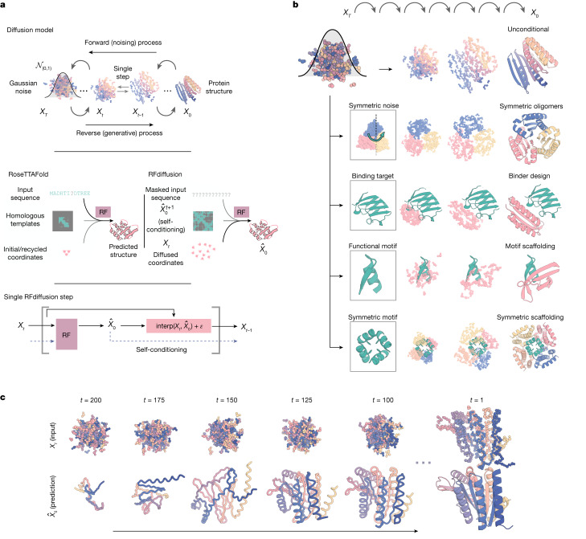
Figure 1 图注翻译
Figure 1. 使用 RFdiffusion 进行蛋白质设计。
(a) 面向蛋白质的扩散模型被训练来恢复被破坏(加噪)的蛋白质结构,并通过迭代去噪、将最初的随机噪声 X_T 逐步转变为逼真的结构 X₀,从而逆转破坏过程、生成新结构(上面板)。RF 结构预测网络(中间面板左侧)经过极小的架构改动即被微调为 RFdiffusion(中间面板右侧);面板中同时画出了 DDPM 的去噪网络。在 RF 中,模型的主要输入是序列;在 RFdiffusion 中,主要输入是扩散后的残基参考系(坐标与取向)。两种情形下,模型都预测最终的三维坐标(在 RFdiffusion 中记作 X̂₀)。下面板显示,在 RFdiffusion 中,模型会将其上一步的预测作为模板输入接收("自条件化",self-conditioning,见补充方法)。在轨迹的每个时间步 t(通常为 200 步),RFdiffusion 接收上一步得到的 X̂₀ᵗ⁺¹ 与 Xₜ,然后预测更新后的 X₀ 结构(X̂₀ᵗ);模型的下一个坐标输入(Xₜ₋₁)由朝 X̂₀ᵗ 方向的带噪插值(interp)生成。(b) RFdiffusion 广泛适用于蛋白质设计。RFdiffusion 既可以在没有任何进一步输入的情况下生成蛋白质结构(顶行),也可以通过以下条件信息生成(自上而下):对称性规格说明;结合靶标;蛋白质功能基序或对称功能基序。每种情形下,随机噪声与条件信息一起输入 RFdiffusion,后者迭代地精化该噪声,直至设计出最终的蛋白质结构。(c) 一条 300 残基链的无条件设计轨迹示例,展示了模型的输入(Xₜ)与相应的 X̂₀ 预测。在早期时间步(t 较大)时,X̂₀ 与蛋白质几乎没有相似之处,但会逐渐被精化为逼真的蛋白质结构。
【译注】看图要点:(a) 上半部分讲扩散模型原理——训练时学"去噪",生成时从纯噪声 X_T 一步步"去"回蛋白质 X₀;中间一行是本文核心操作:把 RF 预测网络(左,输入为序列)最小改动地变成 RFdiffusion 去噪网络(右,输入为带噪坐标参考系);下一行是自条件化——上一步的 X̂₀ 预测作为模板再喂回模型。(b) 概览五类任务:无条件生成、对称寡聚体、结合蛋白、基序支架化、对称基序支架化——后文结果按此逐一展开。(c) 直观展示"从噪声到蛋白"的去噪轨迹。
我们利用 RF 的参考系表示——每个残基由一个 Cα 坐标与一个 N-Cα-C 刚体取向构成——构建了基于 RF 的扩散模型 RFdiffusion。我们通过对接取自蛋白质数据库(Protein Data Bank, PDB)的结构加噪最多 200 步来生成训练输入[22]。对于平移,我们用三维高斯噪声扰动 Cα 坐标;对于残基取向,我们在旋转矩阵流形(manifold,数学上描述旋转全体构成的空间)上使用布朗运动(建立在文献 23、24 的工作基础上)。为使 RFdiffusion 学会逆转加噪过程的每一步,我们通过最小化"参考系预测与真实蛋白质结构(不做叠合比对)之间、对所有残基取平均"的均方误差(mean-squared error, m.s.e.)损失来训练模型(见补充方法)。这一损失驱使去噪轨迹在每个时间步上都匹配数据分布,从而收敛到可设计(designable,指存在氨基酸序列能折叠成该结构)的蛋白质主链结构(Extended Data Fig. 2a)。m.s.e. 与 RF 结构预测训练所用的损失(frame aligned point error,FAPE,参考系对齐点误差)形成对比:与 FAPE 不同,m.s.e. 损失对全局参考系并非不变,因而有助于保持各时间步之间全局坐标系的连续性(见补充方法)。
为生成一条新的蛋白质主链,我们先初始化随机的残基参考系,RFdiffusion 随即做出一个去噪预测。每个残基参考系都朝该预测的方向迈出一步并添加一定的噪声,以生成下一步的输入。所加噪声的性质与该逆向步长的大小是这样选择的:使去噪过程的分布与加噪过程的分布相匹配(见补充方法及Extended Data Fig. 2a)。起初,RFdiffusion 试图匹配与其初始化所用的纯随机参考系相容的全部可能蛋白质结构的范围,因此去噪得到的结构最初看起来并不像蛋白质(Fig. 1c, left);然而,经过许多这样的步骤之后,输入所可能来源的蛋白质结构范围不断收窄,RFdiffusion 的预测便开始与蛋白质结构十分相似(Fig. 1c, right)。我们随后使用 ProteinMPNN 网络[1]设计编码这些结构的氨基酸序列,按照此前工作的做法,每个设计通常采样八条序列[5,16](但另见(Supplementary Fig. 2a))。我们也考虑过在 RFdiffusion 内部同时设计结构与序列,但鉴于"仅扩散结构 + ProteinMPNN 序列"这一组合的出色表现,我们没有深入探索这一可能性。
Figure 1a 突出展示了 RF 结构预测与 RFdiffusion 去噪一步之间的相似性:在这两种情形下,网络都以模型的输入为条件,把坐标变换为预测的结构。在 RF 中,序列是主要输入,模板与初始坐标作为额外结构信息提供给模型;在 RFdiffusion 中,主要输入是来自上一步的带噪坐标。针对具体的设计任务,还可以提供一系列辅助条件信息,包括部分序列、折叠信息或固定的功能基序坐标(Fig. 1b 及补充方法)。
我们探索了两种不同的 RFdiffusion 训练策略:(1)类似"经典"扩散模型的方式,每个时间步的预测独立于此前各时间步的预测(如先前工作[5,8,9,16]那样);(2)带自条件化(self-conditioning)[25]的方式,即模型可以在相邻时间步之间以先前的预测为条件(Fig. 1a, bottom row 及补充方法)。后一策略的灵感来自 AF2 中"循环"(recycling,把上一轮预测回输入再迭代精化)机制的成功,该机制也是本文所用较新版 RF 模型的核心(见补充方法)。RFdiffusion 中的自条件化显著提升了其在涵盖条件化与无条件蛋白质设计任务的计算机模拟基准测试上的表现(Fig. 2e 与 Extended Data Fig. 1e)。自条件化轨迹内预测连贯性的提高,或许至少可以部分解释这些性能提升(Extended Data Fig. 1h)。从预训练 RF 权重出发微调 RFdiffusion,远比从未经训练的权重出发训练同样时长更成功(Extended Data Fig. 1f,g,另见(Supplementary Fig. 1));m.s.e. 损失对无条件生成也至关重要(Extended Data Fig. 1d)。对于本文所有计算机模拟基准测试,我们均使用 AF2 结构预测网络[17]进行验证,并将计算机模拟(in silico)"成功"定义为满足以下三条的 RFdiffusion 输出:由单条序列预测的 AF2 结构,(1)具有高置信度(平均预测对齐误差(predicted aligned error, pAE)小于 5);(2)与设计结构的主链均方根偏差(root mean-squared deviation, r.m.s.d.)全局小于 2 Å;(3)在任何被支架化的功能位点上主链 r.m.s.d. 小于 1 Å(见补充方法)。这一计算机模拟成功度量此前已被发现与实验成功相关[4,7,26],而且比其他工作[5,16,27–29]所使用的基于模板建模(template modelling, TM)分数的指标严格得多((Supplementary Fig. 2c,d))。
结果
无条件蛋白质单体生成(Unconditional protein monomer generation)
如 Fig. 2a–c 与 (Supplementary Fig. 3c,d) 所示,从随机噪声出发,RFdiffusion 能够轻松生成复杂精巧、与训练中见过的结构几乎没有整体结构相似性的蛋白质结构,表明其对 PDB 有相当强的泛化能力(本文所有设计与 PDB 的比较见(Supplementary Table 1))。这些设计是多样的((Supplementary Fig. 3a)),涵盖范围广泛的 α、β 与 α-β 混合拓扑;对于多至 600 个残基的从头设计,AF2 与 ESMFold(Fig. 2c、Extended Data Fig. 1b,c 与 (Supplementary Fig. 2b))的预测都与设计结构模型非常接近。RFdiffusion 甚至能为非常大的蛋白质生成貌似合理的结构,但这些结构难以在计算机模拟中验证,因为它们可能总体上已超出 AF2 与 ESMFold 的单序列预测能力。所采样设计的质量与多样性是模型内在固有的,并不依赖任何辅助条件输入(例如二级结构信息[8])。我们对其中六个 300 氨基酸设计与三个 200 氨基酸设计进行了实验表征,发现它们的圆二色谱(circular dichroism, CD,监测蛋白质二级结构的谱学方法)与设计的 α-β 混合拓扑一致,且极其耐热(Extended Data Fig. 3)。基于物理的蛋白质设计方法一直难以在无约束条件下生成多样的蛋白质单体,原因在于在非常庞大而崎岖的构象景观(conformational landscape,可理解为蛋白质所有可能构象构成的高维能量面)上采样十分困难[30];克服这一局限一直是检验基于深度学习的蛋白质设计方法的主要试金石[5,6,8,16,27,31]。基于上文所述的 AF2 成功指标,RFdiffusion 大幅胜过"RF 幻觉"(Hallucination with RF,一种经实验验证、用蒙特卡洛搜索或梯度下降寻找被预测折叠成稳定结构之序列的方法)(Fig. 2d)。RFdiffusion 的生成在计算上也比无约束的 RF 幻觉更高效;通过在推断时采用更大的步长并提前截断轨迹,效率还可大幅提升——这之所以可能,是因为 RF 在每个时间步都预测最终结构(Extended Data Fig. 2b,c)。例如,在 NVIDIA RTX A4000 图形处理器(GPU)上,生成一个 100 残基的蛋白质最短只需 11 秒,而 RF 幻觉约需 8.5 分钟。
在设计过程中若能指定蛋白质的折叠类型,往往是很有价值的(例如用于小分子结合蛋白与酶设计的磷酸丙糖异构酶(triose-phosphate isomerase, TIM)桶状折叠,或含空腔的 NTF2 折叠)[32,33];因此,我们进一步微调 RFdiffusion,使其能以二级结构和/或折叠信息为条件,从而快速、准确地生成具有期望拓扑的多样设计(Fig. 2g 与 Extended Data Fig. 4)。TIM 桶与 NTF2 折叠的计算机模拟成功率分别为 42.5% 与 54.1%(Extended Data Fig. 4d);对 11 个 TIM 桶设计的实验表征表明,至少有八个设计可溶、耐热,且圆二色谱与设计模型一致(Fig. 2g 与 Extended Data Fig. 4e,f)。
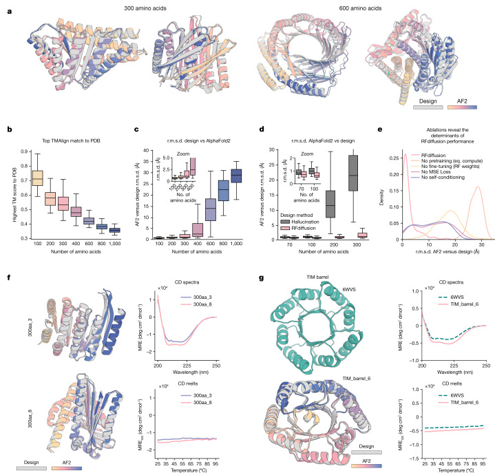
Figure 2 图注翻译
Figure 2. RFdiffusion 在单体生成上的出色表现。
(a) RFdiffusion 无需任何条件信息即可生成长度不同的新单体蛋白(左:300 个氨基酸;右:600 个氨基酸)。灰色为设计模型;彩色为 AF2 预测。AF2 与设计的 r.m.s.d.(Å),从左到右依次为:0.90、0.98、1.15、1.67。(b) 以对 PDB 的最高 TM-score 量化,RFdiffusion 的无条件设计是新的、并不存在于训练集中;与已知结构的偏离程度随长度增加而增大。(c) 无条件采样得到的结构在约 400 个氨基酸以内都能被 AF2 紧密地重新预测。(d) 在无条件单体生成上,RFdiffusion 显著优于(基于 RF 的)幻觉法(计算机模拟成功率的双比例 z 检验:每种条件 n = 400 个设计,z = 9.5,P = 1.6 × 10⁻²¹)。幻觉法虽能成功生成长度至 100 个氨基酸的设计,但超过该长度后,计算机模拟成功率迅速恶化。(e) 消融预训练(从未经训练的 RF 出发)、消融 RFdiffusion 微调(即直接以原 RF 结构预测权重充当去噪器)、消融自条件化或消融 m.s.e. 损失(改用 FAPE 训练),均会显著降低 RFdiffusion 的性能。图中展示的是 300 个氨基酸蛋白无条件生成时,设计与 AF2 之间的 r.m.s.d.(见补充方法)。(f) 两个以可溶单体形式表达的 300 氨基酸蛋白示例。左侧为设计(灰色)与 AF2 预测(彩色)的叠加图;右侧为圆二色(CD)谱(上)与熔化曲线(下)。这些设计高度耐热。(g) RFdiffusion 能以折叠信息为条件。左下为一个 TIM 桶示例,其条件是先前设计的 TIM 桶(PDB 6WVS,左上)的二级结构与模块邻接信息。设计的圆二色谱与 PDB 6WVS 非常相似(右上),且高度耐热(右下)。更多谱线另见 Extended Data Fig. 3。箱线图表示中位数 ± 四分位距;须线为剔除离群值(±1.5 × 四分位距)后的最小值与最大值。
【译注】看图要点:(a)–(c) 无条件生成的两大证据——AF2 单序列预测与设计模型高度一致(主链偏差 ~1 Å),且与 PDB 最相似结构的 TM-score 随长度下降(结构新颖);(d) 关键对比:对幻觉法的全面超越,长链尤为明显;(e) 四项消融(预训练、微调、自条件化、MSE 损失)缺一不可,这是方法学的"解剖图";(f)、(g) 实验落地——可溶表达、CD 谱型正确、95 °C 仍折叠。
高阶寡聚体的设计(Design of higher-order oligomers)
设计对称寡聚体(symmetric oligomer,由多个相同亚基按点群对称组装而成的蛋白质复合物)一直备受关注,它们可用作疫苗平台[34]、递送载体[35]与催化剂[36]。此前已利用结构预测网络、以经过改造的"幻觉"法(即搜索被预测折叠成期望环状对称的序列)设计出环状寡聚体,但该方法对更高阶的二面体(dihedral)、四面体(tetrahedral)、八面体(octahedral)与二十面体(icosahedral)对称均告失败,原因可能部分在于这类结构在 PDB 中的代表性低得多[7]。
我们着手将 RFdiffusion 推广到能创建具有任意指定点群对称(point group symmetry,由旋转与旋转-翻转变换构成的离散对称群,如 C3 环状、D4 二面体、二十面体群等)的对称寡聚体结构。给定一个 n 条链寡聚体的点群对称规格说明以及单链长度,我们先如无条件生成情形那样为单个单体亚基生成随机的起始残基参考系,再按指定的点群对称生成该起始点的 n − 1 份拷贝。由于 RFdiffusion(继承自 RF)对整体旋转与链的重新标记等变,去噪预测中的对称性基本得以保持;我们仍在每一步显式地重新对称化,但这只会轻微改变结构(比较 Extended Data Fig. 5a 中的灰色与彩色链,另见补充方法)。对于八面体与二十面体架构,我们只显式建模生成完整组装体所需的最小单体子集(例如对二十面体,只建模位于五重、三重与二重对称轴处的亚基),以降低计算开销与内存占用。
尽管未在对称输入上训练过,RFdiffusion 仍能以很高的计算机模拟成功率生成对称寡聚体(Extended Data Fig. 5b),尤其是在辅助的链间与链内接触势(contact potential,在去噪过程中引导链相互靠近/收缩成球状的外加引导势)的引导下(Extended Data Fig. 5c)。如 Fig. 3 与 Extended Data Fig. 5e 所示,RFdiffusion 设计与 AF2 对"设计序列所采取结构"的预测几乎无法区分,而且许多设计与已解析的蛋白质结构几乎没有相似之处(Extended Data Fig. 5d 与(Supplementary Table 1))。若干寡聚拓扑在 PDB 中从未出现,包括双层 β 桶(Fig. 3a,C10 对称)与复杂的 α/β 混合拓扑(Fig. 3a,C8 对称;与 PDB 中最接近的 TM 比对结果分别为 6BRP,0.47,与 6BRO,0.43)。
我们挑选了 608 个设计进行实验表征,并通过尺寸排阻色谱(size exclusion chromatography, SEC,即分子筛,按分子大小分离并指示寡聚状态)发现,至少有 87 个的寡聚化状态与设计模型高度一致(处于 95% 置信区间内;以 99% 置信区间衡量则为 126 个,由 SEC 校准曲线确定;(Supplementary Figs. 4 and 5))。利用这些寡聚体(相较上述较小的无条件和折叠条件单体)尺寸更大的优势,我们对不同对称群的其中一部分设计采集了负染电子显微镜(negative stain electron microscopy, nsEM,一种快速低分辨的电镜成像技术)数据。对大多数设计而言,无论在原始显微照片还是随后的二维(2D)分类中,都能清楚看到形状与设计模型相似的清晰颗粒(Fig. 3 与 Extended Data Fig. 5f)。对一个每亚基 350 残基(总计 1,050 残基)的 C3 设计(HE0822)的 nsEM 表明,其实际结构无论在 350 残基亚基层面还是整体 C3 架构上都十分接近设计:2D 分类平均图与设计模型的俯视图和侧视图明确一致,密度的 3D 重构也具有与设计一致的关键特征,包括标志性的风车形状(Fig. 3b, top row)。对三个残基数超过 750 的 C5 与 C6 设计(HE0794、HE0789、HE0841),电镜 2D 分类平均图同样与各自的设计模型一致(Extended Data Fig. 5f)。
RFdiffusion 还生成了具有 α 和/或 β 桶结构、形似"扩展版 TIM 桶"的环状寡聚体,为"自然演化中的创新"与"深度学习带来的创新"提供了一个有趣的对比。具有八条折叠股与八段螺旋的 TIM 桶折叠是自然界最丰富的折叠之一[37]。nsEM 证实了两个 RFdiffusion 设计的环状寡聚体的结构,它们大幅超越了这一折叠的范畴(Fig. 3b, bottom rows)。HE0626 是一个由 18 条股与 18 段螺旋组成的 C6 α-β 桶;HE0675 是一个 C8 八聚体,由 16 条股构成的内环与 16 段螺旋构成的外环组成,局部排布的重复模式与 TIM 桶极为相似(螺旋:股 = 1:1)。对 HE0626 与 HE0675,我们都获得了与计算设计模型相符的 nsEM 3D 重构。HE0600 设计同样是一个 α-β 桶(Extended Data Fig. 5f),但每段螺旋对应两条股(总计 24 条股与 12 段螺旋),因而其局部结构不同于 TIM 桶。自然演化已充分探索过经典"八股八螺旋"TIM 桶折叠的结构变化,而 RFdiffusion 能更自如地探索桶曲率的全局变化,从而发现螺旋与股数目多得多的类 TIM 桶结构。
RFdiffusion 也能轻松生成具有二面体、四面体与二十面体对称的结构(Fig. 3c,d 与 Extended Data Fig. 5e,f)。SEC 表征显示,38 个 D2、七个 D3 与三个 D4 设计具有预期的分子量(分别含四、六与八条链)((Supplementary Fig. 5))。虽然 D2 二面体太小、不适合 nsEM 成像,但 D3 与 D4 设计的 2D 分类平均图——部分还有 3D 重构——都与设计模型的整体拓扑相吻合(Fig. 3c 与 Extended Data Fig. 5f)。类似地,D4 设计 HE0537 的 3D 重构(Fig. 3c)与冷冻电子显微镜(cryo-EM)2D 分类平均图(Extended Data Fig. 5g 与 (Supplementary Fig. 6))都与设计模型紧密匹配,重现了四聚体亚基之间约 45° 的交错排布。一个 12 链四面体(HE0964)的 nsEM 2D 分类平均图也与设计模型一致(Extended Data Fig. 5f)。我们挑选了 48 个二十面体进行实验验证,其中一个——HE0902,一个直径 15 nm、高度多孔的组装体(Fig. 3d, left)——在 nsEM 显微照片中被观察到形成均一的颗粒;其 2D 分类平均图与 3D 重构都与设计模型非常接近(Fig. 3d),三角形枢纽围绕空置的 C5 轴排列。诸如 HE0902(以及未来类似的大型组装体)这样的设计,凭借其稳固的组装以及(就 HE0902 而言)朝向外的 N 端与 C 端为抗原展示提供了诸多可能,应可作为新的纳米材料与疫苗支架发挥作用。
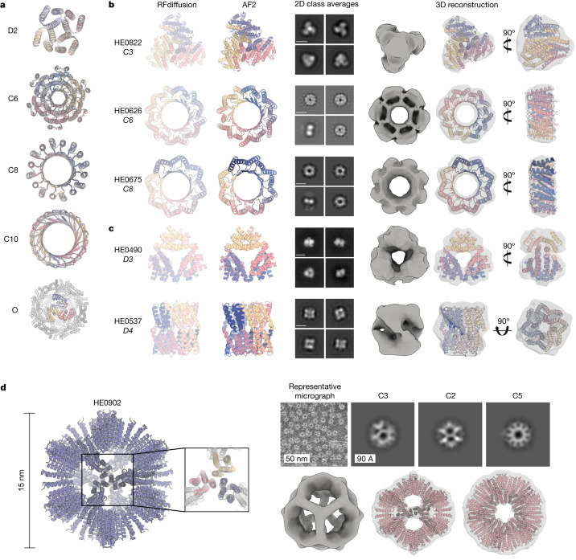
Figure 3 图注翻译
Figure 3. 对称寡聚体的设计与实验表征。
(a) RFdiffusion 生成的组装体与基于设计序列的 AF2 结构预测的叠加图;在所示五种情形中,两者都几乎无法区分(对八面体(下),预测针对的是其 C3 子结构)。对称性标注在设计模型的左侧。(b)、(c) 经 nsEM 表征的设计组装体。模型对称性如下:环状——C3(HE0822,每链 350 个氨基酸(AA))、C6(HE0626,每链 100 AA)与 C8(HE0675,每链 60 AA)(b);二面体——D3(HE0490,每链 80 AA)与 D4(HE0537,每链 100 AA)(c)。自左至右依次为:(1)对称设计模型,(2)经 ProteinMPNN 序列设计后设计物的 AF2 预测,(3)同时显示俯视与侧视的 2D 分类平均图(所有分类平均图的标尺均为 60 Å),以及(4)由分类平均图得到的 3D 重构,设计模型已拟合入密度图。整体形状与设计模型一致,并证实了预期的寡聚状态。与 (a) 相同,各设计的 AF2 预测与设计模型几乎无法区分(HE0822、HE0626、HE0490、HE0675 与 HE0537 的主链 r.m.s.d.(Å)分别为 1.33、1.03、0.60、0.74 与 0.75)。(d) 一个二十面体颗粒(HE0902,每链 100 AA)的 nsEM 表征。左侧为设计模型,包括 C3 亚基的 AF2 预测。右侧为 nsEM 数据:上方为一张代表性显微照片,以及沿各对称轴(C3、C2 与 C5,自左至右)的 2D 分类平均图;正下方为对应的 3D 重构图视角,叠加显示在设计模型上。
【译注】看图要点:(a) 五种点群(C6、C8、C10、D2、O)设计模型与 AF2 预测几乎重合——生成质量的一手证据;(b) 环状寡聚体从设计模型到 nsEM 2D/3D 电镜的完整验证链,风车状 C3(HE0822)与"放大版 TIM 桶"(HE0626:18 股 18 螺旋;HE0675:16+16)展示超越天然折叠的新拓扑;(c) 二面体 D3/D4 的 2D 分类与 3D 重构;(d) 15 nm 二十面体纳米颗粒 HE0902,三角枢纽围绕 C5 轴——疫苗支架类应用的直接雏形。
功能性基序的支架化(Functional-motif scaffolding)
我们接下来研究了用 RFdiffusion 对执行结合与催化功能的蛋白质结构基序(motif)进行支架化(scaffolding)——支架的作用是把基序精确固定在发挥最佳功能所需的三维几何构型中。在 RFdiffusion 中,无论条件训练还是推断阶段,基序都以三维坐标形式(含序列与侧链)输入,模型构建的支架将基序的原子坐标原位固定。近年来已有多种深度学习方法致力于解决这一问题,包括 RFjoint Inpainting(补全式填充)⁴、约束幻觉法(constrained Hallucination)⁴与其它去噪扩散概率模型(DDPM)⁵,⁸,²⁹。为在一组广泛的设计难题上严格评估这些方法与 RFdiffusion 的优劣,我们建立了一个计算机模拟基准测试(补充表9),包含六篇近期论文所涉及的 25 个基序支架化设计问题,涵盖多种设计方法学⁴,⁵,²⁹,³⁸⁻⁴⁰。这些难题的基序范围很广,包括简单的“补全”类问题、病毒表位、受体诱饵、小分子结合位点、结合界面与酶活性位点。
RFdiffusion 解出了 25 个基准问题中的 23 个,相比之下,幻觉法为 15 个、RFjoint Inpainting 为 19 个(Fig. 4a, b)。在 RFdiffusion 解出的 23 个问题中,有 19 个问题的成功设计比例高于幻觉法或 RFjoint Inpainting。RFdiffusion 的优异性能无需任何超参数调优或外部势;这与幻觉法形成对比——后者可能需要针对具体问题做优化。在 23 个问题中的 17 个,当反向扩散轨迹中不注入噪声时,RFdiffusion 生成的成功解在计算机模拟成功率上更高(噪声对设计质量影响的进一步讨论见 Extended Data Fig. 1i,设计多样性分析见补充图8)。RFdiffusion 支架化功能基序的能力与这些基序是否出现在其训练集中无关(补充图7)。
【译注】基序支架化是“功能设计”的核心问题:把关键的功能残基(如催化三联体、结合表位)按正确的几何关系“托”在一个全新蛋白骨架里。基准里的 25 个难题来自六篇真实设计论文——不是玩具题。“in silico 成功”的标准非常严格:AF2 与设计模型 r.m.s.d. < 2 Å、与天然基序 r.m.s.d. < 1 Å、pAE < 5(预测误差小)。
基准问题之一是对结合 MDM2 的 p53 螺旋进行支架化。通过支架化 p53 螺旋、并使其与 MDM2 形成额外相互作用,以高亲和力竞争性抑制的方式阻断这一互作,是一条有前景的治疗途径⁴¹。计算机层面的成功已在别处报道⁴,但实验成功此前未见报告。我们用在蛋白质复合物上微调(fine-tune)的 RFdiffusion 模型(补充方法)生成了 96 个支架化该螺旋的设计。我们在 MDM2 存在的条件下支架化 p53 螺旋,使 RFdiffusion 得以设计额外的相互作用,并经实验鉴定出亲和力为 0.5 与 0.7 nM 的结合物(Fig. 4c, d)——比单独 p53 肽段报道的 600 nM 亲和力高三个数量级⁴²。总成功率相当高:96 个设计中有 55 个在 10 μM 浓度下表现出可检测的结合(Fig. 4e)和补充图10h)。
【译注】背景:p53 是著名抑癌蛋白,MDM2 是其负调控因子(两者结合会抑制 p53),阻断 p53–MDM2 互作是经典抗癌药物靶点;支架化 p53 螺旋=把它镶进更稳定的全新蛋白里,既保持结合义能再新增接触面。BLI(生物膜干涉法)通过分子结合引起的光学厚度变化实时测亲和力,K D 越小亲和力越强:0.5 nM 是极强的结合剂水平。
酶活性位点的支架化(Scaffolding enzyme active sites)
蛋白质设计的一大终极挑战,是对仅由少数单个氨基酸构成的酶活性位点最小描述进行支架化。尽管此前已有一些计算机层面的成功报道⁴,但一个能便捷产出高质量、经正交验证结果的通用方案仍然缺位。在针对模拟该问题的任务进行微调后(补充方法),RFdiffusion 能够以高精度支架化包含多个侧链与主链官能团的酶活性位点,并在一系列酶类别上取得可观的计算机模拟成功率(Fig. 4f)和 Extended Data Fig. 6a–d;计算机层面的成功需要微调)。虽然 RFdiffusion 目前无法显式建模结合状态的小分子(但见我们的结论部分),但可以利用外部势隐式模拟底物,引导在活性位点周围生成“口袋”。作为演示,我们在隐式模拟反应底物的同时,支架化了一个逆醛缩酶(retroaldolase)活性位点三联体(Extended Data Fig. 6e–h)。
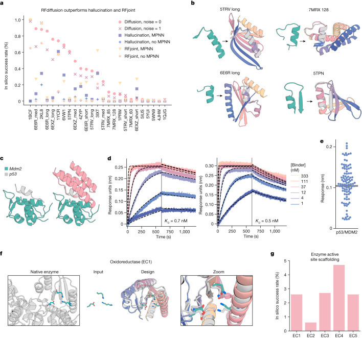
Figure 4 图注翻译
Figure 4. 用 RFdiffusion 支架化多样的功能位点。
a, 在收集自六篇近期出版物的 25 个基准基序支架化问题上(补充表9),RFdiffusion 优于其它方法。计算机模拟成功(in silico success)的定义为:AF2 与设计模型的 r.m.s.d. 小于 2 Å、AF2 与天然功能基序的 r.m.s.d. 小于 1 Å、且 AF2 pAE 小于 5。每个问题生成 100 个设计,未在该基准集上做过任何事先优化(幻觉法需要一些优化)。完整结果见补充表10。各方法在这些问题的计算机模拟成功率彼此相关,当所有方法成功率都低时,RFdiffusion 在困难问题上仍可能吃力。
b, RFdiffusion 显著超越现有方法的四个设计实例。蓝绿色,天然基序;彩色,设计的 AF2 预测。指标(r.m.s.d. AF2 对设计模型/对天然基序(Å),AF2 pAE):5TRV long,1.17/0.57;4.73;6E6R long,0.89/0.27,4.56;7MRX long,0.84/0.82,4.32;5TPN,0.59/0.49,3.77。
c, RFdiffusion 可以支架化结合 MDM2 的 p53 螺旋(左),并与靶标形成额外接触(右,平均表面积增加 31%。所用设计为 p53_design_89)。设计由在复合物上微调的 RFdiffusion 模型生成。
d, BLI 测量表明与 MDM2 高亲和力结合(p53_design_89,0.7 nM;p53_design_53,0.5 nM);天然亲和力为 600 nM(文献42)。
e, 95 个设计中有 55 个显示与 MDM2 结合(超过最大响应的 50%)。其中 32 个为单体(补充图10h)。
f, 微调后(补充方法),RFdiffusion 可以支架化酶活性位点。展示一个氧化还原酶实例(EC1)(PDB 1A4I);催化位点(蓝绿色);RFdiffusion 输出(灰色,模型;彩色,AF2 预测);活性位点放大图。AF2 对设计模型主链 r.m.s.d. 0.88 Å,AF2 对设计基序主链 r.m.s.d. 0.53 Å,AF2 对设计基序全原子 r.m.s.d. 1.05 Å,AF2 pAE 4.47。
g, 来源于 EC1–5 酶活性位点的计算机模拟成功率(AF2 基序对天然结构 r.m.s.d.:主链小于 1 Å、主链加侧链原子小于 1.5 Å,r.m.s.d. AF2 对设计小于 2 Å,AF2 pAE 小于 5)。
【译注】看图要点:(a) 25 个真实设计难题的“擂台赛”——23/25 vs 15、19;(b) 四个碾压案例的 AF2 预测与设计几乎重合;(c,d) p53 螺旋镶嵌+额外接触面→0.5/0.7 nM 结合剂,比裸肽强千倍;(f,g) 酶活性位点(仅少数关键残基)也能被精确托住。注:原文图注写“95 个设计”,而正文写“96 个”,系原文不一致,均按原样保留。
对称功能性基序的支架化(Symmetric functional-motif scaffolding)
若干重要的设计挑战涉及以对称排布支架化功能基序的多个拷贝。例如,许多病毒糖蛋白是三聚体,抑制性结构域与之一一匹配的对称排布可极为有效⁴³⁻⁴⁶;反过来,以模拟病毒本身的排布对称展示病毒表位,也可能诱导新型中和抗体⁴⁷,⁴⁸。为探索这一总体方向,我们尝试设计针对 SARS-CoV-2 刺突蛋白(spike protein)的三聚体多价结合物。此前工作中,把针对刺突蛋白受体结合域上 ACE2 结合位点的结合物,通过柔性连接串连到三聚化结构域,得到了高亲和力抑制剂,在动物模型中具有强效且广谱的中和抗病毒活性⁴³。然而理想情况下,与结合物的对称融合应当是刚性的,以降低结合的熵代价,同时保留多价性带来的亲合力(avidity)收益。我们用 RFdiffusion 设计了 C3 对称三聚体,刚性固定三个结合结构域(此处的功能基序),使其与 SARS-CoV-2 刺突蛋白三聚体上的 ACE2 结合位点精确匹配。AF2 以高置信度预测这些设计既能组装成 C3 对称寡聚体,又能高精度地支架化 AHB2 SARS-CoV-2 结合物界面(Fig. 5a)。
以任意指定对称性支架化功能位点的能力,为设计金属配位蛋白质组装体开辟了新途径⁴⁹,⁵⁰。二价过渡金属离子对特定配位几何(如平面正方形、四面体与八面体)有明确的偏好,且每种离子有各自最优的侧链–金属键长。RFdiffusion 提供了在这类位点周围构建对称蛋白组装体的通用路线——组装体的对称性与配位几何的对称性相匹配。作为首个测试,我们尝试设计平面正方形 Ni²⁺ 结合位点:设计出 C4 蛋白组装体,其中四个中心组氨酸咪唑基排列成理想的平面正方形 Ni²⁺ 结合位点(Fig. 5b)。从不同 C4 对称组氨酸平面正方形位点出发的多种设计都取得了良好的计算机模拟成功率——在 AF2 预测结构中,组氨酸残基以近乎理想的几何构型配位金属(补充图9)。
我们在大肠杆菌中表达并纯化了 44 个设计,发现 37 个的分子排阻色谱(SEC)图谱与预期的寡聚状态一致(Extended Data Fig. 7b)。其中 36 个经等温滴定量热(ITC)测试 Ni²⁺ 配位,18 个被证实结合 Ni²⁺,解离常数从低纳摩尔到低微摩尔(Fig. 5c,d)及 Extended Data Fig. 7a)。野生型滴定曲线的拐点表明结合符合设计的化学计量——离子与单体之比为 1:4。虽然大多数设计的金属配位为放热,个别情况下结合为吸热(Fig. 5d)左侧与 Extended Data Fig. 7a:NiB2.9、NiB2.10、NiB2.15 与 NiB2.23),提示这些组装体中 Ni²⁺ 配位由熵驱动。为确认 Ni²⁺ 结合确实由支架化的第 52 位组氨酸介导,我们将该残基突变为丙氨酸:在 17 个表达成功的案例中,全部 17 个的结合被消除或显著减弱(Extended Data Figs. 7a,c 与 Fig. 5c,d;一个突变体不表达)。我们对显示组氨酸依赖性结合的一个设计子集——NiB1.12、NiB1.15、NiB1.17 与 NiB1.20——进行了 nsEM 结构表征。四个设计在原始显微照片与 2D 分类平均图中都显示出清晰的四重对称(Fig. 5c,d),其中 NiB1.17 还清楚呈现二重轴侧视图,测量直径与设计模型接近。NiB1.17 的三维重构与设计模型高度吻合(Fig. 5c)。
【译注】看图要点:(a) “三价刚性锁定”——把三个病毒结合域按刺突三聚体的几何一次性对准;(b–d) “组装体对称性 = 配位几何对称性”的理念验证:C4 对称蛋白托住平面正方形 Ni²⁺ 位点;SEC 看寡聚状态、ITC 直接给出 K D、化学计量与热力学(吸热=熵驱动);H52A 突变对照是标准正交验证。术语:SEC=尺寸排阻色谱;ITC=等温滴定量热;avidity(亲合力)=多个弱结合位点协同产生的总有效亲和力,区别于单一位点的亲和力(affinity)。
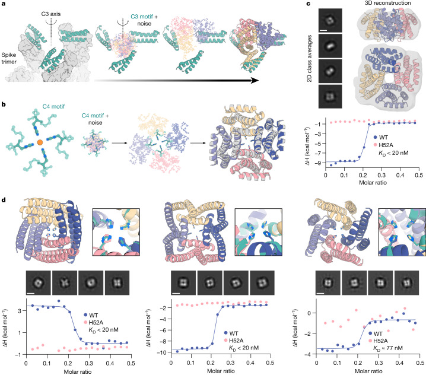
Figure 5 图注翻译
Figure 5. 用 RFdiffusion 进行对称基序支架化。
a, 设计支架化 ACE2 模拟体 AHB2 结合界面(左,蓝绿色)的对称寡聚体,针对 SARS-CoV-2 刺突三聚体(左,灰色)。三份 AHB2 拷贝与 C3 噪声一同输入 RFdiffusion(中);输出为 C3 对称寡聚体,将三份 AHB2 拷贝原位固定以同时结合刺突的所有亚基。AF2 预测(右)重现 AHB2 结构,不对称单元 r.m.s.d. 0.6 Å,C3 组装体 r.m.s.d. 2.9 Å。
b, 设计 C4 对称寡聚体以支架化 Ni²⁺ 结合基序(左)。从螺旋片段内的平面正方形组氨酸旋转异构体出发(补充方法),RFdiffusion 生成支架化该结合结构域的 C4 寡聚体(中)。AF2 预测(彩色)与设计模型(灰色)高度一致,主链 r.m.s.d. 小于 1.0 Å(右)。
c, nsEM 2D 分类平均图(标尺 60 Å)与三维重构密度与 NiB1.17 设计模型的对称性和结构一致,设计模型以带状图叠加显示在密度图上(上)。设计 NiB1.17 的 ITC 结合等温线(蓝色)表明,在金属:单体化学计量 1:4 时解离常数小于 20 nM。H52A 突变体等温线(粉色)结合消失,说明支架化组氨酸残基是金属结合的关键。
d, 其它经实验表征的 Ni²⁺ 结合物:NiB2.15(左)、NiB1.12(中)与 NiB1.20(右)。设计模型中的金属配位侧链(上,蓝绿色)在 AF2 预测(彩色)中被紧密重现。2D nsEM 分类平均图(中;标尺 60 Å)与设计模型一致。野生型(WT)与 H52A 突变体(下)的结合等温线表明 Ni²⁺ 结合由支架化组氨酸按设计的化学计量直接介导。注意 ITC 图中数据点代表单次测量。
蛋白结合蛋白的设计(Design of protein-binding proteins)
设计对靶标蛋白的高亲和力结合物是蛋白质设计的一大终极挑战,具有大量治疗应用⁵¹。近期已有仅凭靶标结构信息、用基于物理的 Rosetta 方法从头设计结合物的通用方案¹²;随后发现,用 ProteinMPNN 做序列设计、用 AF2 做设计过滤可提升设计成功率²⁶。然而,实验成功率仍然偏低,每次设计战役(design campaign)仍需筛选数千个设计¹²;且该方法依赖预先指定一组蛋白骨架作为设计基础,这从根本上限制了可能方案的多样性与形状互补性¹²。据我们所知,尚无深度学习方法在完全从头设计结合物上展示出普遍的实验成功。
我们推断,RFdiffusion 或许能通过“在靶标背景下直接生成结合蛋白”来应对这一挑战。对于许多治疗应用(例如阻断蛋白–蛋白互作),希望结合靶标蛋白上的特定位点。为此,我们在蛋白复合物结构上对 RFdiffusion 进行了微调,输入一个特征以标示靶标链上被扩散链结合的残基子集(称为“界面热点(interface hotspots)”)(Fig. 6a)及 Extended Data Fig. 8a,b)。对于某些特定结合物折叠可能特别兼容的设计难题,我们还微调了一个额外模型,在界面热点条件之外,进一步用二级结构与区块相邻信息作为条件,实现对结合物骨架拓扑的粗粒度控制(Extended Data Fig. 8c,d 与补充方法)。
为将 RFdiffusion 与此前的结合物设计方法比较,我们针对五个靶标开展了结合物设计战役:甲型流感 H1 血凝素(HA)⁵²、白介素-7 受体 α(IL-7Rα)¹²、程序性死亡配体 1(PD-L1)¹²、胰岛素受体(InsR)与原肌球蛋白受体激酶 A(TrkA)¹²。我们对每个靶标(无论是否以兼容折叠信息为条件)设计了候选结合物,均取得很高的计算机模拟成功率(Extended Data Fig. 8e,f)。设计按 AF2 对界面与单体结构的置信度过滤²⁶后,每个靶标选出 95 个进行实验表征。
设计的结合物在大肠杆菌中表达纯化后,通过 10 μM 结合浓度下的单点生物膜干涉(BLI)筛选评估结合(Extended Data Fig. 8g)。总实验成功率——定义为结合响应达到或超过阳性对照最大响应的 50%——为 19%(这是保守估计,因为部分显示结合的设计因材料不足未能在 10 μM 下筛选:Extended Data Fig. 8g);相对我们此前基于 Rosetta 的方法在相同靶标上的表现,提升约两个数量级(Fig. 6b)。五个靶标全部找到了结合物,每个靶标测试的设计不足 100 个,而以往研究需要数千个。部分设计的完整 BLI 滴定显示纳摩尔级亲和力且无需任何进一步实验优化,包括亲和力约 30 nM 的 HA 与 IL-7Rα 结合物(Fig. 6c)。结合界面往往与 PDB 中这些靶标的既有界面高度不同(补充图11、12)。为评估结合物特异性,对六个最高亲和力的 IL-7Rα 结合物进行了竞争 BLI:六个全部与一个经结构验证、结合相同位点的阳性对照发生竞争(补充图10a;蛋白质组范围的特异性仍需进一步工作)。
我们用冷冻电镜解析了亲和力最高的流感结合物 HA_20 与 Iowa43 HA 复合物的结构(Extended Data Table 1)。原始电子显微照片显示 HA 糖蛋白折叠良好,在薄层玻璃态冰中可清晰分辨侧视、俯视与倾斜取向(Extended Data Fig. 9a)。2D 分类平均图进一步显示了对应于 Iowa43 HA 的清晰二级结构元素(Extended Data Fig. 9b),以及结合在茎部的 HA_20 结合物(Fig. 6e)。不施加对称的三维异质性细化显示,HA_20 结合物占据了全部三个 HA 茎部表位。最终以 C3 对称进行的非均匀三维细化重构,得到了 2.9 Å 的 HA/HA_20 蛋白–蛋白复合物密度图(Fig. 6f);相应的三维结构与计算设计模型几乎完美吻合(0.63 Å,Fig. 6f, g;界面上的侧链相互作用与 PDB 中最接近的结构大相径庭;Extended Data Fig. 9h)。仅看结合物本身,实验结构与 RFdiffusion 设计的偏差只有 0.6 Å(Fig. 6h)。这些结果证明,RFdiffusion 能以原子级精度生成新蛋白质,并精确瞄准治疗重要蛋白上与功能相关的位点。
【译注】看图要点:(a) 界面热点条件化——指定靶标关键残基,扩散链围绕它“长”出来;(b) 五靶标全部命中,且对 IL-7Rα/InsR/PD-L1/TrkA 成功率提升约两个数量级,作者将其中一个数量级归功于 RFdiffusion、另一个归功于 AF2 过滤;(c,d) 无任何实验优化即得 ~30 nM 级结合物;(e–h) 2.9 Å 冷冻电镜 + 0.63/0.6 Å RMSD——“原子级准确”的最终结构证据。背景:PD-L1=肿瘤免疫检查点;TrkA=神经生长因子受体;InsR=胰岛素受体;IL-7Rα=免疫细胞因子受体——都是药物研发热门靶点。
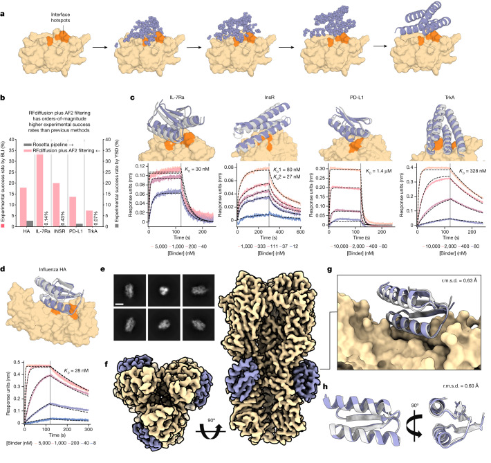
Figure 6 图注翻译
Figure 6. 蛋白结合蛋白的从头设计。
a, RFdiffusion 在给定靶标与界面热点残基指定时生成蛋白结合物。
b, 针对五个蛋白靶标设计从头结合物:甲型流感 H1 HA、IL-7Rα、InsR、PD-L1 与 TrkA;所有靶标都鉴定到 BLI 响应≥阳性对照 50% 的命中。对 IL-7Rα、InsR、PD-L1 与 TrkA,RFdiffusion 的成功率比最初的设计战役高约两个数量级。我们将其中的一个数量级归功于 RFdiffusion,另一个归功于 AF2 过滤(若当初战役使用 AF2 过滤的估计成功率:HA,0%;IL-7Rα,2.2%;InsR,5.5%;PD-L1,3.7%;TrkA,1.5%)。
c, 对 IL-7Rα、InsR、PD-L1 与 TrkA,最高亲和力结合物及其 BLI 滴定系列。报告的 K D 值基于固定全局 R max 的全局动力学拟合。
d, 最高亲和力的 HA 结合物 HA_20,以 K D = 28 nM 结合。c,d 黄色或橙色,靶标或热点残基;灰色,设计模型;紫色,AF2 预测(r.m.s.d. AF2 对设计)。结合物:IL7Ra_55(2.1 Å)、InsulinR_30(2.6 Å)、PDL1_77(1.5 Å)、TrkA_88(1.4 Å)(c 中从左至右)与 HA_20(1.7 Å)(d)。
e, HA_20 结合流感 HA(A/USA:Iowa/1943 H1N1 毒株)的冷冻电镜 2D 分类平均图(标尺 10 nm)。
f, 复合物沿两个正交视角的 2.9 Å 冷冻电镜三维重构。HA_20(紫色)沿三个亚基的茎部结合 H1。
g, HA_20 结合物复合物的冷冻电镜结构与设计模型紧密吻合(对 RFdiffusion 设计的 r.m.s.d. 0.63 Å;黄色,流感 HA)。
h, HA_20 结合物单独的结构叠加在设计模型上,沿两个正交视角。冷冻电镜图板中:黄色,流感 H1 密度图和/或结构;灰色,HA_20 结合物设计模型;紫色,HA_20 结合物密度图或结构。
讨论
RFdiffusion 是对现有蛋白质设计方法的全面改进。它能轻松生成长达 600 个残基、多样且被 AF2 准确预测的无条件设计,远超此前大多数方法所达到的复杂度与准确性(近期一种基于幻觉的方法也取得了很高的无条件生成性能⁵³)。我们测试的无条件设计中,一半可以可溶表达,其圆二色谱与设计模型一致,且热稳定性高。尽管复杂度大幅提升,RFdiffusion 设计的“理想性”与稳定性与 Rosetta 等既有方法得到的从头设计相当。与幻觉法迄今仅限循环对称不同,RFdiffusion 能以任意指定对称性生成高阶架构。电子显微镜证实,这些寡聚体的结构与设计模型高度相似——而后者在许多情况下与已知蛋白寡聚体几乎无全局相似性。
近期,用深度学习方法(幻觉法、RFjoint Inpainting 与扩散法)支架化蛋白功能基序均有所进展,但幻觉法在大体系上很慢,Inpainting 在初始信息不足时会失败,而以往的扩散方法精度低。在可支架化基序的复杂度、侧链定位(对催化等功能至关重要)的精度、以及 AF2 对基序的重现准确性上,RFdiffusion 都优于上述方法。设计出比支架化 p53 基序本身亲和力高三个数量级的 MDM2 结合蛋白,展示了 RFdiffusion 基序支架化的稳健性。将精确的基序支架化与对称组装体设计结合,使我们能够在多种四聚体组装体中一致地、以原子精度定位协调 Ni²⁺ 离子的侧链。
仅凭靶标结构信息设计结合物方面,以往工作需要测试数万条序列¹²。RFdiffusion 与改进的过滤²⁶相结合,将实验成功率提高了两个数量级;从几十个设计中即可鉴定出高亲和力结合物,许多情况下免除了缓慢而昂贵的高通量筛选(至少对本文所针对的非极性位点是如此;对更极性的靶点位点以及没有天然结合伙伴的位点,还需进一步研究评估成功率)。其中一个设计与流感 HA 复合物的高分辨率冷冻电镜结构表明,RFdiffusion 能以原子精度设计功能蛋白。Vázquez Torres 等人⁵⁴展示了 RFdiffusion 设计针对柔性螺旋肽的皮摩尔级亲和力结合物的能力,进一步凸显其在从头结合物设计中的用途。Vázquez Torres 等人还展示了通过“部分加噪—去噪”扩展 RFdiffusion 用于蛋白质模型精修,从而在给定输入结构周围实现可调采样;在肽结合物设计中,这在无需高通量筛选的情况下将亲和力提升了近三个数量级。
RFdiffusion 可解问题的广度与复杂度、以及解的稳健性与准确性,都远超此前所达到的水平。正如用文字提示生成图像一样,RFdiffusion 使人们只需最少的专业知识,就能从最小分子规格出发(例如,针对用户指定靶蛋白的高亲和力结合物、按用户指定对称性的多样蛋白组装体)生成功能蛋白。
RFdiffusion 的能力与适用范围还可从多个方向拓展。RF 近期已扩展到核酸及蛋白–核酸复合物⁵⁵,这将使 RFdiffusion 有望设计核酸结合蛋白、甚至折叠 RNA 结构。把 RF 扩展到记入配体,同样有望让 RFdiffusion 显式建模配体原子,实现蛋白–配体相互作用的设计。通过外部势与微调来针对特定设计难题定制 RFdiffusion(如本文所示:催化位点支架化、结合物靶定、折叠指定),加之底层方法的持续改进,应能使从头蛋白质设计达到更高的复杂度,逼近、并在某些情况下超越自然进化所达到的成就。
【译注】最后两段是全文的“升华”:(1)“像交本文提示词生成图像一样生成蛋白质”——把 Stable Diffusion 的类比落到蛋白质;(2)三条扩展路线:核酸/蛋白–核酸复合物、配体显式建模、外部势+微调定制化。这些预言在后续工作中均已部分兑现(如结合物亲和力成熟、全原子扩散模型后续出现)。另注意同行工作 Vázquez Torres 等同期刊发的配套论文也被纳入讨论,体现“方法+应用”姊妹篇格局。
在线内容(Online content)
所有方法、附加参考文献、Nature Portfolio 报告摘要、源数据、扩展数据、补充信息、致谢、同行评审信息;作者贡献与利益竞争声明;以及数据与代码可用性声明,均见 https://doi.org/10.1038/s41586-023-06415-8。
参考文献(References,保留英文原文,不翻译)
1. Dauparas, J. et al. Robust deep learning-based protein sequence design using ProteinMPNN. Science 378, 49–56 (2022).
2. Ferruz, N., Schmidt, S. & Höcker, B. ProtGPT2 is a deep unsupervised language model for protein design. Nat. Commun. 13, 4348 (2022).
3. Singer, J. M. et al. Large-scale design and refinement of stable proteins using sequence-only models. PLoS ONE 17, e0265020 (2022).
4. Wang, J. et al. Scaffolding protein functional sites using deep learning. Science 377, 387–394 (2022).
5. Trippe, B. L. et al. Diffusion probabilistic modeling of protein backbones in 3D for the motif-scaffolding problem. in The Eleventh International Conference on Learning Representations (2023).
6. Anishchenko, I. et al. De novo protein design by deep network hallucination. Nature 600, 547–552 (2021).
7. Wicky, B. I. M. et al. Hallucinating symmetric protein assemblies. Science 378, 56–61 (2022).
8. Anand, N. & Achim, T. Protein structure and sequence generation with equivariant denoising diffusion probabilistic models. Preprint at https://doi.org/10.48550/arXiv.2205. 15019 (2022).
9. Luo, S. et al. Antigen-specific antibody design and optimization with diffusion-based generative models. in Adv. Neural Information Processing Systems Vol. 35 (eds Koyejo, S. et al.) 9754–9767 (Curran Associates, 2022).
10. Sohl-Dickstein, J., Weiss, E. A., Maheswaranathan, N. & Ganguli, S. Deep unsupervised learning using nonequilibrium thermodynamics. in Proc. 32nd International Conference on Machine Learning Vol. 37 (eds Bach, Francis and Blei, David) 2256–2265 (PMLR, 2015).
11. Ho, J., Jain, A. & Abbeel, P. Denoising diffusion probabilistic models. in Adv. Neural Information Processing Systems Vol. 33 (eds Larochelle, H. et al.) 6840–6851 (Curran Associates, 2020).
12. Cao, L. et al. Design of protein-binding proteins from the target structure alone. Nature 605, 551–560 (2022).
13. Kuhlman, B. et al. Design of a novel globular protein fold with atomic-level accuracy. Science 302, 1364–1368 (2003).
14. Ramesh, A. et al. Zero-shot text-to-image generation. in Proc. 38th International Conference on Machine Learning Vol. 139 (eds Meila, M. & Zhang, T.) 8821–8831 (PMLR, 2021).
15. Saharia, C. et al. Photorealistic text-to-image diffusion models with deep language understanding. in Adv. Neural Information Processing Systems Vol. 35 (eds Koyejo, S. et al.) 36479–36494 (Curran Associates, 2022).
16. Wu, K. E. et al. Protein structure generation via folding diffusion. Preprint at https://doi. org/10.48550/arXiv.2209.15611 (2022).
17. Jumper, J. et al. Highly accurate protein structure prediction with AlphaFold. Nature 596, 583–589 (2021). 1100 | Nature | Vol 620 | 31 August 2023
18. Baek, M. et al. Accurate prediction of protein structures and interactions using a three-track neural network. Science 373, 871–876 (2021).
19. Watson, J. L., Bera, A., Juergens, D., Wang, J. & Baker, D. X-ray crystallographic validation of design from this paper. Science 377, 387–394 (2022).
20. Wu, R. et al. High-resolution de novo structure prediction from primary sequence. Preprint at https://doi.org/10.1101/2022.07.21.500999 (2022).
21. Lin, Z. et al. Language models of protein sequences at the scale of evolution enable accurate structure prediction. Science 379, 1123–1130 (2023).
22. Berman, H. M. et al. The Protein Data Bank. Nucleic Acids Res. 28, 235–242 (2000).
23. De Bortoli, V. et al. Riemannian score-based generative modelling. in Adv. Neural Information Processing Systems Vol. 35 (eds Koyejo, S. et al.) 2406–2422 (Curran Associates, 2022).
24. Leach, A., Schmon, S. M., Degiacomi, M. T. & Willcocks, C. G. Denoising diffusion probabilistic models on SO(3) for rotational alignment. In Proc. ICLR 2022 Workshop on Geometrical and Topological Representation Learning (2022).
25. Chen, T., Zhang, R. & Hinton, G. Analog bits: generating discrete data using diffusion models with self-conditioning. in The Eleventh International Conference on Learning Representations (2023).
26. Bennett, N.R. et al. Improving de novo protein binder design with deep learning. Nat. Commun. 14, 2625 (2023).
27. Anand, N. & Huang, P. Generative modeling for protein structures. in Adv. Neural Information Processing Systems Vol. 31 (eds Bengio, S. et al.) (Curran Associates, 2018).
28. Ingraham, J. et al. Illuminating protein space with a programmable generative model. Preprint at bioRxiv https://doi.org/10.1101/2022.12.01.518682 (2022).
29. Lee, J. S. & Kim, P. M. ProteinSGM: Score-based generative modeling for de novo protein design. Preprint at bioRxiv https://doi.org/10.1101/2022.07.13.499967 (2022).
30. Onuchic, J. N., Luthey-Schulten, Z. & Wolynes, P. G. Theory of protein folding: the energy landscape perspective. Annu. Rev. Phys. Chem. 48, 545–600 (1997).
31. Jendrusch, M., Korbel, J. O. & Sadiq, S. K. AlphaDesign: a de novo protein design framework based on AlphaFold. Preprint at bioRxiv https://doi.org/10.1101/2021.10.11. 463937 (2021).
32. Basanta, B. et al. An enumerative algorithm for de novo design of proteins with diverse pocket structures. Proc. Natl Acad. Sci. USA 117, 22135–22145 (2020).
33. Pan, X. et al. Expanding the space of protein geometries by computational design of de novo fold families. Science 369, 1132–1136 (2020).
34. Marcandalli, J. et al. Induction of potent neutralizing antibody responses by a designed protein nanoparticle vaccine for respiratory syncytial virus. Cell 176, 1420–1431.e17 (2019).
35. Butterfield, G. L. et al. Evolution of a designed protein assembly encapsulating its own RNA genome. Nature 552, 415–420 (2017).
36. Goodsell, D. S. & Olson, A. J. Structural symmetry and protein function. Annu. Rev. Biophys. Biomol. Struct. 29, 105–153 (2000).
37. Sterner, R. & Höcker, B. Catalytic versatility, stability, and evolution of the (βα)8-barrel enzyme fold. Chem. Rev. 105, 4038–4055 (2005).
38. Sesterhenn, F. et al. De novo protein design enables the precise induction of RSV-neutralizing antibodies. Science 368, eaay5051 (2020).
39. Yang, C. et al. Bottom-up de novo design of functional proteins with complex structural features. Nat. Chem. Biol. 17, 492–500 (2021).
40. Glasgow, A. et al. Engineered ACE2 receptor traps potently neutralize SARS-CoV-2. Proc. Natl Acad. Sci. USA 117, 28046–28055 (2020).
41. Chène, P. Inhibiting the p53-MDM2 interaction: an important target for cancer therapy. Nat. Rev. Cancer 3, 102–109 (2003).
42. Kussie, P. H. et al. Structure of the MDM2 oncoprotein bound to the p53 tumor suppressor transactivation domain. Science 274, 948–953 (1996).
43. Hunt, A. C. et al. Multivalent designed proteins neutralize SARS-CoV-2 variants of concern and confer protection against infection in mice. Sci. Transl. Med. 14, eabn1252 (2022).
44. Silverman, J. et al. Multivalent avimer proteins evolved by exon shuffling of a family of human receptor domains. Nat. Biotechnol. 23, 1556–1561 (2005).
45. Detalle, L. et al. Generation and characterization of ALX-0171, a potent novel therapeutic nanobody for the treatment of respiratory syncytial virus infection. Antimicrob. Agents Chemother. 60, 6–13 (2016).
46. Strauch, E.-M. et al. Computational design of trimeric influenza-neutralizing proteins targeting the hemagglutinin receptor binding site. Nat. Biotechnol. 35, 667–671 (2017).
47. Boyoglu-Barnum, S. et al. Quadrivalent influenza nanoparticle vaccines induce broad protection. Nature 592, 623–628 (2021).
48. Walls, A. C. et al. Elicitation of potent neutralizing antibody responses by designed protein nanoparticle vaccines for SARS-CoV-2. Cell 183, 1367–1382.e17 (2020).
49. Salgado, E. N., Lewis, R. A., Mossin, S., Rheingold, A. L. & Tezcan, F. A. Control of protein oligomerization symmetry by metal coordination: C2 and C3 symmetrical assemblies through CuII and NiII coordination. Inorg. Chem. 48, 2726–2728 (2009).
50. Salgado, E. N. et al. Metal templated design of protein interfaces. Proc. Natl Acad. Sci. USA 107, 1827–1832 (2010).
51. Quijano-Rubio, A., Ulge, U. Y., Walkey, C. D. & Silva, D.-A. The advent of de novo proteins for cancer immunotherapy. Curr. Opin. Chem. Biol. 56, 119–128 (2020).
52. Chevalier, A. et al. Massively parallel de novo protein design for targeted therapeutics. Nature 550, 74–79 (2017).
53. Frank, C. et al. Efficient and scalable de novo protein design using a relaxed sequence space. Preprint at bioRxiv https://doi.org/10.1101/2023.02.24.529906 (2023).
54. Torres, S. V. et al. De novo design of high-affinity protein binders to bioactive helical peptides. Preprint at bioRxiv https://doi.org/10.1101/2022.12.10.519862 (2022).
55. Baek, M., McHugh, R., Anishchenko, I., Baker, D. & DiMaio, F. Accurate prediction of nucleic acid and protein-nucleic acid complexes using RoseTTAFoldNA. Preprint at bioRxiv https://doi.org/10.1101/2022.09.09.507333 (2022). Publisher’s note Springer Nature remains neutral with regard to jurisdictional claims in published maps and institutional affiliations. Open Access This article is licensed under a Creative Commons Attribution 4.0 International License, which permits use, sharing, adaptation, distribution and reproduction in any medium or format, as long as you give appropriate credit to the original author(s) and the source, provide a link to the Creative Commons licence, and indicate if changes were made. The images or other third party material in this article are included in the article’s Creative Commons licence, unless indicated otherwise in a credit line to the material. If material is not included in the article’s Creative Commons licence and your intended use is not permitted by statutory regulation or exceeds the permitted use, you will need to obtain permission directly from the copyright holder. To view a copy of this licence, visit http://creativecommons.org/licenses/by/4.0/. © The Author(s) 2023 Reporting summary Further information on research design is available in the Nature Portfolio Reporting Summary linked to this article.
数据与代码可用性、致谢与声明
数据可用性(Data availability)
设计结构、AF2 模型与实验测量数据见 https://figshare.com/s/439fdd59488215753bc3。Fig. 6d–h 中流感 HA 结合物的冷冻电镜密度图及对应原子模型已存入 PDB 与电子显微镜数据库(EMDB),登录号分别为 8SK7 与 EMDB-40557。HE0537 寡聚体的电镜数据见 EMDB-40602。
代码可用性(Code availability)
运行 RFdiffusion 的代码已在 GitHub 发布,对学术、个人与商业用途免费:https://github.com/RosettaCommons/RFdiffusion 。同时提供可通过 GitHub 访问的 Google Colab 笔记本。
【译注】以下三条(56–58)为方法(Methods)部分所引用的补充参考文献,按原文顺序附于此:56 用于荧光素酶设计对比;57 是酶催化机制与活性位点数据库 M-CSA;58 是 Rosetta3 软件套件。
56. Yeh, A. H.-W. et al. De novo design of luciferases using deep learning. Nature 614, 774–780 (2023).
57. Ribeiro, A. J. M. et al. Mechanism and Catalytic Site Atlas (M-CSA): a database of enzyme reaction mechanisms and active sites. Nucleic Acids Res. 46, D618–D623 (2018).
58. Leaver-Fay, A. et al. ROSETTA3: an object-oriented software suite for the simulation and design of macromolecules. Methods Enzymol. 487, 545–574 (2011).
致谢(Acknowledgements)
我们感谢 N. Anand 与 D. Tischer 的有益讨论,感谢 I. Kalvet 与 Y. Kipnis 提供实用的 Rosetta 脚本;感谢 A. Dosey 提供纯化的流感 HA 蛋白;感谢 R. Wu、J. Mou、K. Choi、L. Wu 与 D. Blei 在写作期间提出的宝贵意见;感谢 I. Haydon 协助制图;并分别感谢 L. Goldschmidt 与 K. VanWormer 维护蛋白设计研究所的计算与湿实验室资源。本工作受以下资助:Microsoft 的捐赠(D.J., M.B., D.B.)、Amgen(J.L.W.)、蛋白设计研究所 Audacious Project(B.L.T., I.S., J.Y., H.E., D.B.)、支持蛋白设计研究所的华盛顿州一般运营基金(P.V., I.S.)、比尔及梅琳达·盖茨基金会基金号 INV-010680(W.B.A., D.J., J.W., D.B.)、美国能源部科学办公室基金号 DE-SC0018940 MOD03(A.J.B., D.B.)、美国国家老龄化研究所基金号 5U19AG065156-02(S.V.T., D.B.)、EMBO 长期奖学金 ALTF 139-2018(B.I.M.W.)、Open Philanthropy Project 蛋白设计改进基金(R.J.R., D.B.)、Donald 与 Jo Anne Petersen 阿尔茨海默病研究加速捐赠(N.R.B.)、华盛顿研究基金会奖学金(S.J.P.)、人类前沿科学计划交叉学科奖学金(基金号 LT000395/2020-C,L.F.M.)、EMBO 非驻留奖学金(基金号 ALTF 1047-2019,L.F.M.)、国防威胁降低局基金号 HDTRA1-19-1-0003(N.H., D.B.)与 HDTRA12210012(F.D.)、蛋白设计研究所突破基金(A.C., D.B.)、EMBO 博士后奖学金(基金号 ALTF 292-2022,J.L.W.)、霍华德·休斯医学研究所(A.C., W.S., R.J.R., D.B.)、NSF-GRFP(J.Y.)、NSF Expeditions 基金(编号 1918839,J.Y., R.B., T.S.J.)、机器学习加速药物发现与合成联盟(J.Y., R.B., T.S.J.)、Abdul Latif Jameel 健康机器学习诊所(J.Y., R.B., T.S.J.)、DTRA 新兴威胁医学对策发现计划(J.Y., R.B., T.S.J.)、EPSRC 繁荣伙伴关系基金 EP/T005386/1(E.M.)、DARPA 加速分子发现计划与赛诺菲计算抗体设计基金(J.Y., R.B., T.S.J.)。感谢 Microsoft 与 AWS 慷慨捐赠云计算资源。
作者贡献(Author contributions)
J.L.W.、D.J.、N.R.B.、B.L.T.、J.Y. 与 D.B. 构思本研究。J.L.W.、D.J.、N.R.B.、W.A.、B.L.T. 与 J.Y. 训练了 RFdiffusion。B.L.T. 与 J.Y. 在 V.D.B. 与 E.M. 协助下将扩散扩展到残基取向。H.E.E.、D.J.、J.L.W.、N.R.B.、N.H.、W.S.、P.V. 与 I.S. 生成经实验表征的设计。W.A.、B.L.T.、J.Y.、D.J.、J.L.W. 与 N.R.B. 生成计算设计。H.E.E.、A.J.B.、R.J.R.、L.F.M.、B.I.M.W.、S.J.P.、N.H.、A.C.、S.V.T.、J.L.W. 与 B.L.T. 对设计进行了实验表征。J.W.、A.L. 与 W.S. 贡献了额外代码。S.O. 在 Google Colab 上部署了 RFdiffusion。M.B. 与 F.D. 训练了 RF。D.B.、T.S.J. 与 R.B. 在项目中全程指导。J.L.W.、D.J.、B.L.T.、N.R.B.、J.Y.、H.E. 与 D.B. 撰写手稿。所有作者阅读并参与了手稿。J.L.W. 与 D.J. 同意:为各自个人发展考虑,两人姓名次序可作对调。
利益冲突(Competing interests)
作者声明不存在利益冲突。
附加信息(Additional information)
补充信息:网络版含补充材料,https://doi.org/10.1038/s41586-023-06415-8。通讯与材料索取请联系 David Baker。同行评审信息:Nature 感谢 Arne Elofsson、Giulia Palermo、Alex Pritzel 与其他匿名审稿人对本文同行评审的贡献。重印与权限信息见 http://www.nature.com/reprints。
扩展数据(Extended Data)图注翻译(一)
Extended Data Fig. 1 | 训练消融研究揭示 RFdiffusion 成功的决定因素。
A–C) RFdiffusion 能生成高质量的大型无条件单体。设计通常能被 AF2 准确重现(另见 Fig. 2c),对长达约 400 个氨基酸的蛋白都有高置信度(A)。B) 用 ESMFold 对设计做进一步正交验证。C) 与 AF2 相比,ESMFold 对设计结构的重现常常更好。对每个骨架,取 8 条 ProteinMPNN 序列中的最佳者作图,因此数据点按骨架而非序列配对。
D) 比较在 Cα 原子与 N-Cα-C 主链框架上用 MSE 损失训练的 RFdiffusion(方法 2.5)与用 FAPE 损失⁸,¹⁷ 训练的效果。MSE 损失不具备 FAPE 损失那样的全局坐标系不变性,而无条件生成恰恰需要它才能有好的表现(左图,计算机模拟成功率的双比例 z 检验,每种条件 n = 400 个设计,z = 4.1,p = 4.1e-5)。而在基序支架化问题中,“基序”提供了在各时间步之间对齐全局坐标系的手段,FAPE 损失的表现与 MSE 大致相当——提示 MSE 的 L2 性质(相对于 FAPE 中的 L1)在经验上并非性能关键。
E) 允许模型以它在上一个时间步的 X0 预测为条件(自条件化 self-conditioning,见补充方法 2.4)能改进设计。带自条件化的设计(粉色)被 AF2 重现得更好(左),AF2 预测置信度也更高(右)。计算机模拟成功率的双比例 z 检验,每种条件 n = 800 个设计,z = 11.4,p = 6.1e-30。
F) RFdiffusion 利用了 RF 预训练学到的表征。从预训练 RF 微调的 RFdiffusion(粉色)全面胜过从未训练权重开始、以同等算力训练的模型(灰色)。作为参照,在这些输出骨架上用 ProteinMPNN 生成序列,其效果仅略好于从随机高斯采样坐标出发采样 ProteinMPNN 序列(白色)。计算机模拟成功率的双比例 z 检验,预训练 vs 无预训练(或 vs 随机噪声;后两者成功率均为零),每种条件 n = 800 个设计,z = 23.0,p = 3.1e-117。注意 D–F 中粉色数据是同一组,在每个图中重复呈现以便阅读。
G) (按 AF2 与设计的 r.m.s.d. 排序的)中位数 300 氨基酸无条件样本,突显自条件化与预训练的重要性。无预训练(至少在同等算力下)时,RFdiffusion 输出与蛋白相去甚远(灰,左);无自条件化时,输出呈现典型蛋白二级结构,但缺乏核心堆积与“理想性”(灰,中);预训练+自条件化齐备时,蛋白多样且堆积良好(粉,右)。
H) 无条件去噪过程中更高的连贯性可部分解释自条件化的效应。当模型可以自条件化时,相继的 X0 预测更相似(X0 预测间 r.m.s.d. 更低,粉色曲线)。数据汇总自 100、200 与 300 残基的无条件设计轨迹。
I) 在反向(生成)过程中,可以缩放(降低)每步注入的噪声。降低噪声尺度提高计算机模拟设计成功率(左、中;双比例 z 检验,n = 800/条件,0 vs 0.5:z = 1.7,p = 0.09;0 vs 1:z = 6.5,p = 6.8e-11;0.5 vs 1:z = 4.8,p = 1.4e-6),但以牺牲多样性为代价——噪声降低时,TM-score 阈值 0.6 下的独特簇数减少(右)。注意本图中 6EXZ_long 基准问题简写为 6EXZ。箱线图表示中位数±IQR;须:不含离群值(±1.5×IQR)的最小/最大值。
Extended Data Fig. 2 | RFdiffusion 学到了去噪过程的分布;推断效率可以提升。
A) 对模拟的前向(加噪)与反向(去噪)轨迹的分析表明,Cα 坐标与残基取向的分布彼此高度吻合,证明 RFdiffusion 如预期学到了去噪过程的分布。左至右:i) Xt 处 Cα 坐标与其在 X0 中位置的平均距离;ii) Xt 与 Xt-1 处 Cα 坐标的平均距离;iii) Xt 处相邻 Cα 坐标的平均距离;iv) Xt 处残基取向与 X0 的平均旋转距离;v) Xt 与 Xt-1 处残基取向的平均旋转距离。
B–C) 虽然 RFdiffusion 训练为在 200 个时间步上生成样本,很多情况下可以缩短轨迹以提升计算效率。B) 推断时可以在时间步之间迈更大的步。减少时间步数加快推断,且往往不降低计算机模拟成功率(左)(例如在 NVIDIA A4000 GPU 上,100 氨基酸设计可在约 11 秒内以 15 步生成,计算机模拟成功率超过 60%)。按计算预算归一化时(中),用更少时间步跑更多轨迹通常更高效,且不损失样本多样性(右)。对更难的问题(如 300 氨基酸无条件生成),需要折中选取总时间步数(如 T = 50)以获得最优计算效率。注意论文其余分析均使用 200 推断步,与训练一致。C) 迈大步的替代方案是提前终止轨迹(RFdiffusion 在每个时间步都预测 X0,因此可行)。很多情况下,轨迹可在第 50–75 步终止而对最终计算机模拟成功率影响甚微(左);按计算预算归一化(中),提前终止生成更多设计的单位时间成功率通常更高;同样不显著损失多样性(右)。
Extended Data Fig. 3 | 无条件生成的设计可折叠且热稳定。
A) 测试了 4 个 200 氨基酸与 14 个 300 氨基酸蛋白的表达与稳定性。18 个设计中有 9 个表达,且在预期洗脱体积处有主峰。蓝色:300 氨基酸蛋白;紫色:200 氨基酸蛋白。B) 彩色 AF2 预测叠加在灰色设计模型上(左);通过表达阈值的全部 9 个设计的 25°C(蓝)与 95°C(粉)圆二色谱(中)与圆二色熔解曲线(右)。所有蛋白即使在 95°C 下仍折叠良好。注意 300aa_3 与 300aa_8 的数据与 Fig. 2f 重复,此处为便于阅读再次呈现。
方法(Methods;位于原文补充材料 SI,小节编号与 SI 一致)
【译注】RFdiffusion 的完整方法部分发表于 129 页的补充信息(Supplementary Information)中;本节按 SI 原编号逐节翻译全部叙述性文字;公式、算法伪代码、张量输入/输出表与超参数表以英文原样保留(标注位置);补充图(Supplementary Figs. 1–12)与 SI 参考文献未译,请配合 SI 原文查阅(https://media.springernature.com/.../41586_2023_6415_MOESM1_ESM.pdf)。
1. RFdiffusion 的主干:RoseTTAFold 三轨道架构(概述)
本节概述 RoseTTAFold(RF)三轨道架构及训练的相关细节。该架构相对原版 RF[18]有重要修改,但不属于本工作的贡献;本模型即文献[60]中完整描述的“全连接”模型。提供本节是为帮助理解 RFdiffusion 的架构(架构见 Methods Figure 1)。为便于复现,我们同时提供训练 RFdiffusion 所用的初始 RF 权重(https://github.com/RosettaCommons/RFdiffusion/)。
#### 1.1 主链结构表示(Backbone structure representation)
RF 对蛋白主链残基采用刚体坐标系表示。L 个残基的主链结构描述为残基坐标系的集合 x = [x1, …, xL],其中每个 xl = (rl, zl) 由平移向量 zl∈R³ 与刚体旋转 rl 描述第 l 个残基。具体地,zl 为第 l 个 Cα 碳原子坐标,rl 为 3×3 旋转矩阵,把一个具有理想化几何(键长与键角)、Cα 位于原点且轴向对齐的理想残基映射到这些原子相对 Cα 的实际位置。对任一残基的主链原子坐标(zCα、zC 与 zN),可用格拉姆–施密特正交化计算 3×3 旋转矩阵 r,其行向量为:
r1 = (zC−zCα)/‖zCα−zC‖₂,
r2 = ((zN−zCα) − ((zN−zCα)·r1)r1) / ‖(zN−zCα) − ((zN−zCα)·r1)r1‖,
r3 = r1×r2。(公式 1)
其中·与×分别为点积与叉积。三维主链坐标随后可由理想化坐标(zCα 在原点、zC−zCα 沿 x 轴、zN−zCα 在 xy 平面内)乘以 r 重构:[zC, zN, zCα] = r[zC, zN, zCα] + z⃗1₃,其中 ⃗1₃ = [1,1,1]。因此,建模主链三原子坐标等价于建模 Cα 坐标 z 与旋转矩阵 r。
#### 1.2 RoseTTAFold 架构(RoseTTAFold architecture)
更新后的 RF 架构见 Methods Figure 1。相对原版 RoseTTAFold[18]的改进包括:1) 3D 结构轨道贯穿整个网络,坐标由模板结构初始化;2) 2D 成对特征仍用双轴注意力更新,但新增来自当前 3D 结构中残基间几何约束的注意力偏置;3) 1D 轨道用类似的带偏置轴向注意力更新,其中 2D 与 3D 轨道为 1D 序列更新的注意力提供偏置;4) 训练中引入“回收(recycling)”[17]:网络基于上一轮输出的新输入嵌入多次执行,仅通过最后一次迭代反向传播训练。RF 含两大类架构块:主三轨道块与末端结构精修块。三轨道块由 1D/2D 特征上的带偏置行、列注意力层、更新 3D 坐标的 SE(3)-等变层[61,62]以及 1D/2D/3D 特征间的通信层组成。结构精修块基于 SE(3)-等变网络,根据给定 1D/2D 特征输出精修后的 3D 坐标。回收迭代中,进入 3D 轨道的坐标由上一轮预测初始化;由于架构的 SE(3)-等变性,回收轮的预测以 SE(3)-等变方式更新这些初始坐标。继 AlphaFold2[17]之后,RF 在每层(三轨道与精修)不仅预测主链结构更新,还预测最多 4 个侧链二面角(可确定全部侧链原子)及 1 个主链角(用于放置 O 原子)。这些关键差异(对应 Methods Figure 1 中的编号)详述如下。
RF 的输入与输出: 在给出 RoseTTAFold 的张量输入输出前,先介绍相关维度:L=查询序列长度;I=模型执行次数(1+回收次数);T=作为模板提供的同源结构数;N short=截断 MSA 中的序列数;N long=完整 MSA 中的序列总数(上限 1024)。
多链多聚体预测: 与原版 RoseTTAFold[18]一样,异源复合物预测中我们在位置编码中标示链断点;残基索引通过成对表示进入网络;对每对残基,我们加入裁剪到 [−32, 32] 的(带符号)序列分离距离特征。为标示各链之间的断点,每条链起始处残基索引递增 100。
【SI 表格说明】SI 第 39–40 页的 Supplementary Methods Table 1(输入 RF 的全部特征表:msa_masked、msa_full、seq、xyz_prev、idx_pdb、t1d、t2d、xyz_t、alpha_t、msa_prev、pair_prev、state_prev)与 Table 2(RF 输出:msa、pair、state、xyz、alpha、logits_aa、pred_lddt、logits_dist/omega/theta/phi)为张量形状与字段说明表,保留英文原文于 SI,不再翻译。
##### 1.2.1 MSA→MSA 更新
演化的 MSA 表示在接受门控行/列自注意力(与 AlphaFold2[17]中的行/列注意力类似)前,先由 2D 成对轨道与 3D 结构轨道提供偏置。具体地,成对特征与来自新兴 3D 结构的逐对 Cα–Cα 距离拼接生成偏置;SE(3) 变换器的节点嵌入(State 特征)更新查询序列嵌入;先做带偏置的 sigmoid 门控行自注意力,再做无偏 sigmoid 门控列自注意力;每个注意力块均有跳连;最后经前馈网络输出更新。
##### 1.2.2 MSA→Pair 更新
与 RF、RF-NA、RF2 及 AlphaFold2[18,55,60,17]一样,演化的成对特征用从 MSA 表示提取的共进化信息更新:对 MSA 嵌入做外积捕捉所有残基对之间的共进化信号,再在 MSA 全部序列上聚合,加到成对特征上。
##### 1.2.3 Pair→Pair 更新
成对特征用原版 RoseTTAFold[18]实现的绑定轴向注意力更新,并加入来自新兴 3D 结构的偏置项:做绑定的 sigmoid 门控行、列自注意力,并把来自新兴 3D 结构的投影后 Cα–Cα 距离加到每个块;最后经前馈网络输出更新后的成对特征。
##### 1.2.4 Structure→Structure 更新
RoseTTAFold 用 SE(3)-Transformer 精修 3D 坐标[62]。3D 轨道内部的更新纳入 MSA 与成对特征。主链结构像 AlphaFold2[17]一样用坐标系表示,这些坐标系即 SE(3) 节点特征(Cα 位置与 N-Cα-C 旋转);蛋白图由这些节点与 K 近邻连接定义。每个结构块中,节点特征由查询序列嵌入更新;成对特征(含 pair 特征、新兴 3D 结构的 Cα–Cα 距离与一级序列分离)定义 SE(3)-Transformer 的边输入。SE(3)-Transformer 预测对演化结构的平移与旋转变换。与原版 RoseTTAFold 一样,还输出 0 度节点特征(称为“State”特征),用于上述 MSA→MSA 更新中计算注意力图。最后,与 RoseTTAFold-NA 及 RF2 一样,侧链用与 AlphaFold2 等价的侧链预测网络预测[55,60,17]。
##### 1.2.5 结构精修(Structure Refinement)
末端四层结构精修层与 1.2.4 节所述结构–结构更新等价。
##### 1.2.6 回收(Recycling)
与 AlphaFold2 及 RoseTTAFold-NA 一样,现在 RoseTTAFold 用回收提高结构预测精度:成对特征、MSA 特征与 State 特征被回收。由新兴 3D 结构重构的逐对 Cβ–Cβ 距离与 State 特征拼接、投影后加到上一轮的最终成对特征,得到回收的成对嵌入,再加到初始(来自模板输入的)成对特征上;上一轮的最终 MSA 与 State 嵌入类似地加到下一轮各自的初始嵌入上。训练时每个样本随机使用 0–3 次回收(后续内容见 1.3–1.4 节)。
#### 1.3 RoseTTAFold 损失函数(RoseTTAFold losses)
L_FAPE:与 AlphaFold2 一样,训练 RF 的主结构损失是坐标系对齐点误差(Frame-Aligned Point Error, FAPE)[17]。90% 训练样本中 L_FAPE 截断在最大 10 Å,其余 10% 不截断。L_FAPE 分为两部分:仅主链(坐标系)精度与全原子精度,与 AlphaFold2 相同;这些损失均等地作用于全部 40 个中间结构。
L_tors:对预测的扭转角与 chi 角(alpha)施加 L2 损失,作用于全部 40 个中间结构。
L_dist:对 RoseTTAFold 的逐对预测(含分箱距离与取向预测,如 RoseTTAFold 与 TrRosetta[18,63])也施加损失:在该预测与真实结构的逐对表示之间用交叉熵。
L_MLM:按 AlphaFold2 策略,训练时掩盖(或污染)15% 的输入 MSA 标记(其中 70% 掩盖、10% 突变为随机残基、10% 突变为 MSA 列中另一残基、10% 不变但计入损失);RoseTTAFold 预测这些残基身份,预测 logits 与真实序列间用交叉熵。
L_exp:用二元交叉熵预测残基在结构中是否被解析,如 AlphaFold2[17]。
L_accuracy:用交叉熵衡量预测 lDDT 与真实 lDDT(逐残基)之差。
L_bond:对真实与预测的 C–N 键长、以及 Cα–C–N 与 C–N–Cα 键角施加 L2 损失。
L_vdW:另加碰撞惩罚损失,用估计的 Lennard-Jones 势(类似 Rosetta[58]),含吸引与排斥分量(分别按 10¹² 与 10⁶ 缩放)。
#### 1.4 RoseTTAFold 训练(RoseTTAFold training)
RF 在混合数据集上训练:1) PDB 中的单体/同源寡聚体结构;2) PDB 中的异源寡聚体结构(截止 2021 年 8 月 2 日);3) pLDDT > 0.758 的 AlphaFold2 结构模型;4) 随机配对生成的阴性蛋白–蛋白互作样本。各库采样比例 2:1:4:1。训练用 L_MLM、L_dist、L_FAPE、L_tors、L_accuracy、L_exp、L_bond、L_vdW;首轮训练只用前六项、裁剪长度 256;200 轮后再微调 100 轮,用全部损失、裁剪长度 384。在 Microsoft Azure 的 64 块 V100 GPU 上训练 4 周。细节见 SI 第 46 页 Supplementary Methods Table 3(初始训练/微调的裁剪、批量、损失组合、学习率调度、轮数;保留英文原表)。
2. RFdiffusion:作为结构生成模型的原理与表述
本节详述如何把 RoseTTAFold 改造为蛋白主链扩散模型的神经网络。2.1 节回顾去噪扩散概率模型(DDPM)以建立记号;RFdiffusion 把 DDPM 适配到 RF 的残基刚体坐标系表示(见 1.1 节);2.2 与 2.3 节分别描述该表示中平移与旋转分量的前向与反向过程;2.4 节描述自条件化;2.5 节给出训练用的均方误差去噪损失,并讨论最小化该目标与学习反向过程的关系;2.6 节讨论 RFdiffusion 的几何不变性。残基取向扩散与几何不变性的理论细节在并行工作[64]中有更展开的论述。
#### 2.1 扩散概率建模背景与记号(Diffusion probabilistic modeling background and notation)
DDPM[10,11]是一类通过参数化离散时间扩散过程之逆过程来逼近分布的生成模型。“前向”扩散从未知数据分布 q 的样本 x(0)∼q(x(0)) 出发(我们只能通过样本访问 q),在 T 步中逐步污染,得到一系列越来越噪的样本;对每个 t=1,…,T 采样 x(t)∼q(x(t)|x(t−1)),使末步 x(T)∼q(x(T)) 与一个不依赖数据的参考分布不可区分。DDPM 用由每步反向转移核 p(x(t−1)|x(t)) 参数化的第二分布 p(x(0)) 来逼近 q(x(0)):训练参数化每个 p(x(t−1)|x(t)) 的神经网络以逼近 q(x(t−1)|x(t));生成时先从参考分布采样 x(T)∼p(x(T))≈q(x(T)),再对每个 t<T 逐步去噪采样 x(t−1)∼p(x(t−1)|x(t)),直至得到 x(0)∼p(x(0))。当逼近精确时,p(x(0))=q(x(0))。
在我们的情形中,q(x(0)) 是由残基坐标系参数化的天然蛋白主链分布。我们对该表示的旋转与平移分量独立地定义前向加噪过程;类似地,把反向过程的转移建模为给定 x(t) 时这些分量条件独立:p(x(t−1)|x(t)) = p(r(t−1)|x(t)) p(z(t−1)|x(t))。平移的前向/反向条件分布见 2.2 节,旋转见 2.3 节。值得指出:这里的处理可视为 SE(3)ᴸ 流形上 SE(3)-等变连续时间扩散过程的离散化,其布朗运动由把每个残基的旋转与平移分离的乘积度量定义;连续时间观点的完整细节超出本文范围,由 Yim 等人[64]深入展开。
#### 2.2 残基平移:前向与反向转移(Residue translations, forward and reverse transitions)
平移的前向过程紧随 Trippe 等人[5]的 Cα 主链生成工作:把 Cα 坐标当作三维点云,用三维高斯噪声污染。设 β(1),β(2),…,β(T) 为 0 到 1 之间的标量,定义方差表:对每个 t,前向转移密度 q(z(t)|z(t−1)) = N(z(t); √(1−β(t)) z(t−1), β(t)I₃)。训练时为采样 z(t),不必从 s=1 到 t 逐步祖先采样,可直接从边缘分布采样:q(z(t)|z(0)) = N(z(t); √ᾱ(t) z(0), (1−ᾱ(t))I₃),其中 ᾱ(t)=∏(s=1..t)α(s),α(t)=1−β(t)。
反向过程方面,我们希望利用 RoseTTAFold 预测的去噪坐标。由 q(z(t−1)|z(t),z(0)) = N(z(t−1); μ̃(z(t),z(0)), β̃(t)I₃),其中 μ̃(z(t),z(0)) = [√ᾱ(t−1)β(t)/(1−ᾱ(t))] z(0) + [√α(t)(1−ᾱ(t−1))/(1−ᾱ(t))] z(t),且 β̃(t) = [(1−ᾱ(t−1))/(1−ᾱ(t))] β(t) ≈ β(t),我们把反向转移定义为:
p(z(t−1)|x(t)) = N(z(t); μ̂(x(t)), β(t)I₃),其中 μ̂(x(t)) = [√ᾱ(t−1)β(t)/(1−ᾱ(t))] ẑ(0)(x(t)) + [√α(t)(1−ᾱ(t−1))/(1–ᾱ(t))] z(t)(公式 2)
其中 ẑ(0)(x(t)) 表示 RFdiffusion 输出的预测 Cα 坐标 x̂(0)(x(t))。
方差表与少步推断:在 T = 200 步的基线推断中,采用线性方差表[11]:β(t) = β_min^z + (t/T)(β_max^z − β_min^z),β_min^z = 0.01,β_max^z = 0.07;这些参数使 z(t) 中来自 z(0) 的信号(以 ᾱ(t) 量化)随 t→T 缓慢衰减到零。当推断时使用不同的步数 T′ ≠ T 时,按下式调整线性表的端点:β′_min^z = (T/T′)β_min^z,β′_max^z = (T/T′)β_max^z(公式 3)——该选择把每步所加噪声方差按每步隐含跨越的轨迹比例放大。
Extended Data Fig. 4 | RFdiffusion 可以按折叠信息条件化,生成特定的、热稳定的折叠。
A) 6WVS 是此前报道的从头设计 TIM 桶(左)。微调后的 RFdiffusion 模型可以以代表该折叠的一维与二维输入为条件——具体为二级结构(中,下)与区块相邻信息(中,上)(见补充方法 4.3.2)——随后生成紧密重现该粗粒度折叠信息的蛋白(右)。B) 输出彼此多样。在此粗粒度折叠规定下,计算机模拟成功的设计(以逐对 TM-score 量化)比简单地对原 PDB 骨架(6WVS)采样多条序列产生的多样性高得多。C) NTF2 折叠是有用的从头酶设计支架⁵⁶,也能用折叠条件化在 RFdiffusion 中轻松生成;设计多样且被 AF2 紧密重现。D) 折叠条件化扩散的计算机模拟成功率高。TIM 桶的 AF2 成功率为 42.5%(左条,粉色;成功另要求对 6WVS 的 TM-score > 0.5);NTF2 折叠为 54.1%(右条,粉色;成功另要求对 PDB: 1GY6 的 TM-score > 0.5)。另用 ESMFold 正交验证(蓝条,成功标准 pLDDT > 80)。灰:RFdiffusion 设计;彩色:AF2 预测。E) 11 个 TIM 桶设计随 6WVS 阳性对照一同纯化;其中 10 个表达且主要以单体洗脱(注意设计比 6WVS 约大 4 kDa)。F) 8 个设计表达量足以做圆二色分析。全部设计均折叠,CD 谱与设计结构一致(中)且与 6WVS 相似;CD 熔解分析表明设计在 95°C 仍折叠(右),热稳定性高。设计灰色显示,叠加彩色 AF2 预测(左)。注意 6WVS 与 TIM_barrel_6 的数据与 Fig. 2g 重复,此处为便于阅读再次呈现。
Extended Data Fig. 5 | 用 RFdiffusion 设计对称寡聚体。
A) 由于 RFdiffusion 的(近乎完美的,见补充方法 3.1)等变性,对称输入的 X0 预测也是对称的,即便在极早的时间步(且随时间越来越对称;对对称化的 r.m.s.d.:t = 200 为 1.20 Å;t = 150 为 0.40 Å;t = 50 为 0.06 Å;t = 0 为 0.02 Å)。灰:对称化(左上)亚基;彩色:RFdiffusion X0 预测。B) 各种循环与二面体对称寡聚体设计的计算机模拟成功率。此处成功定义为:对单条序列 AF2 给出平均 pLDDT > 80 且寡聚体主链 r.m.s.d.(设计模型对 AF2)< 2 Å 的设计比例;每个 RFdiffusion 设计采样 16 条序列。C) 有/无外部势时 AF2 与设计模型主链 r.m.s.d. 分布的箱线图。所用外部势为“链间”接触势(把链推拢)与“链内”接触势(让链更球形化);使用这些势显著提升计算机模拟成功率(双比例 z 检验,n = 100/条件,z = 4.3,p = 1.9e-5)。D) 设计相对训练集(PDB)多样:单体(通常 60–100 AA)与 PDB 有合理比对(中位 0.72),而整个寡聚组装体与 PDB 相似度很低(中位 0.50)。E) C3、C5、C12 与 D4 对称设计(Fig. 3 未展示的对称性)的更多示例:设计模型(左)对 AF2 预测(右),主链 r.m.s.d. 分别为 0.82、0.63、0.79 与 0.78 Å,总氨基酸数 750、900、960、640。F) 对称设计的更多 nsEM 数据:每个设计左侧模型、右侧 2D 分类平均图。G) HE0537 冷冻电镜的两个正交侧视图。计算设计模型(低通滤波至 8 Å)的 2D 投影图(左)与冷冻电镜数据的代表性 2D 分类平均图(右)几乎一致。白标尺为 60 Å。箱线图:中位数±IQR;须:不含离群值(±1.5×IQR)的最小/最大值。
Extended Data Fig. 6 | 在底物分子周围生成口袋的外部势。
A–D) 酶类 2–5 的计算机模拟成功设计示例(文献57,另见 Fig. 4)。天然酶(PDB: 1CWY、1DE3、1P1X、1SNZ);催化位点(蓝绿色);RFdiffusion 输出(灰:模型;彩色:AF2 预测)。指标(AF2 对设计主链 r.m.s.d.、AF2 对设计基序主链 r.m.s.d.、AF2 对设计基序全原子 r.m.s.d.、AF2 pAE):EC2:0.93 Å、0.50 Å、1.29 Å、3.51;EC3:0.92 Å、0.60 Å、1.07 Å、4.59;EC4:0.93 Å、0.80 Å、1.03 Å、4.41;EC5:0.78 Å、0.44 Å、1.14 Å、3.32。E–H) 支架化来自 PDB: 5AN7 的逆醛缩酶活性位点三联体 [TYR1051-LYS1083-TYR1180] 时对底物的隐式建模。E) 用于隐式模拟底物的势,含排斥与吸引场(见补充方法 4.4)。F) 左:核密度图表明不用外部势(粉)时设计常落入两种失败模式:(1) 无口袋;(2) 与底物碰撞。右:有/无势时的碰撞(主链距底物 < 3 Å)与口袋(无碰撞且底物 3–8 Å 内有 > 16 个 Cα)比例。双比例 z 检验:n = 71/51 ± 势;碰撞 z = −2.05,p = 0.02;口袋 z = −2.27,p = 0.01。每个数据点代表已通过严格计算机模拟成功标准(AF2 基序 r.m.s.d. < 1 Å、AF2 主链 r.m.s.d. < 2 Å、AF2 pAE < 5)的设计。注意该势与碰撞定义仅针对主链 Cα 原子,目前不含侧链原子。G) 靠近核密度估计标注局部极大值的设计:不用势时,催化三联体多处于(1)暴露于表面、无残基可稳定底物,或(2)埋入蛋白核心、底物无法进入;用势时,三联体多为(3)半埋于形状与底物互补的凹口袋中。距底物 3 Å 内的主链原子以红色显示。H) 用势生成的多种带口袋设计,底物与 AF2 预测主链无碰撞。口袋势的函数形式与参数见补充方法 4.4。每例中底物叠加显示在 AF2 预测上。
Extended Data Fig. 7 | 更多结合 Ni²⁺ 的 C4 寡聚体。
A) 一部分经实验验证的 Ni²⁺ 结合寡聚体的 AF2 预测,下方为野生型(蓝)与 H52A 突变体(粉)的 ITC 结合等温线。这些与 Fig. 5 一起,涵盖了来自独立 RFdiffusion 骨架的全部实验验证输出。每个图显示野生型解离常数。我们观察到吸热(NiB2.10、NiB2.23、NiB2.15)与放热等温线并存。所有展示案例中 H52A 突变体均不结合离子,说明支架化的第 52 位组氨酸是离子结合关键。等温线中的 K D 值表明离子按设计化学计量(1:4 Ni²⁺:蛋白)结合。每个所示骨架来自独立的 RFdiffusion 采样轨迹;Fig. 5 中 NiB2.15、NiB1.12、NiB1.20 与 NiB1.17 的模型与数据在此重复以便查看。B) 44 次纯化的 SEC 图谱表明绝大多数设计可溶且寡聚状态正确。C) 20 个 H52A 突变体的 SEC 图谱显示突变体仍可溶且保持预期寡聚状态。注意这 20 个中仅 18 个的野生型确定结合镍。ITC 图中数据点代表单次测量。
Extended Data Fig. 8 | 靶向的、无条件与折叠条件化的蛋白结合物设计。
A–B) 能否指定结合物在靶标上的结合位置至关重要。可以向微调后的 RFdiffusion 模型输入特定“热点”残基;有这些输入时,结合物几乎全部靶向正确位点。A) IL-7Rα(PDB: 3DI3)有两个适合结合的补丁,记为位点 1 与位点 2;每位点生成 100 个设计(不指定折叠)。B) 无引导时,设计通常靶向位点 1(左条,灰色;接触定义为结合物与热点残基 Cα–Cα 距离 < 10 Å)。指定位点 1 热点进一步提高靶向效率(左条,粉色);而指定位点 2 热点可以完全重定向 RFdiffusion,使其高效靶向该位点(右条,粉色)。C–D) 除热点条件外,微调的 RFdiffusion 还可以输入折叠信息(二级结构与区块相邻信息,见补充方法 4.5),相当于指定结合物应采取的(例如特别兼容的)折叠。C) 两个示例:可指定结合物采取铁氧还蛋白折叠(左)或特定螺旋束折叠(右)。D) 折叠条件化效率的量化:二级结构输入被准确遵守(上,粉);注意在该靶标与位点上,不指定折叠时 RFdiffusion 的设计通常为螺旋(右,灰条)。区块相邻输入对两种折叠均被遵守(下,粉)。E) 减少推断每步所加噪声提升 RFdiffusion 结合物设计质量(有无折叠条件化均然)。以针对 PD-L1 的设计为例,展示 AF2 交互 pAE 分布(pAE < 10 被认为指示结合²⁶):两种情况下交互 pAE < 10 的比例都高(蓝),噪声缩放 0.5(粉)或 0(黄)时更高。F) 五靶标结合物设计的完整计算机模拟成功率:每种情况展示最佳折叠条件化结果(即最兼容靶标的输入折叠),并按噪声尺度分别显示。按当前最佳实践²⁶,我们测试了在 ProteinMPNN 序列设计前用 Rosetta FastRelax⁵⁸,但未发现系统性提升。成功定义按当前最佳实践²⁶:单体 AF2 pLDDT > 80、交互 pAE < 10、AF2 单体对设计 r.m.s.d. < 1 Å。G) 五个靶标全部鉴定到实验验证的从头结合物:单点 BLI 筛选中 10 μM 下响应≥阳性对照 50% 的设计计为结合物;浓度以色相标注(低于 10 μM 筛选的设计可能假阴性)。
Extended Data Fig. 9 | 设计的流感 HA 结合物的冷冻电镜结构解析。
A) 代表性原始显微照片,粒子分布与衬度理想。B) 流感 H1+HA_20 结合物 2D 分类平均图,二级结构元素清晰、粒子视角采样完全(标尺 10 nm)。C) 用 FSC = 0.143 计算的冷冻电镜局部分辨率图,两个视角:核心约 2.3 Å,HA_20 结合物 N 端螺旋外周约 3.4 Å。D) H1+HA_20 结合物复合物冷冻电镜结构(紫:HA_20;黄:H1;蓝绿:糖基)。E) 全局分辨率估计图。F) 取向分布图,角度采样完全。G) 无对称的 3D 从头建模(左)与 3D 异质性细化(右,未锐化)输出:所有图中均清楚可见 HA_20 结合物结合在 Iowa43 HA 三聚体全部三个茎部表位上的密度。H) 该设计结合物在拓扑上与 PDB 中 5VLI 相似,但界面接触完全不同。
Extended Data Table 1 | 冷冻电镜数据收集、精修与验证统计(表格见附图;保留英文原文)
【译注】ED Fig. 4-9 图像分别对应文件 RFdiffusion_41586_2023_6415_Fig7_ESM.jpg 至 Fig15_ESM.jpg,Extended Data Table 1 对应 Tab1_ESM.jpg;将在下方统一插入。
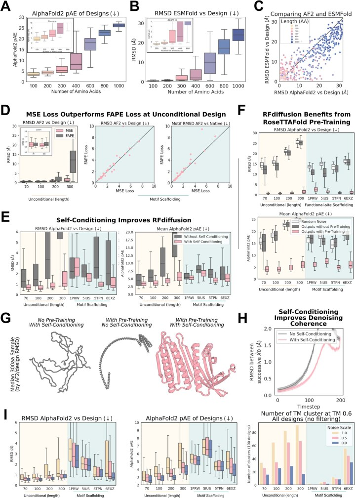
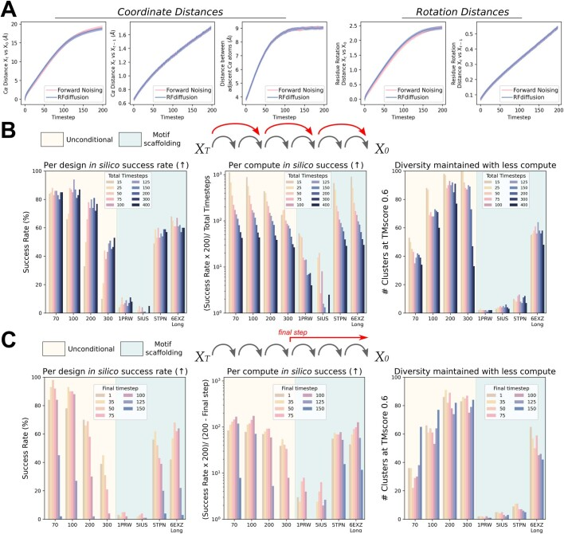
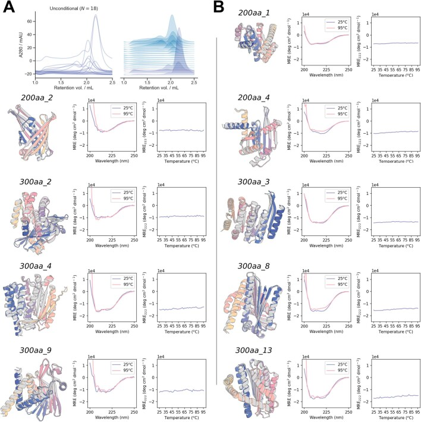
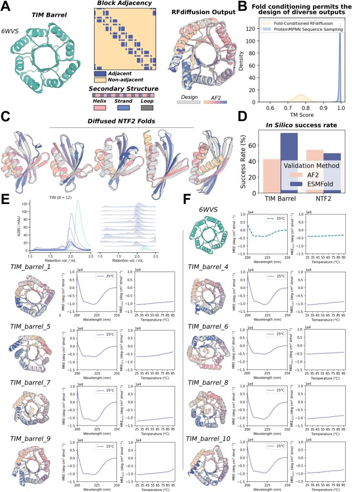
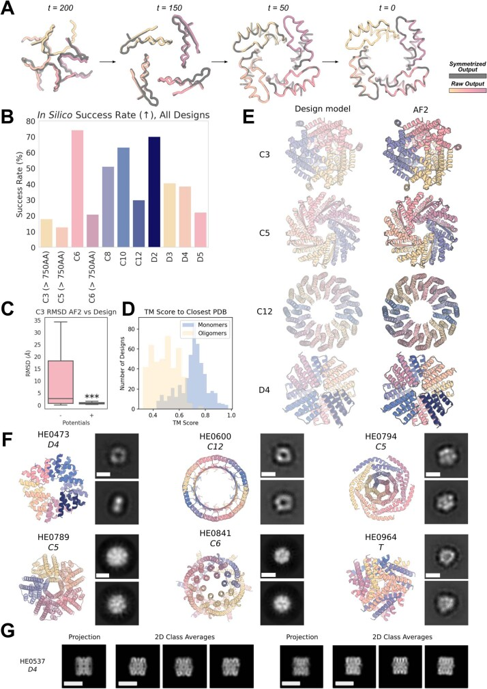
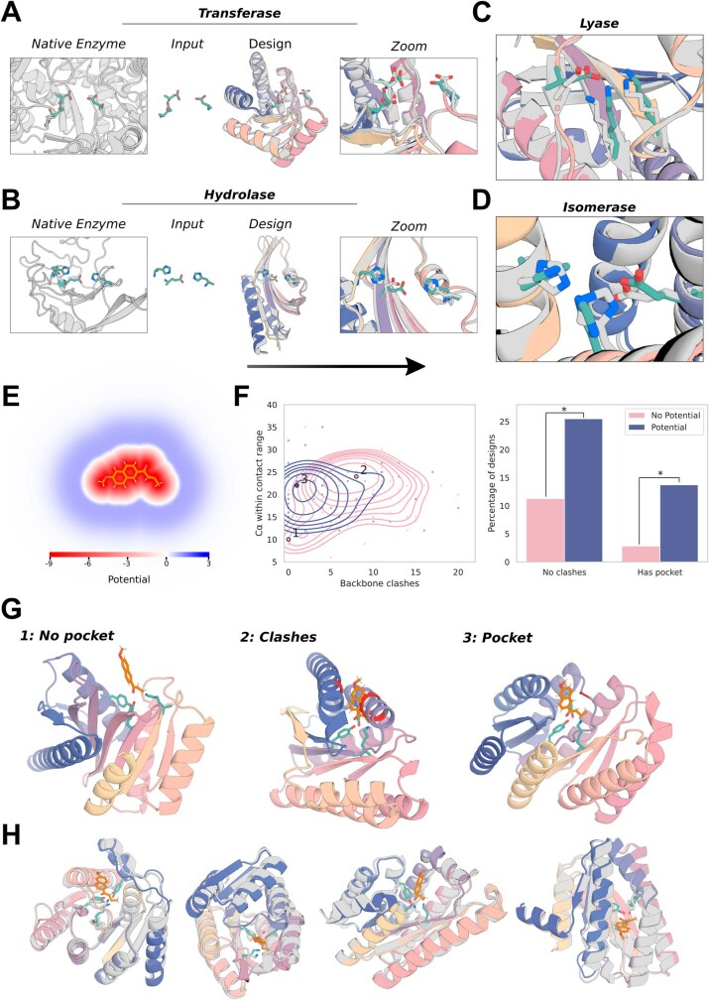
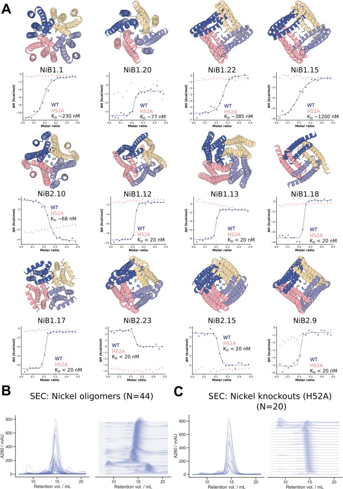
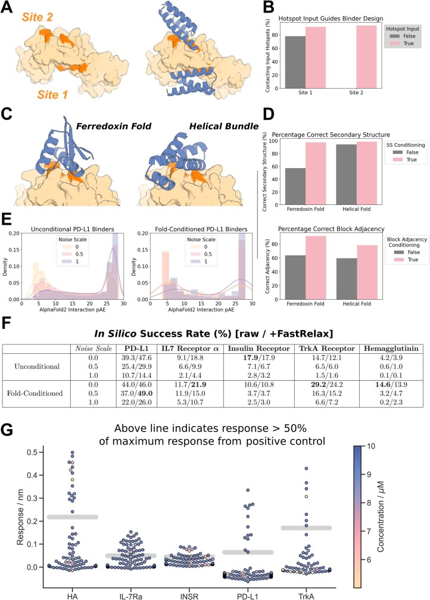
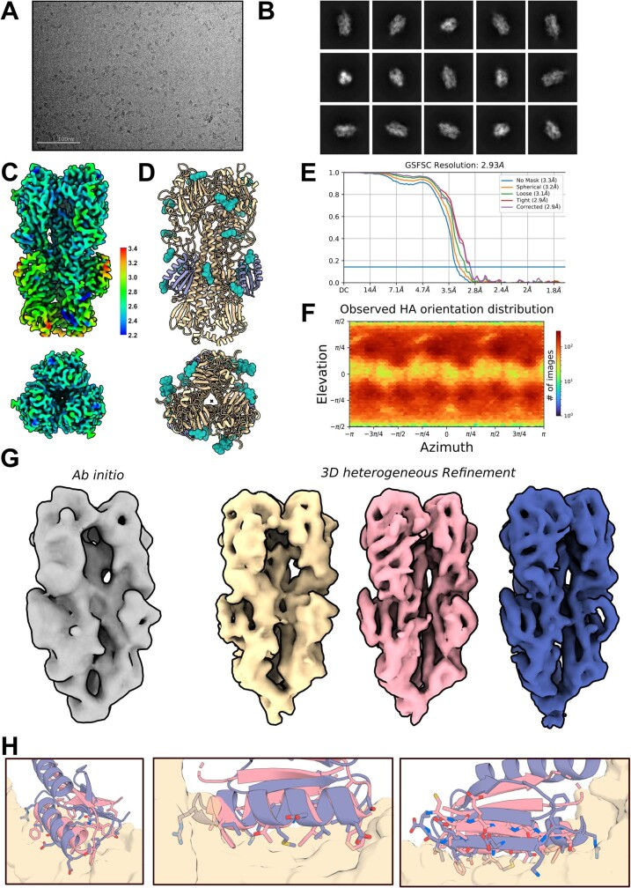
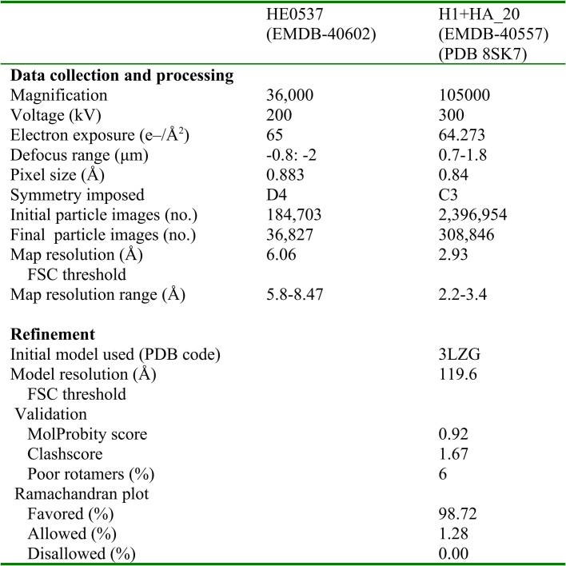
【译注】本文件为 RFdiffusion SI 方法部分片段翻译,覆盖小节 2.3–3.5。编号公式(4)–(13)、算法 1–5 及无编号展示公式均以占位行标注原文页码(依 “===== SI PAGE N =====” 标记),供组稿时回填英文原文;原文提取中的明显笔误(如 “relies of” 应为 “relies on”、公式(10)说明句中脱落的 “log”)已按正确形式译出;正文中引用主图与 Extended Data 图之处用 标记,Supplementary Table 的提及保持普通文字。
#### 2.3 残基旋转:前向与反向转移(Residue rotations, forward and reverse transitions)
对于旋转上的前向转移与反向转移,我们采用了 De Bortoli 等人 [23] 提出的把扩散模型推广到黎曼流形(Riemannian manifolds)上的框架。具体而言,3×3 旋转矩阵构成的空间(称为 3 维特殊正交群 SO(3))是一个紧致黎曼流形,Ho 等人 [11] 的技术无法直接套用。简言之,De Bortoli 等人 [23] 在 Song 等人 [65] 的连续时间基于分数的生成建模框架之上,把前向过程定义为流形上的朗之万动力学(Langevin dynamics)——当流形紧致时,该过程即为布朗运动。这一过程的时间反演则通过加噪数据分布在每个 t 处的 Stein 分数(Stein score)来刻画。本小节要用到 SO(3) 及其李代数(Lie algebra)的一些性质;相关背景请读者参阅 Sola 等人 [66]。
【译注】SO(3) 即全体 3×3 旋转矩阵在乘法下构成的群。“分数”指对数概率密度对变量的梯度 ∇log p,是基于分数的生成模型的核心对象。在流形上做扩散时,噪声须先注入切空间、再经指数映射回到流形,因此欧氏空间的高斯扩散公式不能直接使用。
由 SO(3) 上的布朗运动定义的前向过程:流形上布朗运动的具体形式,只有在为相应的切空间 T_r 选定内积之后才能良定义;我们选取 Frobenius 内积的一个缩放版本作为 SO(3) 各切空间上的内积,使得对任意 r∈SO(3) 及 T_r 中的 A、B,有 ⟨A,B⟩_SO(3) = Trace(A⊤B)/2。
【公式(4)保留英文原文,见 SI 第 49 页】
从初始旋转 r(0) 出发、按布朗运动演化时间 t 之后,旋转矩阵 r(t) 的边缘分布由 IGSO(3) 分布 [67, 24] 给出,我们将其记为 r(t)∼IGSO(3)(µ = r(0), σ² = t)。采用公式(4)的内积选择,IGSO(3) 分布相对于 SO(3) 上均匀分布的密度由下式给出:
【公式(5)保留英文原文,见 SI 第 50 页】
其中 µ 是 3×3 的均值旋转矩阵,ω(r) 表示与旋转 r 相对应的旋转角(以弧度计)。该角度可按 ω(r) = arccos[(trace(R) − 1)/2] 计算。公式(5)的验证请参阅 [64, Proposition 3.3]。我们以截断 2000 项来近似公式(5)中的幂级数。我们通过离散化布朗运动来构造离散时间的前向加噪,由此得到:q(r(t)|r(t−1)) = IGSO(3)(r(t); r(t−1), σ²_t − σ²_{t−1}),且边缘上有 q(r(t)|r(0)) = IGSO(3)(r(t); r(0), σ²_t),其中 σ²_1, σ²_2, …, σ²_T 构成一个方差调度(schedule)。我们对该调度的选取方式,使旋转被破坏的速率与平移上的前向过程相近(Supplementary Methods Table 6)。与平移随 t 增大收敛到高斯分布不同,旋转收敛到 SO(3) 上的均匀分布;这一均匀分布也称为 Haar 测度(Haar measure),对旋转保持不变。
反向转移核:为近似旋转的反向转移,我们受 De Bortoli 等人 [23, Theorem 1] 启发,用测地随机游走来近似离散化的反演过程。具体而言,旋转的反向步更新是这样计算的:在 SO(3) 的切空间中,沿加噪结构 x(t) 的对数密度关于每个旋转的梯度方向迈出带噪声的一步,再利用指数映射投影回 SO(3) 流形 [23, Algorithm 1]。步长及所加噪声的方差既依赖于 Song 等人 [65] 意义下的加噪调度,也依赖于切空间标准正交基的选取;在公式(4)的内积选择下,单位阵 I3 处的切空间 T_I3(即 SO(3) 的李代数)具有标准正交基向量 f1、f2、f3(公式(6)),而对其他每个 r∈SO(3),切空间 T_r 有标准正交基 {rf1, rf2, rf3}。测地随机游走的每一步按下式计算:
【公式(6)保留英文原文,见 SI 第 51 页】
【公式(7)保留英文原文,见 SI 第 51 页】
其中 T_{r(t)} 中的 ∇_{r(t)} log q(x(t)) 表示前向过程在时刻 t 的 Stein 分数,exp_{r(t)} 表示从 T_{r(t)} 到 SO(3) 的指数映射,且 ϵ1, ϵ2, ϵ3 iid∼N(0, 1)。指数映射 exp_{r(t)} 可按下式计算:exp_{r(t)}{v} = r(t) exp_I3{r(t)⊤v},其中 exp_I3{·} 是矩阵指数。旋转的方差调度通过设定 σ_t = σ_min + (t/T)β_min + ½(t/T)²(β^r_max − β^r_min) 来选取,其中 σ_min = 0.02,β^r_min = 1.06,β^r_max = 1.77。
【译注】IGSO(3)(isotropic Gaussian on SO(3))是 SO(3) 上以某旋转为中心、按测地距离各向同性散开的分布,作用相当于旋转空间中的“高斯噪声”;指数映射 exp 把切空间(一个 3 维向量空间)中的向量“卷”回流形上,得到一个旋转;测地线是流形上局部最短路径,测地随机游走即“每步沿测地线方向走一小段并加噪”。
用去噪预测近似分数:公式(7)描述了如何利用前向过程的分数从反向过程采样。原则上,可以通过分数匹配训练直接学习这一分数函数 [23]。然而,我们转而采用一个能够直接利用 RoseTTAFold(一经适当训练后)预测去噪结构之能力的近似。对给定的 t 和 r(t),我们可以写出:
【公式(8)保留英文原文,见 SI 第 52 页】
其中第一行称为去噪分数匹配恒等式(denoising score matching identity)[68];第二行由前向过程的条件独立性结构得到;第三行是一个近似,可以理解为把 q(r(0)|r(t)) 替换为集中在 RFdiffusion 预测的无噪旋转 r̂(0) 上的点质量;最后一行则把这个近似识别为可解析处理的 IGSO(3) 对数密度的梯度。在上述表达式中,我们用记号 E_q[g(x(0), x(t))|x(t)] = ∫g(x(0), x(t)) q(x(0)|x(t)) dx(0) 表示在给定 x(t) 时按 q 对 g(x(0), x(t)) 取的条件期望。我们对公式(8)最后一行的分数近似应用链式法则来计算:
【公式(9)保留英文原文,见 SI 第 52 页】
其中 log(r̂⊤r) 是矩阵对数,ω(r̂⊤r) 与 f 均如公式(5)所定义 [64, Proposition 3.4]。r log(r̂⊤r)/ω(r̂⊤r) 是沿 r log(r̂⊤r) 方向的单位长度扰动,而 d/dω log f(ω; σ²_t)|_{ω=ω(r̂⊤r)} 则是该方向上的一个缩放系数。
我们认为公式(8)中的近似应当相当准确,理由有二。首先,在采用高斯噪声的扩散概率模型中,如果把训练优化到收敛,就会有 ẑ(0)(x(t)) = E_q[z(0)|x(t)],此时该近似在下述意义上严格成立:对 ẑ = ẑ(0)(x(t)),有 E_q[∇_{z(t)} log q(z(t)|z(0))|x(t)] = ∇_{z(t)} log q(z(t)|z(0) = ẑ)(见下文命题 1)。
【算法伪代码 Algorithm 1(RFdiffusion rotation score approximation,RFdiffusion 旋转分数近似)保留英文原文,见 SI 第 53 页】
虽然在 IGSO(3) 情形下该等式并不严格成立,但由于 SO(3) 是黎曼流形、因而局部上近乎欧氏,当 t 较小时 IGSO(3) 与高斯分布非常接近。其次,同样当 t 较小时,x(t) 会接近一个合理的结构,而且只要模型训练得当,q(r(0)|x(t)) 就会集中在 r(0) 附近。尽管 t 较大时近似误差可能不可忽略,我们仍发现这一近似在经验上是行之有效的。我们在算法 1(Algorithm 1)中给出对该分数近似的计算。
综合而言,上述推导给出反向过程中旋转的更新方式:
【公式(10)保留英文原文,见 SI 第 53 页】
其中 ∇_{r(t)} log IGSO(3)(r(t); r̂(0), σ²_t) 按公式(9)计算。
命题 1(Proposition 1). 设 z(0), z(t) ∼ q(z(0), z(t)),且按 q 有 z(t)|z(0) ∼ N(z(t); αz(0), σ²),其中 α 与 σ² 为常数。若对每个 z(t) 都有 ẑ(0)(z(t)) = E_q[z(0)|z(t)],则对 ẑ = ẑ(0)(z(t)) 有:
【公式(11)保留英文原文,见 SI 第 53 页】
证明。为证该结论,我们把公式(11)的左端改写,依次得到:
【公式(12)保留英文原文,见 SI 第 54 页】
即为所证。
#### 2.4 反向过程采样中的自条件化(Self-conditioning in reverse process sampling)
自条件化由 Chen 等人 [25] 引入,他们证明该技术能显著改善扩散模型在图像生成与图像描述任务上的表现。我们以与 Chen 等人 [25] 的描述类似的方式实现自条件化。
在不含自条件化的扩散生成模型采样中,每个去噪步在采样得到 x(t) 之后,上一步对去噪数据的预测(x̂(0)_prev. = x̂(0)(x(t+1)))即被丢弃。然而,由于每一步去噪的幅度通常很小,先后两次的 x̂(0)(x(t)) 预测可能非常相似,于是大量去噪计算不得不重复进行。与之相对,采用自条件化时,每一步都保留去噪预测,并将其作为下一轮迭代中去噪模型的输入,转而把 x(0) 预测为 x̂(0)(x(t), x̂(0)_prev.)。这种把上一轮网络输出作为后续迭代输入的做法,令人联想到 AlphaFold [17] 以及我们更新版 RoseTTAFold(第 1.2 节)中的“回收”。
【译注】自条件化的直觉:去噪过程中的相邻两步面对的结构相差很小,把上一步的网络预测作为“提示”再次输入网络,可减少重复计算并让每步预测更接近最终答案,其思路与 AlphaFold 的结构模块多次回收自身输出一致。
训练时若采用自条件化,则在 50% 的样本上执行普通的一步去噪:令 x̂(0)_prev. = 0 并计算损失 L(x(0), x̂(0)_prev. = 0)。另外 50% 的时间,则 施一个额外的前向加噪步,得到 x(t+1) ∼ q(x(t+1)|x(t)); 计算 x̂(0)_prev. = x̂(0)(x(t+1), x̂(0)_prev. = 0); 计算损失 L(x(0), x̂(0)(x(t), x̂(0)_prev.)),并且只通过第二次去噪步反向传播梯度。
【算法伪代码 Algorithm 2(RFdiffusion generation,RFdiffusion 生成流程,含 SampleReference、ReverseStep 与 Sample 三个函数)保留英文原文,见 SI 第 55 页】
带自条件化的训练与采样过程在算法 2 与算法 3(Algorithms 2 and 3)中描述。在 RFdiffusion 中,我们把 x̂(0)_prev. 经由模板结构特征输入(xyz_t,见 Supplementary Methods Table 1),而把 x(t) 作为坐标输入到 RF 的 3D 轨道(xyz_prev,见 Supplementary Methods Table 1)。把 x(t) 以坐标(而非模板结构特征所用的 distogram 与 anglegram)形式输入,使网络能够在坐标空间中保持基序固定不动。
#### 2.5 残基坐标系上的均方误差损失(Mean squared error loss on residue frames)
训练 RFdiffusion 的首要目标是均方误差损失,并在训练样本、时间步与前向加噪过程上取平均:
【公式:MSE_Frame 定义(无编号)保留英文原文,见 SI 第 56 页】
其中
【公式:d_frame 度量定义(无编号)保留英文原文,见 SI 第 56 页】
是定义在预测残基坐标系集合上的一个度量,由 Cα 坐标上的欧氏距离(‖z(0) − ẑ(0)‖²)与旋转矩阵上的一个度量(‖I3 − r̂(0)⊤r(0)‖²_F,其中 ‖·‖_F 表示 Frobenius 范数 [69])构成。实践中,我们对 MSE_Frame 稍作修改以提高训练稳定性(细节见第 4.1 节)。
【译注】“残基坐标系”指每个残基由 Cα 平移坐标 z_l 与旋转 r_l 共同参数化的刚体参考系。d_frame 同时度量预测的平移误差与旋转误差,对二者等量齐观。
在每个训练步中,我们对这一目标做无偏蒙特卡洛估计:采样一个时间步 t ∼ U(1, …, T),从数据集中取出单个结构 x(0),模拟前向过程得到 x(t)|x(0) ∼ q(x(t)|x(0)),并在我们略微修改过的 MSE_Frame 上做一步梯度更新。算法 3 概括了训练流程。
【算法伪代码 Algorithm 3(RFdiffusion Training,RFdiffusion 训练,含 ForwardNoise 与 Train 两个函数)保留英文原文,见 SI 第 57 页】
我们对 MSE_Frame 的选择受 [11] 启发。特别地,Ho 等人 [11, 第 3.2 节] 指出,当前向过程为加高斯噪声时,最小化 q(z(t−1)|z(t)) 对 p(z(t−1)|z(t)) 的 Kullback-Leibler 散度这一训练目标,可以改写为“从带噪观测 z(t) 预测 z(0) 的期望平方误差”的一个重新缩放。特别地,若如第 2.2 节那样把反向转移的方差固定为 βt,则对每个 t 有:
【公式(13)保留英文原文,见 SI 第 58 页】
其中 c 是不依赖于 p 的常数(见 [70, Equation 99] 与 [11])。因此,当对每个 t 都最小化公式(13)右端时,我们就在最大化数据似然的一个加权变分下界。而且,只有当每个 p(z(t−1)|z(t)) 都与 q(z(t−1)|z(t)) 相匹配、从而 p(z(0)) 与数据分布相匹配时,该下界才取到全局最小 [11]。尽管 Ho 等人 [11] 发现在图像生成建模中,预测前向过程所加的噪声(而非 x(0))会带来更好的表现,我们认为通过预测 x(0),能够更好地利用为结构预测而预训练的 RoseTTAFold 的归纳偏置来产生逼真的结构。
然而,“按平均平方距离学习最优去噪”与“匹配反向过程”之间的等价性,仅在前向过程由高斯噪声构成时才已知成立,对旋转所用的 IGSO(3) 噪声很可能并不成立。不过,平方 Frobenius 范数度量看来仍是一个合理的选择,理由是: 在 t 接近 0 时,我们为旋转选择的前向加噪过程在 r(0) 处 SO(3) 切空间中近似为高斯; 当 r̂(0) 接近 r(0) 时,该度量近似等于 SO(3) 切空间中欧氏距离平方的一个缩放 [71]。
#### 2.6 几何不变性与 RFdiffusion(Geometric invariances and RFdiffusion)
RFdiffusion 利用 RoseTTAFold 的 SE(3) 等变性来参数化一个对旋转不变的蛋白质骨架分布。本小节说明这一不变性为何是值得追求的性质,以及它如何由 RoseTTAFold 的 SE(3) 等变性获得。
我们实现旋转不变性的目标建立在以往工作 [27, 5] 之上,其动机来自如下观察:蛋白质的生化性质由组成它的原子的相对几何赋予。然而,当我们把蛋白质骨架描述为一组由 Cα 坐标与逐残基 N−Cα−C 取向参数化的刚体时,这一描述不可避免地依赖于某个语义上任意的坐标系的选择。学习蛋白质骨架分布的朴素做法,可能会对同一结构在不同视角下赋予不同的概率。与之相反,我们希望模型把任何蛋白质结构在经历刚体旋转后视为同等可能。事实上,已有工作表明,在神经网络中施加几何不变性会带来能够改善泛化与训练效率的归纳偏置 [72]。
平移不变性在蛋白质生成建模中同样被考虑过。虽然处理平移不变性的一条途径是显式参数化一个 SE(3) 不变的测度,但这带来了与未归一化测度打交道的挑战,因为不存在对平移不变的归一化概率分布。实践中,我们通过把所有训练样本中心化到原点、从而消去平移所对应的自由度来绕开这一挑战,并只考虑对旋转的不变性;正如 Yim 等人 [64, proposition 3.5] 所证明的,这并不牺牲任何一般性,因为 SE(3)^L 上任何 SE(3) 不变的测度都可以表示为“质心置于原点的刚体”上的旋转不变概率测度。
【译注】不变性与等变性的区别:不变指输入变换后输出完全不变;等变指输出随输入做相应的协同变换(输入旋转,输出也随之旋转)。扩散模型需要的是:参考分布不变(保证起点各向同性),而去噪网络等变(保证每一步反向转移在旋转下协同),两者合起来才得到整体分布的旋转不变。
更形式化地说,我们的目标是确保对任意结构 x 与旋转 R,有 p(x) = p(R∗x),其中 p 表示由模型参数化的密度,而 R∗x = [R∗x1, …, R∗xL] = [(Rr1, Rz1), …, (RrN, RzL)] 表示把 x 绕原点旋转 R 后所得的结构。为了在我们的 DDPM 中强制 p 对旋转不变,我们沿用以往工作 [73, 5] 的做法: 使用旋转不变的参考分布(对每个 R∈SO(3) 满足 p(x(T)) = p(R∗x(T))); 约束反向转移为旋转等变,即满足 p(x(t−1)|x(t)) = p(R∗x(t−1)|R∗x(t))。判据 由如下选择直接满足:平移采用零均值、各向同性协方差的高斯参考分布,旋转采用 SO(3) 上的均匀分布。
上述判据 得以满足,得益于去噪网络从 RoseTTAFold 继承的 SE(3) 等变性。特别地,由于反向过程的构造方式,对任意 x(t−1)、x(t) 与 R 有:
【公式:反向转移的乘积分解(无编号)保留英文原文,见 SI 第 60 页】
由此可见,只需分别就平移与旋转独立证明反向过程中采样的分布是旋转等变的即可。对平移而言,由于 RoseTTAFold 的预测 ẑ(0) 相对于 x(t) 是旋转等变的,且公式(2)中的 μ̂(x(t)) 是 ẑ(0) 与 z(t) 的线性组合,因此 μ̂(x(t)) 以及 p(z(t−1)|x(t)) 也对 x(t) 等变。
对旋转而言,可以注意到公式(10)中对每个残基 l 的更新是以“一个旋转不变的量与 r(t)_l 相乘后取矩阵指数”的形式计算的,由此即可确认等变性。特别地,公式(10)中的漂移项可以改写为:
【公式:漂移项的旋转不变性(无编号)保留英文原文,见 SI 第 60 页】
其中 r̃ = r̂(0)⊤r(t);由于 r̂(0) 是旋转等变的,该量是旋转不变的。
#### 3 RFdiffusion:受控设计的方法学(RFdiffusion: methodology for controlled design)
接下来我们描述若干在 RFdiffusion 中控制骨架生成、以满足特定设计标准的技术。第 3.1 节描述对称寡聚体的生成。第 3.2 节描述我们通过条件训练来训练 RFdiffusion 进行生成的方法。第 3.3 节随后描述我们如何为靶向结合蛋白设计以及拓扑约束下的设计来修改 RFdiffusion 的架构并对其进行微调。最后,第 3.4 节描述我们如何用外部定义的“势”来引导生成。
#### 3.1 具有点群对称性的寡聚体生成(Generation of oligomers with point group symmetries)
如正文所讨论的,生成服从所需点群对称性约束的寡聚体组装体在若干设计场景中至关重要。点群对称性可以用一组有限的旋转矩阵表示,这些矩阵以矩阵乘法为群运算构成一个数学群 [36]。例如,K 阶循环对称群可由绕 z 轴按 (360/K)° 步进旋转的旋转矩阵集合表示:C_K = {R_z^(k/K)·360°}_{k=0}^{K−1}。所有其他点群(包括二面体群、八面体群、四面体群与二十面体群)都有类似的表示。不失一般性,我们把第一个旋转取为恒等旋转 R1 = I3。我们把由 K 个单体亚基、每个亚基 L 个残基构成的寡聚体表示为 X = [x1, …, xK],其中每个亚基 k 由平移与旋转构成:xk = ([z1^k, …, zL^k], [r1^k, …, rL^k])。若 X = [R1∗x1, …, RK∗x1],其中 R∗xk = ([R∗z1^k, …, R∗zL^k], [R∗r1^k, …, R∗rL^k]) 表示把一条单体骨架结构旋转 R,则称该寡聚体服从点群对称性 R = {R1, …, RK}。
【译注】点群对称性的直观图景:循环群 C_K 是 K 个亚基绕同一根轴排成一圈;二面体群 D_K 再加上绕垂直轴的 2 重旋转;四面体群(T)、八面体群(O)、二十面体群(I)则分别对应正四面体、正八面体、正二十面体的旋转对称群。R∗x 表示对刚体结构 x 施加旋转 R:平移部分被旋转,旋转部分与 R 复合。
以往工作已经证明,通过幻觉法并附加以“预测结构偏离目标对称性”为基础的惩罚项,可以在一定程度上生成带对称性的设计 [6, 7],但这类方法计算开销巨大(每个设计约需 1 个 GPU 日)且成功率低,推测原因在于无法精确控制目标对称性 [7]。我们推测,与之相比,RFdiffusion 通过在去噪预测中维持对称性,并允许我们在反向过程中施加硬性对称约束(算法 4),能够更好地控制设计中的对称性。
【算法伪代码 Algorithm 4(Generation of symmetric oligomers,对称寡聚体生成,函数 SampleSymmetric)保留英文原文,见 SI 第 62 页】
尽管我们确实通过在每个去噪步进行显式对称化来强制精确对称,但我们观察到,即便在最开始的几步去噪中,RFdiffusion 给出的去噪寡聚体结构预测就已几乎精确地保持目标对称性 (Extended Data Fig. 5A)。去噪预测的这一性质源自 RoseTTAFold 对全局旋转的精确等变性,以及对链的置换(即重新标注链的次序)的近似等变性。特别地,命题 2 保证:旋转等变与置换等变合起来,是神经网络的输出维持点群对称性的充分条件。在 RFdiffusion 中,精确的旋转等变性继承自 RoseTTAFold 结构模块所采用的 SE(3)-transformer 架构 [62]。而置换等变性则要求每个残基的中间表示与输出都不依赖于链的排列次序;这对 RFdiffusion 几乎成立,唯一的例外是 RoseTTAFold 的配对表示中包含每对残基之间的方向性序列距离特征输入(在相距 −32 到 32 个残基之间截断);由于向 RoseTTAFold 呈现寡聚体时会在每条链开头把序列位置编号递增,这些特征的符号便破坏了精确的置换等变性。然而,我们在经验上发现,RFdiffusion 预测偏离精确对称的程度极小 (Extended Data Fig. 5A)。
关于对称性保持的命题:接下来我们给出一个命题,更精确地阐明去噪结构预测在每一步维持目标对称性的机制。
命题 2(Proposition 2). 考虑任意函数 F: [x1, …, xK] → [y1, …, yK] 与点群对称性 R = {R1, …, RK}。若 F 同时满足: 旋转等变,即对每个旋转矩阵 R 都有 F([R∗x1, …, R∗xK]) = [R∗y1, …, R∗yK]; 置换等变,即对每个置换 σ 都有 F([xσ(1), …, xσ(K)]) = [yσ(1), …, yσ(K)]);则 F 保持对称性。特别地,对任意 x,存在某个 y,使得 F([R1∗x, …, RK∗x]) = [R1∗y, …, RK∗y]。
值得注意的是,命题 2 对满足上述关于 F 的假设的任何神经网络都成立。下面我们证明该命题。
证明。我们先建立关于点群置换的若干基本性质。首先注意,R 的每个成员 Rk ∈ R 都定义了 R 的一个置换,因为 {RkR1, RkR2, …, RkRK} = R。令 σk 表示与 R1Rk⊤ ∈ R 相关联的置换。特别地,σk 是满足“对每个 m 有 Rσk(m) = (R1Rk⊤)Rm”的置换。注意 σk(k) = 1,因为 Rσk(k) = (R1Rk⊤)Rk = R1。对任意置换 σ,我们用 σ̄ 表示其逆置换,即满足“对每个 k 有 σ̄(σ(k)) = k”的置换。最后注意有 Rσ̄k(m) = (RkR1⊤)Rm,因此 Rσ̄k(1) = (RkR1⊤)R1。
不失一般性,假设 F([R1∗x, …, RK∗x])1 = R1∗y。为证明该命题,只需证明对任意 k 有 F([R1∗x, …, RK∗x])k = Rk∗y。考虑上面定义的 σk。我们可以写出:
【公式:命题 2 证明中的链式等式(无编号)保留英文原文,见 SI 第 63 页】
其中第一个等号由 F 的置换等变性得出,第二个等号由 σk 与 σ̄k 的定义得出。最后,由 F 的旋转等变性,
【公式:命题 2 证明结尾的等式(无编号)保留英文原文,见 SI 第 64 页】
因此 F([R1∗x, …, RK∗x])k = Rk∗y,即为所证。
#### 3.2 面向功能基序支架化的条件训练(Conditional training for functional-motif scaffolding)
我们用 RFdiffusion 为功能基序搭建支架的方法遵循 Trippe 等人 [5],他们把基序支架化视为一个条件生成建模问题。我们把一个结构的残基划分为构成基序的残基与构成骨架其余部分的残基,后者称为支撑基序的支架。对含 L 个残基的结构,令 M 表示基序所对应的(可能不连续的)指标集合,S 为其余支架指标,使得 M 与 S 的并集为直到 L 的全部指标(即 M∪S = {1, …, L})。
我们记 xM 为基序残基的结构,xS 为支架残基的坐标系,从而整个(未加噪)蛋白质结构可写作 x(0) = [x(0)_M, x(0)_S]。我们的目标是从条件分布 q(x(0)_S|x(0)_M) 中采样支架骨架。为此,我们希望学习“只对支架残基施加、而将基序固定不动”的前向加噪过程的反演:p(x(t−1)_S|x(t)_S, x(0)_M) ≈ q(x(t−1)_S|x(t)_S, x(0)_M),其中 q(x(t−1)_S|x(t)_S, x(0)_M) 是第 2.2 与 2.3 节所述的条件前向加噪过程。
【译注】基序支架化是蛋白质设计中的经典问题:给定一小段执行功能(如结合位点、催化残基)的“基序”,要求设计出一段新“支架”主链,把基序以正确的几何构型呈现并支撑起来。扩散模型解这个问题的方式与图像修复类似——固定已知区域,只对未知区域去噪。
在早期工作中,Wang 等人 [4] 证明,RoseTTAFold 经重训练后可以遵守通过模板结构输入特征提供的基序约束。由于残基向基序与支架的划分因具体设计问题而异,我们希望训练 RFdiffusion,使其能用于基序位于序列中任意位置的情形。为此,我们采用了摊销训练(amortized training)的策略:对每个基序支架化训练样本, 从结构 x(0) 出发; 随机地划分出基序与支架 x(0) = [x(0)_M, x(0)_S](细节见第 4.1 节); 对支架加噪,得到 x(t)_S ∼ q(x(t)_S|x(0)_S); 在 RFdiffusion 对 x(0) = [x(0)_M, x(0)_S] 的预测 x̂(0)([x(0)_M, x(t)_S]) 上计算损失。为了促使 RFdiffusion 不移动基序,我们把基序残基的时间步输入设为 t = 0,并在计算预测损失时把基序残基与支架残基一并计入。我们把基序支架化训练样本的中心取在 x(0)_M 的质心上;如果改把样本中心取在整条链的质心,就会泄露关于 x(t)_S 的主体相对于 x(0)_M 位置的信息。
由于基序的侧链几何对多数基序支架化问题至关重要,我们还把基序残基的氨基酸序列与侧链二面角作为 RFdiffusion 的输入(经由 RoseTTAFold 的模板特征输入提供)。总体上,这一策略类似于 Saharia 等人 [74] 描述的扩散模型修复训练与生成,后者使用随机生成的图像掩码。
总之,用 RFdiffusion 进行以基序为条件的支架生成,与无条件生成的区别仅在于: 在模板输入中加入无噪的基序主链与侧链结构; 在每一步用无噪的基序坐标替换 x(t) 中的基序主链坐标; 把基序残基的时间步设为 0; 以 x(0)_M 而非 x(0) 为基准对样本做中心化。
#### 3.3 微调与架构修改(Fine-tuning and architecture modifications)
我们希望训练一个能以任意特征为条件的扩散模型;为此,必须向 RFdiffusion 输入超出 RoseTTAFold 原有特征之外的额外特征。鉴于从零开始训练的模型与从 RF 权重初始化的模型之间性能差异巨大 (Extended Data Fig. 1F),我们也希望继续从 RF 权重初始化训练。为了允许加入更多特征,我们选择扩展 RF 中现有特征的大小,并相应地扩展最初把这些特征嵌入模型的嵌入层权重的大小。我们把这些嵌入层中新增维度所对应的权重初始化为零。在这一初始化下,模型在初始权重下给出的输出与未经修改的 RF 完全相同。经过训练之后,模型便可以学会使用这些新扩展的特征。
在第 4.3 节中,我们将详细描述如何把这一做法用于结合蛋白设计:控制设计的二级结构邻接关系与折叠家族,并把生成的结合蛋白导向靶标上的热点残基。除架构修改之外,RFdiffusion 还可以在不同的条件任务上进一步微调;我们在第 4.2 节中描述了我们如何以此改进功能基序的支架化。
#### 3.4 用外部势函数引导 RFdiffusion 推断(Guiding RFdiffusion inference with external potentials)
除了网络以结构基序为条件的能力之外,推断过程还可以由外部势函数引导,以生成具备任意期望性质的蛋白质,例如与另一种蛋白质形成接触、或具有所需的表面凹陷。以往工作已经证明,只要给定一个能在带噪样本上运行的分类器 p(y|x(t)),扩散模型无需重训练即可从条件分布 p(x(0)|y) 中采样 [65, Appendix I]。特别地,p(y = 1|x(t)) 可以理解为:在只观测到带噪观测 x(t) 的条件下,样本 x(0) 具有目标性质(或属于给定“类别”)的预测概率。与非引导生成——沿 ∇_{x(t)} log p(x(t))(指向 x̂(0) 的方向)带噪地移动——不同,引导生成在反向步中改为沿 ∇_{x(t)} log p(x(t)) + ∇_{x(t)} log p(y = 1|x(t)) 前进 [65]。
【译注】这就是“分类器引导”思想的启发式版本:把“设计是否满足性质”的打分函数当作分类器,其在带噪结构上的梯度指出“往哪个方向去更满足性质”,把它叠加到扩散模型自身的分数上,即可在不重训练模型的前提下把生成导向目标性质。
在本工作中,我们为两个蛋白质条件生成目标构造了这些分类对数概率的启发式近似 P(x(t)) ≈ log p(y = 1|x(t)):对称寡聚体设计 (Fig. 3, Extended Data Fig. 5),以及带凹陷口袋的酶设计 (Extended Data Fig. 6E-H)。我们在算法 5 中展示如何把它们并入采样流程,并在第 4.4 节详述这些势函数的具体函数形式。本工作中所考虑的势只定义为 Cα 坐标的函数,因此(在每个单独的步骤中)这些势不影响残基取向。
【算法伪代码 Algorithm 5(Generation with guidance,带引导的生成,函数 SampleGuided)保留英文原文,见 SI 第 67 页】
#### 3.5 推断时通过缩放噪声调节多样性(Tuning diversity by scaling noise at inference)
对于正文中通篇报告的一些问题,我们通过在噪声方差上乘以一个因子来减小每一步加入的噪声。通常,这会提高设计质量,但代价是牺牲设计多样性。
【译注】本片段自检:覆盖小节 2.3、2.4、2.5、2.6、3(引言)、3.1、3.2、3.3、3.4、3.5,与源文(SI 第 49–67 页,字符区间约 82156–116660)逐段对应;编号公式(4)–(13)、算法 1–5 及 6 处无编号展示公式(2.5 节 MSE_Frame 与 d_frame、2.6 节乘积分解与漂移项、命题 2 证明两处)均以占位行标注页码;主图引用标记 共 5 处(Extended Data Fig. 5A×2、Extended Data Fig. 1F、Fig. 3 + Extended Data Fig. 5、Extended Data Fig. 6E-H);参考文献编号 [4]–[7]、[11]、[17]、[23]–[25]、[27]、[36]、[62]、[64]–[74] 按原文保留。
【本片段覆盖 SI 方法部分小节 4.1–5.9;Supplementary Methods 表格与主要公式按规范保留英文原文,并以"见 SI 第 XX 页"标注(页码为 PDF 页脚印刷页码)】
#### 4.1 RFdiffusion 基础模型(RFdiffusion base model)
RFdiffusion 在用于 RoseTTAFold 训练的 PDB 单体结构上进行训练。训练样本中,20% 为无条件(unconditional)任务,80% 为基序条件(motif-conditional)任务。对于基序条件任务,选取一段连续残基作为基序,并将其真实序列与结构提供给模型。RFdiffusion 从 RF 的最终权重出发开始训练。RFdiffusion 不使用循环回收。
损失函数:RFdiffusion 使用由两项组成的损失进行训练,
LDiffusion = LFrame + w2D·L2D
【公式保留英文原文,见 SI 第 67 页】
【表格保留英文原文,见 SI 第 68 页】Supplementary Methods Table 4(RFdiffusion 输入特征的描述)
【表格保留英文原文,见 SI 第 69 页】Supplementary Methods Table 5(RFdiffusion 的输出)
其中 LFrame 是第 2.5 节 MSEFrame 中平方距离损失的一个修改变体,L2D 是距离图与角度图(distogram and anglegram)损失,w2D 是权重因子。下面逐一描述各项损失。
LFrame 相对 MSEFrame 做了两处旨在提高优化稳定性的修改。第一,MSEFrame 的距离只是对残基坐标系(residue frame)平移与旋转分量上定义的平方距离简单求和,而 LFrame 改用这些分量的加权和,并对平移距离加入截断(clamping),
dFrame(x(0), x̂(0)) = √( (1/L)·Σ_{l=1..L} [ wtrans·min(‖z_l^(0) − ẑ_l^(0)‖², dclamp)² + wrot·‖I3 − r̂_l^(0)⊤·r_l^(0)‖_F² ] )
【公式保留英文原文,见 SI 第 69 页】
其中 wtrans 与 wrot 分别是平移与旋转距离上的权重,dclamp 是平移距离被截断的最大距离上限。注意,平移距离仅在 90% 的情况下被截断。第二,LFrame 还纳入在结构模块每个中间迭代处计算的 dFrame(x(0), x̂(0)) 贡献,并以指数权重 γ 加权,使较后的输出得到更多重视。具体地,
LFrame = (1 / Σ_{i=0..I−1} γ^i)·Σ_{i=1..I} γ^(I−i)·dFrame(x(0), x̂(0),i)²
【公式保留英文原文,见 SI 第 69 页】
其中 x̂(0),i 是第 i 个结构模块(structure block)的输出。
损失的第二项 L2D 的设计灵感来自 trRosetta [63]。与在定义上为单峰的结构轨道输出不同,模型对全部相互接触的残基对输出期望距离、二面角与平面角的多峰分布。D_:,l,l′、Ω_:,l,l′、Φ_:,l,l′、Θ_:,l,l′ 共同描述残基 l 相对残基 l′ 的取向。下面的损失由已知残基间距离与取向的独热(one-hot)直方图同模型预测的相应分布之间的交叉熵构成:
L2D(logits_d, logits_ω, logits_θ, logits_ϕ, z^0) = CrossEntropy(logits_dist, D) + CrossEntropy(logits_ω, Ω) + CrossEntropy(logits_θ, Θ) + CrossEntropy(logits_ϕ, Φ)
其中:
D ∈ R^(C_dist×L×L);D_b,l,l′ = 1[bin_low_D,b ≤ max(‖Cβ,l − Cβ,l′‖², 18.5) < bin_high_D,b]
Ω ∈ R^(C_dist×L×L);Ω_b,l,l′ = 1[bin_low_Ω,b ≤ Dihedral(Cα,l, Cβ,l, Cα,l′, Cβ,l′) < bin_high_Ω,b]
Θ ∈ R^(C_dist×L×L);Θ_b,l,l′ = 1[bin_low_Θ,b ≤ Dihedral(Nα,l, Cα,l, Cβ,l, Cβ,l′) < bin_high_Θ,b]
Φ ∈ R^(C_phi×L×L);Φ_b,l,l′ = 1[bin_low_Φ,b ≤ Planar(Cα,l, Cβ,l, Cβ,l′) < bin_high_Φ,b]
把这些角度与距离转换成独热分布的 bin 边界为:
bin_D,i = [i/2, (i+1)/2]
bin_Ω,i = bin_Θ,i = [−π + 2πi/37, −π + 2π(i+1)/37]
bin_ϕ,i = [πi/19, π(i+1)/19]
【公式保留英文原文,见 SI 第 70 页】
【译注】按规范复原了 PDF 提取中丢失的上下标与符号。原文排印错误已按上下文改正:Θ、Φ 两行的左侧原文均误作 "Ωb,l,l′";D 一行原文写作 ‖Cβ,l′ − Cβ,l′‖,应为 ‖Cβ,l − Cβ,l′‖。
【表格保留英文原文,见 SI 第 71 页】Supplementary Information Table 2(四个残基间距离与二面角自由度的计算示意图)
计算二面角与平面角的公式为:
Dihedral(a, b, c, d) = atan2( [c−b]·(([b−a]×[c−b])×([c−b]×[d−c])) / (‖c−b‖·([b−a]×[c−b])·([c−b]×[d−c])) )
Planar(a, b, c) = arccos( (a−b)·(c−b) / (‖a−b‖·‖c−b‖) )
【公式保留英文原文,见 SI 第 71 页】
训练中的基序居中:无论训练还是骨架生成,我们都把基序置于原点。在初步计算实验中,我们发现,若训练所用基序取自全局居中的结构、而基序自身不居中,则模型会出现基序摆放偏差。具体而言,对于未放在原点的基序,从该模型采样的骨架通常把大多数残基放在基序朝向原点的一侧。我们把这一现象理解为一种微妙而不希望发生的标签泄漏(label leakage),因此改为以置于原点的基序训练 RFdiffusion 以纠正之。
一旦在基序上算出距离损失,就把基序坐标从计算图(computation graph)中分离。如此一来,预测的基序坐标在其他所有损失的计算中都被当作常数。虽然这不会影响任何损失的取值,但该选择确保:凡是相对于预测基序坐标计算梯度的那些损失分量,都会被"不偏离初始坐标的预测"最小化。我们做此选择是为了防止其他损失把基序推离其(期望的)初始化位置,但尚未对这一选择做过系统的实证探索。
超参数与坐标缩放:我们使用 Supplementary Methods Table 6 中的超参数训练 RFdiffusion。尽管 RoseTTAFold 的坐标输入与输出以埃(Å)为单位,我们把扩散过程定义在一个缩小尺度的空间中:在执行每一步扩散之前,把 x(t) 与 x(0) 的全部坐标值除以因子 4(经验选取,即缩放系数 0.25),之后再放大回埃。
训练耗时:从 RF 权重初始化的 RFdiffusion 在 5 个 epoch 内训练至收敛,在 8 块 NVIDIA A100 GPU 上耗时 3 天。
【表格保留英文原文,见 SI 第 73 页】Supplementary Methods Table 6(RFdiffusion 训练超参数;该表在原文中插排于第 73 页、4.2 节首段之间)
#### 4.2 通过在最小基序上微调实现酶活性位点骨架搭建(Enzyme active site scaffolding by fine-tuning on minimal motifs)
用于酶活性位点骨架搭建的 RFdiffusion 版本,是在基础版 RFdiffusion 之上继续训练得到的。微调时,30% 的任务来自基础模型任务集(Supplementary Methods Table 6),另外 70% 是"三重接触"(triple-contact)任务:随机选取 3 个残基,它们在序列空间上两两相距均超过 10 个残基,但两两 Cβ–Cβ 距离小于 6 Å,以此构成一个模型意义上的"活性位点"。这 3 个残基被纳入基序,且每个残基各有 50% 的概率再纳入一个侧翼残基。若在该单体中找不到这样的三残基组(约 23% 的训练 PDB 属于这种情况),该任务即回退为基础模型训练任务。我们注意到,基础版 RFdiffusion 有时无法在输出结构中保持极小的输入基序固定不动。因此,在这个酶活性位点模型中,基序特异的位移损失被上调 10 倍,以促使网络保持基序固定,从而补偿如下事实:该任务中基序长度短得多,若不如此,基序复现在总损失中的占比会显著偏低。网络以这种方式微调了 5 个 epoch。
#### 4.3 面向蛋白质-蛋白质相互作用设计的架构修改(Architectural modifications for protein-protein interaction design)
本小节描述 RFdiffusion 为纳入靶标"热点"(第 4.3.1 节)与期望的结合蛋白拓扑(第 4.3.2 节)所做的架构修改,并详述面向蛋白质-蛋白质相互作用(PPI)设计的微调训练(第 4.3.3 节)。
#### 4.3.1 蛋白质-蛋白质界面热点(Protein–protein interface hotspots)
在设计蛋白质-蛋白质界面时,能否控制设计的结合蛋白(被扩散生成的一方)应当结合到靶标(固定)蛋白的哪个区域至关重要。为实现这种控制,我们训练模型在"界面热点"残基的条件下进行复合物设计。我们把界面热点残基定义为:示例中靶标(固定)链上与结合蛋白(扩散)链 Cβ–Cβ 距离在 10 Å 以内的任意残基。
界面热点残基的一维独热张量被拼接到 RF 的一维模板特征上(t1d,Supplementary Methods Table 1)。我们训练了两个用于复合物设计的模型:一个仅含热点信息,另一个同时含折叠条件信息与热点信息。两个模型更新后的特征形状及各维度条目的定义分别见 Supplementary Methods Table 7。
【表格保留英文原文,见 SI 第 75 页】Supplementary Methods Table 7(面向复合物微调而修改的 RFdiffusion 输入特征)
【表格保留英文原文,见 SI 第 75 页】Supplementary Methods Table 8(复合物微调与折叠条件化中使用的修改特征)
【译注】原文称两个模型的特征定义"分别见 Supplementary Methods Table 7";实际上仅热点模型的特征在 Table 7 中描述,热点+折叠条件模型的特征在 Table 8 中描述,此处按原文直译。
#### 4.3.2 二级结构与块邻接(Secondary structure and block adjacency)
使用二级结构与块邻接(block adjacency)信息的想法最初由 Anand 与 Achim 提出 [8]。我们在此回顾这一想法,讨论其背后的动机,并深入描述我们的实现。
蛋白质设计者常常希望得到具有特定折叠的蛋白(例如:由 β 桶构成的跨膜孔,或由三螺旋束构成的蛋白结合物)。蛋白质折叠由两点定义:(1)它包含的二级结构块(连续的 α 螺旋、β 折叠股或 loop 区段);(2)这些块彼此之间的精确取向(平移与旋转)。设计者往往还希望在同一折叠类型之内产生多样性。在这种情况下,关键在于允许对精确折叠的欠规范(under-specification),以便在生成结构中保留多样性;我们把这类同一类型折叠的宽泛集合称为"折叠家族"(fold family)。
我们希望训练一个可以以折叠家族为条件的模型。为允许折叠的欠规范,我们选择向模型提供"哪些二级结构块彼此处于距离阈值之内"的粗粒度信息。具体而言,向模型提供以下特征:(1)一个 [L,4] 独热张量,每个位置被指派一种二级结构类型 {helix, sheet, loop, mask};(2)一个 [L,L,3] 独热张量(称为块邻接矩阵,block adjacency matrix),其条目指示所属块是否彼此处于距离阈值之内 {non-adjacent, adjacent, mask}(如 Extended Data Fig. 4A 所示)。
训练集中每个残基的二级结构注释用 DSSP [75] 计算。DSSP 是一种基于结构的算法,为每个残基指派二级结构类型分类。训练集中每个结构的块邻接矩阵由 DSSP 返回的二级结构字符串计算得到。当满足以下两个条件时,两个块在块邻接矩阵中被标记为"相邻":(1)两个块都不是 loop 类型;(2)跨块任意残基对的 Cα–Cα 最小距离在 8 Å 以内。
一维二级结构张量被拼接到 RF 的一维模板特征上(t1d,见 Supplementary Methods Table 1);二维块邻接矩阵被拼接到 RF 的二维模板特征上(t2d,见 Supplementary Methods Table 1)。更新后的特征形状及各维度条目的定义见 Supplementary Methods Tables 7 与 8。
#### 4.3.3 面向蛋白质-蛋白质相互作用设计的微调(Fine-tuning for protein–protein interaction design)
在蛋白质复合物上微调的 RFdiffusion 版本,从训练了 5 个 epoch 的基础版 RFdiffusion 出发训练。训练任务由单体样本(50%)与复合物样本(50%)组成。当模型看到复合物样本时,只对复合物的一侧加噪,另一侧保持固定(这与既有的 PPI 设计方法一致 [26],其中靶标蛋白保持固定)。当展示复合物样本时,模型还会获得固定链一侧界面中 0–20% 残基("热点残基")的残基索引(界面定义为与另一条链 Cβ–Cβ 距离在 10 Å 以内的全部残基),以便在推断时对设计的结合物进行定向。在另一个同样在蛋白质复合物上训练的模型中,无论复合物训练还是单体训练,都有 50% 的概率向模型提供加噪区域的二级结构信息,并(相互独立地)有 50% 的概率提供块邻接信息。训练期间,二级结构块之间的连接区及其在块邻接矩阵中的对应条目会被掩码,如此在推断时便无需给出逐残基的精确二级结构与块邻接矩阵。具体而言,0–75% 的二级结构(以及提供时的相应邻接信息)被掩码,掩码发生在二级结构的连接区处(掩码长度 1–8 个残基)。总体而言,这一训练方案允许在推断时只提供部分的二级结构和/或邻接信息。
#### 4.4 势函数在对称寡聚体与口袋设计中的使用(Use of potentials for symmetric oligomers and pocket design)
第 3.4 节描述了我们用势函数引导逆扩散过程的思路。这里我们描述在对称寡聚体设计与带凹口袋酶设计中 P(x(t)) 具体选取的细节。设计对称寡聚体时,我们采用链间与链内接触势来促进亚基间接触的形成。令 Z = [z1, …, zK] 表示由 K 个亚基、每个亚基 L 个残基组成的寡聚体中的 Cα 坐标(即对每个 k,zk = [zk,1, …, zk,L],每个 zk,l ∈ R³),我们设
Psym(Z) = Σ_{1≤k,k′≤K} Σ_{1≤l,l′≤L} (1[k≠k′]·winter + 1[k=k′]·wintra)·Switch(‖zk,l − zk′,l′‖₂²)
【公式保留英文原文,见 SI 第 77 页】
【译注】原式外层求和的界在原文中误排为 "1≤k,k′,≤L",按上下文应为 1≤k,k′≤K,此处已改正。
其中 winter 与 wintra 分别是链间与链内势的权重。我们设 winter = 2、wintra = 0.2,以优先促进亚基间接触的形成,同时鼓励各亚基自身堆积良好。
Switch(r) = (1 − ((r−d0)/rc)^n) / (1 − ((r−d0)/rc)^m)
是一个开关函数:两原子处于接触范围内时取 1,超出范围时取 0,其间平滑过渡。我们把控制其对距离依赖关系的超参数设为 n = 6、m = 12、d0 = 8、rc = 4,以反映相互作用侧链之间预期的接触距离。只需主要偏置早期采样步(t ≈ T)即可促进高阶结构中接触的形成,而在设计轨迹临近结束时继续偏置并无必要——彼时四级结构已足够确定。因此,我们用"引导尺度"(guide-scale)g(t) 对势做缩放:
Psym′(Z, t) = g(t)·Psym(Z),其中 g(t) = (t/T)²
【公式保留英文原文,见 SI 第 78 页】
设计酶时,除复现活性位点的侧链几何外,还必须形成与底物形状互补的口袋。这一条件可以用一个简单的吸引-排斥势有效刻画,该势以酶 Cα 碳原子与底物原子之间的最小距离为参数。记由 K 个原子组成的底物坐标为 s = {sk}_{k=1..K},Cα 坐标为 z = [z1, …, zL],我们设:Penzyme(z, s) = wattr·[Σ_{1≤l≤L} Switch(min_{1≤k≤K}‖zl − sk‖₂²)] − wrep·[Σ_{1≤l≤L} Rep(min_{1≤k≤K}‖zl − sk‖₂²)],其中 Rep(r) = I{r < r0}·|r0 − r|^p / (p·(p−1)·r0^(p−1)),并设 wattr = 1、wrep = 4、r0 = 2、p = 1.5。
【公式保留英文原文,见 SI 第 78 页】
Rep(r) 的梯度从 r = 0 处的 −1 平滑衰减至 r = r0 处的 0,用以惩罚蛋白主链与底物之间的空间冲突。对 Penzyme 我们不使用引导尺度,因为该势关乎结构的细粒度细节,而这些细节直到逆扩散过程后期才完全确定。经验上,我们发现模型对按物理直觉选取超参数的定制势函数具有足够的感受性与稳健性。我们发现,无需穷举式的超参数调优,即可在对称寡聚体设计中达成生成界面的目标,并在酶设计中达成底物的隐式建模。
#### 5 计算机模拟实验方法(In silico experimental methods)
#### 5.1 以 AlphaFold2 作为计算机模拟评估指标的合理性论证(Justification for using AlphaFold2 as an in silico metric)
在本工作中,我们通常依赖 AF2 对设计进行计算机模拟(in silico)验证。使用 AF2 这样的结构预测网络来验证 RFdiffusion(由 RF 结构预测网络微调而来)的准确性,一个潜在的顾虑是:鉴于 AF2 与 RF 在架构与训练上的相似性,存在对抗样本(adversarial example)的风险。这一问题此前已被讨论过 [4],我们在本节重新审视这一顾虑。
AF2 与 RF 在架构上具有显著的相似性,而且 RF 也在一个由 AF2 预测结构组成的蒸馏集上训练过。ESMFold [21] 同样存在这类相似性(它也在 AF2 预测的结构上训练)。因此,当用这些结构预测网络之一(或其微调变体)来做蛋白质设计时,这些网络只能算是部分正交的验证设计序列的手段。幸运的是,虽然用同一个结构预测网络既做设计又做验证已被证明行不通 [7, 76],但如今已有大量文献表明:在用例如 ProteinMPNN [1] 重新设计序列之后,再使用另一个不同的结构预测网络进行验证,其正交性足以使预测结果能够指示实验成功 [4, 7, 77, 56, 78, 79, 80, 54]。
#### 5.2 ProteinMPNN 与 AlphaFold2 的设置(ProteinMPNN and AlphaFold2 settings)
论文中不同基准测试与设计任务所使用的 ProteinMPNN 与 AF2 具体设置略有差异,这些设置均源自此前已确立的工作。这里对这些设置做完整描述。
ProteinMPNN:在蛋白结合物设计中(Fig. 6),ProteinMPNN 使用非默认的极低采样温度 0.0001。我们还额外测试了使用 ProteinMPNN、Rosetta FastRelax [58] 再加第二轮 ProteinMPNN 的流程。这些设置遵循当前的最佳实践 [26]。在所有其他情形中,ProteinMPNN 均使用默认参数(采样温度 = 0.1)。序列设计时通常省略半胱氨酸,以利于表达与溶解。
AlphaFold2:正文中 AF2 均以单序列模式使用(不提供多序列比对)。
对于无条件设计、折叠条件设计与功能基序骨架搭建,我们使用不带模板的 AF2 model 4 ptm(沿用此前工作 [4])。
对于对称寡聚体(循环对称与二面对称;即我们报告其计算机模拟成功率的那些对称类型,Extended Data Fig. 5B)的验证,我们用 AF2 model 4 ptm 预测整个复合物(n 条链,各链之间以 200 个氨基酸残基的索引偏移分隔)。AF2 的坐标初始化在设计结构处(即所谓的 "initial guess" 方法),沿用此前设计对称寡聚体的工作 [7]。对于二十面体与八面体设计,流程相同,只是出于计算可行性仅验证其 C3 对称单元。对于四面体设计,我们只在单体上验证。
对于结合镍的寡聚体的验证,除使用 AF2 model 5 ptm 外,其余与其他对称寡聚体验证相同。
对于蛋白结合物的验证,我们:1)将(有时经过裁剪的)靶蛋白作为模板并提供给 AF2 model 1 ptm;2)使用 "initial guess" 方法。这些设置与当前最佳实践完全一致,在那里它们已被证明可以预测实验成功 [26]。
ESMFold:对于正文中的无条件与折叠条件单体设计,我们进一步用 ESMFold [21] 验证设计。ESMFold 以默认参数运行。
#### 5.3 计算机模拟成功率(In silico success rate)
对于所有单体设计任务,我们将计算机模拟成功定义为主链 RMSD(AF2 对 RFdiffusion)< 2 Å、基序主链(若存在)RMSD(AF2 对天然结构)< 1 Å、AF2 pAE < 5;这些标准与此前工作大体一致。之所以如此选取,是因为它们已被证明是指示实验成功的严格过滤器(Wang et al., 2022 [4])。相对 Wang et al., 2022 的唯一变化,是用 pAE < 5 取代 plDDT > 80 作为 AF2 置信度指标。pAE 更为严格,选取它是为了防止 plDDT 偏高但不太可能作为真实蛋白良好工作的边缘情况(例如单条长螺旋)。对于其他任务,还有额外的成功度量。它们都建立在理论和/或先前工作的数据之上:
结合物设计:依照当前最佳实践 [26],我们额外按链间 AF2 pAE < 10 过滤。我们还要求结合物与设计结构的偏差在 1 Å 以内,并依照 [26] 使用 plDDT 作为置信度指标。
酶活性位点骨架搭建:我们额外按 AF2 预测与设计模型之间的侧链 RMSD < 1.5 Å 过滤。这是因为侧链摆置对酶活性至关重要。
折叠条件设计:我们额外按设计与目标折叠之间的 TM 分数(TM score)> 0.5 过滤。TM 分数 > 0.5 被用来定义"相似"折叠 [81],以此确保设计确实属于该特定折叠。
对称寡聚体设计:对于对称寡聚体设计,我们沿用此前工作 [7],以 plDDT > 80 作为指示计算机模拟成功的 AF2 置信度指标。对于结合镍的寡聚体,组氨酸咪唑基团的摆置对镍结合很重要,我们额外按侧链 RMSD < 1.5 Å 过滤,与酶活性位点骨架搭建的度量一致。
#### 5.4 无条件生成基准测试(Unconditional benchmarking)
为测试 RFdiffusion 无条件生成单体的能力(Fig. 2B-E),我们对长度 100、200、300、400、600、800 与 1000 个氨基酸各生成 100 个设计。对每个骨架,我们用 ProteinMPNN 生成 8 条序列,随后用 AF2(或 ESMFold——Extended Data Fig. 1B、Extended Data Fig. 4D、Supplementary Information Fig. 2B)预测其结构。每个骨架取最佳序列(以预测结构与设计模型的比对结果为准)。我们以最近发表的 RoseTTAFold Hallucination [6] 作为对照基准。由于以 RoseTTAFold 做 Hallucination 需要一些使用技巧,这些样本由相应专家生成。所有基准测试设计的序列均由 ProteinMPNN 设计,采样温度取 0.1,并从设计中省略半胱氨酸(因为半胱氨酸常给蛋白纯化带来麻烦)。用 RFdiffusion 生成的 14 条 300 氨基酸蛋白与 4 条 200 氨基酸蛋白被订购合成,并实验检测了表达与圆二色谱(CD)谱。
#### 5.5 条件生成基准测试(Conditional benchmarking)
完整的条件基准测试见 Supplementary Methods Table 9,涵盖来自六篇近期出版物的 25 项设计挑战 [4, 5, 29, 38, 39, 40]。我们将 RFdiffusion 与 RoseTTAFold Hallucination 及 RF joint Inpainting 进行了比较。虽然 Hallucination 与 Inpainting 都能直接生成序列,但为了最公平的比较,我们也用 ProteinMPNN 重新设计了序列,并且每个骨架取 8 条序列中最好的一条。RF joint Inpainting 与 RF Hallucination 都能在不给序列的情况下为结构搭建骨架,因此在功能位点残基并非功能所必需的情形下,允许这两种方法重新设计非功能残基的序列,这通常对设计有利。最后,由于 Hallucination 需要一定的专家知识与经验性超参数调节,我们允许对基准集进行一些探索,这些设计由相应专家生成。
对于论文中的若干比较(Extended Data Fig. 1、Extended Data Fig. 2B-C、Supplementary Information Fig. 1、Supplementary Information Fig. 2D),使用了一个较小的基准,其涵盖上述无条件与条件基准问题的一个子集。
【表格保留英文原文,见 SI 第 84–85 页】Supplementary Methods Table 9(近期发表的功能基序骨架搭建问题基准集;表注说明各问题的输入与设置,完整结果见 Fig. 4A)
【表格保留英文原文,见 SI 第 86–87 页】Supplementary Methods Table 10(功能基序骨架搭建基准测试结果,列出各方法在每个问题上的成功率)
此外,为检验 RFdiffusion 搭建功能位点的能力是否与这些位点出现在 RF 或 RFdiffusion 训练集中有关(Supplementary Information Fig. 7),我们编制了一个基准蛋白集:1)一部分蛋白来自 RF 与 RFdiffusion 的训练集;2)另一部分来自孤儿蛋白(orphan protein),它们不在 RF、AF2 或 RFdiffusion 的训练集中,在自然界也没有已知同源物。15 个孤儿蛋白为文献 [20] Fig. 2 中所列者。来自训练集的 15 个蛋白为随机抽样。为构建基准集,我们从这 30 个结构中随机抽取"基序",包括"单基序"与"双基序"。对于"单基序",从结构中随机抽取一段连续的 15 个氨基酸;对于"双基序",抽取两个内部各自连续的基序,它们在一级序列上相距至少 20 个氨基酸,但在欧几里得空间中相互靠近。随后以一致的残基数目运行基序骨架搭建,该残基数的选择未事先查看基序结构。相关细节连同成功率见 Supplementary Methods Table 11。
【表格保留英文原文,见 SI 第 87 页】Supplementary Methods Table 11(来自孤儿蛋白与训练集蛋白的骨架搭建位点及成功率)
#### 5.6 评估设计的多样性(Assessing diversity of designs)
使用 TM 分数 [82] 评估设计彼此之间以及与 PDB(PDB100,2022 年 4 月 19 日版)的结构多样性。论文中全部设计任务的完整结果(涵盖第 5、25、50、75 与 95 百分位数)详见 Extended Data Fig. 1。在基序骨架搭建情形中,进行 TM 比对前会把基序区域从待比对结构中剔除,以避免设计结构中(天然)基序带来的不当偏倚。在 Extended Data Fig. 1I 与 Extended Data Fig. 1B-C 中,设计以成对 TM 分数 0.6 的阈值聚类。
【译注】本节与 5.7 节原文中把 Extended Data Fig. 1 写作 "Extended Data 1",且 "Extended Data Fig. B-C" 漏写了图号,均按上下文补全为 Extended Data Fig. 1。
#### 5.7 使用蛋白质 BLAST 检查 UniRef90 中的相似序列(Using protein BLAST to check for similar sequences in UniRef90)
我们在 Extended Data Fig. 1 中,针对论文尝试的每个问题的设计序列,提供了它们在 2022-04-25 版 UniRef90 中蛋白质 BLAST 命中的统计。这里概述获取这些结果所用的方法。
对每个问题,建立一个 fasta 格式文件,其中包含为 RFdiffusion 骨架用 ProteinMPNN 设计的序列。fasta 文件被拆分后,生成针对 UniRef90 数据库运行 Protein-Protein BLAST 2.11.0+ 版的命令,示例如下(注意反斜杠表示 shell 脚本中的换行):
blastp −query example_fasta.fasta \
−db /path/to/databases/uniref90 \
−evalue 1e−1 \
−num_threads $SLURM_JOB_CPUS_PER_NODE > output.fasta
【命令保留英文原文,见 SI 第 88 页】
这样执行意味着 BLAST 只把 e 值低于 1e-1(一个宽松的阈值)的命中写入输出文件。随后输出文件被解析为 pandas DataFrame,并对每个设计的命中去重:若某设计存在命中,只保留最强的命中(e 值最低)。在此基础上可统计:(a)某问题中 BLAST 命中 e 值低于 1e-1 的设计比例;(b)最显著 BLAST 命中在基序之外(如适用)的序列同一性比例的第 5、25、50、75 与 95 百分位数,并以查询/设计序列的位点数归一化。换言之,在计算按查询序列长度归一化的同一性比例时,查询与目标中被比对上且相同但属于基序的氨基酸不计入序列同一性比例。这些数据报告于 Extended Data Fig. 1。
#### 5.8 评估损失函数的选择(Assessing choice of losses)
此前将 DDPM 用于蛋白质设计的工作曾采用帧对齐点误差(Frame Aligned Point Error,FAPE)作为损失函数 [8]。FAPE 由 AF2 引入,也被用于训练 RoseTTAFold。FAPE 具有 SE(3) 不变性但不具有镜像反射不变性,这使它成为蛋白质结构预测的理想损失——在结构预测中,预测结构的整体全局取向是任意的,而结构内部的手性(chirality)很重要。然而在 DDPM 中,x(0) 必须与 x(t) 处于同一全局坐标系,因为生成 x(t−1) 时需要在 x(0) 与 x(t) 之间插值。我们推断,由于 FAPE 具有 SE(3) 不变性,用 FAPE 训练的模型不会学会在与输入相同的全局坐标系中做预测。我们对此做了检验:比较用 FAPE 训练的模型与用第 1.4 节所述 Cα 与旋转平方距离损失训练的模型。相比之下,后者这些损失不具有 SE(3) 不变性。
我们发现,用 FAPE 训练的模型在无条件生成上相当差(Extended Data Fig. 1D 左)。在基序骨架搭建任务中,x(0) 与 x(t) 可以利用固定基序相互对齐。这实际上消除了全局坐标系问题,因为模型施加的任意 SE(3) 变换都可以通过这一基序对齐步骤被抵消。在基序骨架搭建任务中,我们发现用 FAPE 训练的模型与用 MSE 损失训练的模型表现相当(Extended Data Fig. 1D 右)。我们得出结论:维持一个全局坐标系对 RFdiffusion 轨迹的连贯性至关重要。我们进一步得出的结论是:虽然 MSE 损失的平方距离性质促进了对前向过程逆转的匹配(第 2.2、2.3、2.5 节),但 L1 型 FAPE 损失在存在全局坐标系(通过与固定基序对齐获得)时,经验上表现等同。
#### 5.9 折叠条件蛋白的设计(Design of fold-conditioned proteins)
为设计 TIM 桶(TIM barrel),我们从一个先前设计的 TIM 桶(PDB:6WVS)出发构建二级结构与块邻接输入。所有 loop 二级结构区域均被掩码;为生成比原始蛋白更大的 TIM 桶,我们随机抽取额外长度(1–15 个残基,以 "mask" 记号插入 loop 中)。我们共生成 2400 个设计,推断时使用三种不同噪声尺度(0、0.5、1)。未使用外部势。若设计与 6WVS 的 TM 分数大于 0.5,且 AF2 重预测符合要求(pAE < 5、与设计的 RMSD < 2 Å),则将设计归类为 TIM 桶。11 个通过严格过滤器(AF2 pAE < 3.5、AF2 与设计 RMSD < 0.75 Å)的设计被订购合成。
为设计 NTF2 折叠,我们从一个已有的 1000 个 NTF2 蛋白集合构建二级结构与块邻接输入,随机选取后作为 RFdiffusion 的输入。共生成 900 个设计,使用三种不同噪声尺度(0、0.5、1)。若设计对 PDB:1GYS 的 TM 分数大于 0.5,则归类为 NTF2 折叠。
【译注】本文件为 RFdiffusion(Watson et al., Nature 2023)补充方法(Supplementary Methods)第 5.10–6.10 小节的中文翻译片段。表格、公式与残基列表按规范保留英文原文,并注明 SI 页码(采用 SI 页脚印刷页码)。
#### 5.10 对称寡聚体的设计(Design of symmetric oligomers)
为了更好地理解 RFdiffusion 设计对称寡聚体(symmetric oligomer)的能力,我们为以下对称群生成了骨架:二面体对称(D2、D3、D4、D5)、循环(环状)对称(C3、C5、C6、C8、C10、C12)、四面体对称、八面体对称以及二十面体对称。我们在有、无链间与链内接触引导势能函数两种条件下,测试了 RFdiffusion 为这些对称群设计对称结构的能力,并且在所有情形中都让链内接触的权重高于链间接触。对于二面体、循环与四面体对称,原聚体(protomer)每条链含 60–110 个氨基酸;对于循环对称的一个子集(C3、C5、C6),还额外设计了具有大原聚体(每链 150–400 个氨基酸)的模型,以测试 RFdiffusion 无条件生成大型寡聚体的能力。八面体与二十面体模型则通过建模能够涵盖全部对称轴(O:4 重、3 重与 2 重轴;I:5 重、3 重与 2 重轴)所需的最少数目亚基(每个原聚体 100–200 个氨基酸)来完成设计。
【译注】对称群记号:Dn 表示二面体对称(n 重旋转轴加 n 个 2 重轴),Cn 表示单一 n 重旋转轴的循环对称,T/O/I 分别表示四面体、八面体、二十面体对称;下文"笼状对称(cage symmetries)"指 T/O/I 这类封闭多面体对称组装体。
初始骨架按是否具有足够的寡聚体界面(依据链间 Cα–Cα 骨架距离判定)进行过滤,以富集那些在后续设计完成后更可能正确组装的骨架。循环对称与 D2 对称要求骨架的原聚体之间至少形成两个独立的 10 残基界面,而其余所有对称则要求至少形成三个独立的 10 残基界面。过滤之后,所有骨架均用 ProteinMPNN 重新设计序列,随后用 AF2 验证序列(针对循环与二面体对称)。鉴于这些对称结构的复杂性与挑战性,我们按 Bennett 等 [26] 的做法为 AF2 提供了初始猜测(initial guess),并增加了模型在预测中可使用的循环(recycle)次数。四面体使用 RoseTTAFold 预测,八面体与二十面体则仅沿其 C3 对称轴用 AF2 预测。若结构预测的平均 plDDT > 80 且预测结构与设计模型之间的 RMSD < 2 Å,则视为设计成功(循环与二面体对称的成功率见 Extended Data Fig. 5B)。笼状对称也采用同一套过滤准则,但分别应用于 C3 预测(八面体与二十面体)和单体预测(四面体)。
#### 5.11 p53 螺旋支架的设计(Design of p53 helix scaffolds)
为设计能够承载 p53 上 Mdm2 结合螺旋的支架蛋白,我们使用了针对蛋白质-蛋白质相互作用设计微调的 RFdiffusion 版本(第 4.2 节),并将 PDB: 1YCR 中的 p53 螺旋与完整的 Mdm2 蛋白结构一并输入网络。为促进与靶蛋白形成额外接触,我们探索了使用外部势能来鼓励链间接触(第 4.4 节)。这 96 个设计按以下标准过滤:AF2 模型与设计模型之间的 RMSD < 1.2 Å、AF2 pAE < 6.6、两条链之间的 AF2 pAE < 10,以及单体回转半径(radius of gyration)< 16 Å。96 个设计中有 45 个未使用外部势能生成,51 个使用了势能。在该设计案例中,未向网络提供任何折叠(fold)信息。
#### 5.12 酶活性位点理论支架的设计(Design of theoretical scaffolds to enzyme active sites)
为设计能够承载酶催化位点的支架蛋白,我们使用了针对稀疏基序掩码(sparse motif mask)微调的 RFdiffusion 版本。经人工整理的酶活性位点注释取自 M-CSA 数据库。M-CSA 中共划分 7 类酶,但第 1–5 类占据了 96% 带残基、辅因子、反应物与产物注释的条目。对每一类酶,随机选取了一个对应于三元活性位点(triadic active site,由三个残基组成)的 M-CSA 编号。任一 M-CSA 编号都存在多个结构,因此对每个编号,从 RCSB 随机拉取包含该活性位点的 PDB 结构。若活性位点残基在序列上相距至少 10 个残基,该 PDB 即被接受用于该类别,以充分体现催化位点支架设计的难度。第 1–5 类酶最终选定的(PDB 编号, 活性位点)组合为:(1a4i, Lys56-Gln100-Asp125)、(1cwy, Asp293-Glu340-Asp395)、(1de3, His50-Glu96-His137)、(1p1x, Asp102-Lys167-Lys201)、(1snz, His107-His176-Glu307)。对每个活性位点,按活性位点残基输入顺序的六种排列,各生成长度 150、活性位点残基之间间隔 10–100 个残基的设计 100 个。每个设计计算 8 条 ProteinMPNN 序列,并用 AF2 预测设计序列的结构。判定设计成功的标准(酶活性位点支架设计的成功率见 Fig. 4)为:AF2 基序相对天然结构的 RMSD——骨架 < 1 Å、骨架加侧链原子 < 1.5 Å;AF2 预测与设计模型之间的 RMSD < 2 Å;AF2 pAE < 5。
#### 5.13 理论性 C3 对称 SARS-CoV-2 刺突蛋白结合寡聚体的设计(Design of theoretical C3-symmetric spike SARS-CoV-2 spike protein binding oligomers)
为设计将 ACE2 模拟肽 AHB2 支架化的理论性 C3 对称寡聚体,我们从 [43] 中针对刺突蛋白的微结合蛋白(minibinder)的 C3 对称冷冻电镜结构出发。将微结合蛋白的前 55 个残基作为 C3 对称基序输入中的不对称单元输入模型。
同时使用了 RFdiffusion 训练第 5 轮(epoch)与第 8 轮的模型权重,轨迹长度均为 T=200。链间与链内接触势能的所有权重组合——分别为 (0.1, 0.3, 0.5, 1) 与 (0.5, 1)——均施加于轨迹,每种组合计算 25 个设计。每个设计计算 32 条 ProteinMPNN 序列,并按 Wicky 等 [7] 描述的推断方法用 AF2 预测寡聚体结构。
#### 5.14 镍结合对称寡聚体的设计(Design of symmetric Nickel binding oligomers)
为设计 C4 对称的 Ni²⁺ 结合蛋白,我们从三组以平面四方(square planar)配位几何排布、具有 C4 旋转对称(且相应对称轴与 Z 轴对齐)的咪唑基团出发(Fig 5B、Supplementary Information Fig. 9)。咪唑的放置使其 NE2 原子与金属中心相距 2.2 Å(MetalPDB [83] 中 His–Ni²⁺ 的常见键长),不同组的咪唑基团排布成使 Z 轴与杂环平面之间分别形成 0°、22° 与 45° 的二面角(Supplementary Information Fig. 9A)。我们注意到,更大的二面角会导致咪唑基团之间产生空间冲突,因此在设计中不予考虑。
接着,从 Dunbrack 旋转异构体库(rotamer library)中采样了三组依赖主链构象且互不冲突的逆向旋转异构体(inverse rotamer)[59],所用片段为理想 α 螺旋(φ = −40°,ψ = −60°),中部为组氨酸 rotamer、组氨酸两侧各有一个丙氨酸残基(进入模型的每个不对称单元共三个残基)。第 1 组选用的 rotamer 概率为 0.3502、0.1207、0.0647、0.0474、0.0469(Supplementary Information Fig. 9B);第 2 组概率为 0.0365;第 3 组概率为 0.3502、0.0648、0.0305 与 0.0131(Supplementary Information Fig. 9E)。请注意,各组之间的差别在于:第 1 组对应于无剪切(shear,二面角 0°)地支架化咪唑基团,而第 2、3 组对应于带剪切(22°、45°)地支架化咪唑基团。
构建逆向 rotamer 之后,将其组氨酸上的咪唑基团与上述平面四方咪唑基团对齐,得到多种随后可输入模型的 C4 对称基序。对所有对称基序各运行 100 条完整的 T=200 步逆扩散轨迹,每条链中在逆向 rotamer 螺旋片段两侧各设计 50 个残基(复合物总长 412 个残基,配位组氨酸始终位于每条链的第 52 位)。与第 4.4 节相同,轨迹中使用了链内引导势(权重 1)、链间引导势(权重 0.06)以及数值为 2 的全局乘性因子。对第 1 组,每种基序的设计中一半(50 个)使外部势的作用在轨迹中按二次函数衰减,另一半按三次函数衰减;而第 2、3 组仅使用了二次衰减的外部势。重要的是,我们测试了产生 RFdiffusion 的那次训练中的多个模型,以考察哪个检查点(checkpoint)能最准确地为位点搭建支架;预实验表明,应使用第 8 轮(epoch)之后的权重,而非本文标准使用的第 5 轮权重。
在用 ProteinMPNN 进行序列设计之前,先对 RFdiffusion 输出进行过滤,只保留模型骨架相对真实基序 RMSD < 1 Å 的设计。由此得到第 1 组 199 条骨架、第 2 与 3 组共 201 条骨架;随后用 ProteinMPNN 对除组氨酸之外的所有残基进行对称序列设计(基序中原有的丙氨酸也被重新设计),每条骨架生成 16 条序列。然后用 AF2 预测全部设计序列的结构。
为从第 1 组中组装出订购测试所需的最终 24 个设计,将该组设计按以下标准过滤:(1) AF2 预测与基序在全部 4 个组氨酸上的全原子 RMSD ≤ 0.6 Å;(2) AF2 plDDT ≥ 90;(3) AF2 PAE ≤ 6。过滤后得到 39 个设计。随后以 TM-score 0.85 为截断值,用简单的贪心聚类算法对这 39 个设计进行聚类,得到 20 个代表性骨架。再手工挑选 4 个通过 RMSD、plDDT 与 PAE 指标(推测其与上述 20 个骨架中的某些 TM-score > 0.85)的设计,凑成第 1 组最终的 24 个设计。
为从第 2、3 组中组装出订购测试所需的最终 24 个设计,将这两组设计按以下标准过滤:(1) AF2 预测与基序在全部 4 个组氨酸上的全原子 RMSD ≤ 0.66 Å;(2) AF2 plDDT ≥ 90;(3) AF2 PAE ≤ 6。该过滤恰好得到 24 个设计,无需再按 TM-score 聚类。与第 1 组的设计不同,某些情况下同一条设计骨架订购了多条 ProteinMPNN 序列。因此这 24 个蛋白共由 10 条互不相同的 RFdiffusion 生成骨架组成,且各骨架与组内其他骨架的 TM-score 均 < 0.8。
全部 48 个订购设计的突变体序列仅需将第 52 位的组氨酸替换为丙氨酸即可获得。44 个野生型设计成功转化入大肠杆菌,主文与实验方法部分所报告的即这些结果。
#### 5.15 刚性靶标蛋白结合物的设计(Design of protein binders to rigid targets)
为测试 RFdiffusion 对刚性靶标从头设计结合蛋白的能力,我们针对五个靶标设计了结合蛋白:PD-L1(PDB: 5O45)、IL7 受体 α 亚型(PDB: 3DI3)、胰岛素受体(PDB: 4ZXB)、TrkA 受体(PDB: 1WWW)以及流感血凝素(PDB: 5VLI)。我们在有、无折叠条件化(fold conditioning)两种方式下生成设计,所用的折叠取自基于 Rosetta 的蛋白结合物设计常用的支架集 [12]。在所有情形中,我们都通过输入"热点(hotspot)"残基,将结合蛋白靶向靶蛋白上的特定位点。所选热点如下(链与残基编号来自 PDB):
【残基列表保留英文原文,见 SI 第 96 页】
PD-L1: A56, A115, A123
IL7 Receptor subtype Alpha: B58, B80, B139
Insulin Receptor: E64, E88, E96
TrkA Receptor: X294, X296, X333
Influenza Hemagglutinin: B521, B545, B552
按照当前的最佳实践,我们尝试了 Bennett 等 [26] 描述的 ProteinMPNN-FastRelax 流程:该流程先做一轮 ProteinMPNN,然后在 FastRelax [58] 与 ProteinMPNN 之间循环,以迭代改善序列与结构之间的一致性。我们发现该流程并未系统性提升设计成功率,原因可能在于 RFdiffusion 生成的起始骨架本身质量已很高,无需 FastRelax 精修。
在这五个设计案例中,我们各生成了数千个设计。为过滤设计,我们运行了带初始猜测与靶标模板化(target templating)的 AF2 [26]。简言之,这一 AF2 配置在运行时不使用多序列联配(MSA),也不为从头设计的结合蛋白提供模板信息,从而确保预测不会偏向于与 PDB 中条目存在序列或结构同源性的例子。该配置利用 AF2 的模板功能提供靶蛋白的精确结构——由于我们针对刚性靶标进行设计、且事先已知靶标结构,我们希望 AF2 保持靶标固定,只预测从头结合蛋白的对接位姿与结构。最后,该配置用 RFdiffusion 设计模型给出的对接位姿与结构来初始化从头结合蛋白的对接与结构;该流程已在回顾性与前瞻性两个层面得到充分表征,见 Bennett 等 [26]。判定设计成功的标准为:结合蛋白与靶标之间的 AF2 相互作用 pAE < 10(已被证明对设计成功具有高度指示性)、设计结合蛋白与 AF2 预测之间的 RMSD < 1 Å,以及 AF2 plDDT > 80。成功率见 Fig. 6B,比传统 Rosetta 结合物设计高出若干数量级。Fig 6 图注中报告的回顾性成功率,是将此前订购的设计库过滤至仅保留通过 RFdiffusion 结合物设计战役中为每个靶标所用的 AF2 链间 pAE 截断值的设计而计算得到的。此前订购的设计库中,流感 HA 采用 Fleishman 等 [84] 的方法生成,其余靶标采用 Cao 等 [12] 的方法生成。链间 pAE 截断值为:
【数值列表保留英文原文,见 SI 第 97 页】
PD-L1: interchain pAE < 5
IL7 Receptor subtype Alpha: interchain pAE < 8
Insulin Receptor: interchain pAE < 5
TrkA Receptor: interchain pAE < 6
Influenza Hemagglutinin: interchain pAE < 10
用 Rosetta 流程进行的流感血凝素设计战役规模较小(88 个设计),且没有任何设计通过链间 pAE 过滤,因此该分析未纳入 Fig 6。
订购设计之前,我们还手工剔除了边缘案例——例如仅含两条螺旋、未能形成堆积良好的蛋白核心的结合蛋白——因为这类蛋白不太可能在溶液中获得表达。
#### 5.16 论文中的图表与统计(Figures and statistics shown in the paper)
本文展示的蛋白质结构用 PyMOL V2.5.0 [85] 渲染,统计图用 Matplotlib V3.6.2 [86] 与 Seaborn V0.11.2 [87] 绘制。请注意,出于美观考虑,论文中展示的所有箱线图均不显示离群值(outlier)。SEC(尺寸排阻色谱)数据用 PyCORN 0.19 分析,BLI 数据用 ForteBio 数据分析软件分析。如图注所示,相应的统计检验用 SciPy [88] 完成。
#### 5.17 消融实验(Ablations)
在全文各处,我们对 RFdiffusion 的核心方面纳入了消融(ablation)实验,以理解高样本质量的决定因素。这些消融及其结果汇总于 Supplementary Methods Table 12。
此外,在使用 RFdiffusion 设计时,我们经常向模型提供额外的条件化输入,它们在特定设计场景中很有用。为总结这类输入在何种具体设计场景中发挥作用,我们进一步给出 Supplementary Methods Table 13。该表既包含用例,也包含证明该附加功能能够达成预期效果的相应数据。
【表格保留英文原文,见 SI 第 99 页】
Variable | Description | Ablation conclusion | Figure(s)
Self-conditioning | Allowing the model to condition on X̂0t (its previous prediction of the final structure) to make the prediction of X̂0t−1 | Using self-conditioning is necessary | 2F, S3E,G
Structure prediction pre-training | Training RFdiffusion starting from pre-trained RoseTTAFold structure prediction weights, or from randomly initialized weights | With a fixed compute budget of 5 training epochs, structure prediction pretraining is necessary | 2F, S3F
RFdiffusion training | Whether to perform diffusion training at all (i.e., performing diffusion style sampling from the original structure prediction network) | Training the diffusion task is necessary | 2F
MSE training loss (as opposed to FAPE) | When training, whether to use MSE loss on coordinate and frame orientation (default) or use FAPE | MSE loss is necessary for performance on unconditional sampling, but not strictly necessary for performance on motif scaffolding | 2F, S3D
Supplementary Methods Table 12: Training ablations for RFdiffusion.
【表格保留英文原文,见 SI 第 100 页】
Variable | Description | Ablation conclusion | Figure(s)
Oligomer inter- and intra-chain contact potentials | Using an auxiliary potential function to bias oligomer trajectories to have more inter- and/or intra-chain contacts | Significantly increases in silico success rate for oligomer design. | S10C
Ligand "pocket" potential | Using auxiliary potential function to bias trajectories to contact but not clash with the ligand | Using the pocket potential reduces protein-substrate clashes, increases protein-substrate contacts, and is necessary in practice when scaffolding enzyme active sites. | S16B
Interface hotspot feature | Binary feature indicating whether or not a residue is part of the binding interface in a complex | The hotspot feature grants desirable control over binder location. | S19B
Secondary structure / block adjacency features | Coarse grained 1D and 2D features input to the model, encoding secondary structure type and secondary structure element proximity, respectively. | SS/Block adj. features allow efficient sampling of a fold family. | 2H,S7,S17D
Supplementary Methods Table 13: Inference time ablations for RFdiffusion.
【译注】表 12、表 13 为原文表格(原提取文本中单元格按列断裂,此处按"列 | 列 | 列"格式重新拼接,文字未改动);原文中 "Supplementary Methods Supplementary Methods Table 12/13" 的重复词为提取重复,已合并;表中 "auxillary" 按正确拼写 auxiliary 呈现。
#### 6 体外实验方法(In vitro experimental methods)
#### 6.1 质粒构建(Plasmid construction)
对称寡聚体、无条件生成蛋白、TIM 桶与蛋白结合物设计均以合成基因(eBlocks,Integrated DNA Technologies)形式订购,带有与目标克隆载体 LM0627(见 Wicky 等 [7])兼容的 BsaI 突出末端,用于 Golden Gate 组装。LM0627 是一个经改造的表达载体,在 BsaI 切点之间含有卡那霉素抗性基因和 ccdb 致死基因。亚克隆入 LM0627 后得到如下产物:MSG-[蛋白]-GSGSHHWGSTHHHHHH,其中 C 端的 SNAC [89] 切割标签与 6XHis 亲和标签在原文中分别以下划线标出。螺旋肽结合物以类似格式订购,不同之处在于额外添加了接头序列(GGGSGGGGSASHMRS、SSEISFCSEPPPSRRS),使其既可克隆入 pETcon3 载体(也可入 LM0627),从而既能在大肠杆菌中纯化,又能用于酵母表面展示。
#### 6.2 蛋白表达与纯化(Protein expression and purification)
对于寡聚体、无条件生成蛋白、TIM 桶与蛋白结合物的表达筛选,基本遵循此前报道的流程 [7],并做文中注明的若干修改。简言之,各设计的 Golden Gate 亚克隆反应在 96 孔 PCR 板中以 1 µL 体积进行。反应混合物随后转化入化学感受态表达菌株 BL21(DE3),1 小时恢复培养物直接分装到四块 96 深孔板中,每孔含 0.9–1.0 mL 自诱导培养基(高压灭菌的 TBII 培养基,补加卡那霉素、2 mM MgSO₄、1× 5052),每孔最终总体积约 4 mL。次日(20–24 小时后)收集细胞并裂解,澄清后的裂解物直接上样至 96 孔滤板中经 Tris 清洗缓冲液平衡的 50 µL Ni-NTA 琼脂糖树脂床。上样并流穿之后,充分清洗树脂,样品用 200 µL 含 300 mM 咪唑的 Tris 洗脱缓冲液洗脱。对于寡聚体,向洗脱液中加入 0.5 M EDTA(终浓度 10 mM),以减弱 6XHis 标签引起的自缔合。所有洗脱液在进行尺寸排阻色谱之前,均用 96 孔 0.22 µm 过滤板除菌过滤。
随后通过 SEC 筛选蛋白设计,使用配备自动进样器(可从 96 孔源板进样)的 AKTA FPLC。对称寡聚体、无条件生成蛋白与 TIM 桶使用 Superdex200 Increase 5/150 GL 色谱柱(Cytiva 28990945);蛋白结合物使用 Superdex75 Increase 5/150 GL 色谱柱(Cytiva 29148722);二十面体设计使用 Superose6 5/150 GL 色谱柱(Cytiva 29091597)。对于循环与二面体对称寡聚体以及无条件生成蛋白和 TIM 桶,流动相使用 20 mM 磷酸钠 pH 7.4、100 mM NaCl,或 20 mM Tris pH 8、50 mM NaCl 的运行缓冲液。对于四面体、八面体与二十面体寡聚体,样品在 20 mM Tris pH 8、50 mM NaCl、100 mM 甘氨酸中运行。为提高峰分辨率,SEC 色谱柱从自动进样器直接串联至 UV 检测器。每次运行收集 0.25 mL 级分,并选取级分合并用于进一步分析(LC-MS、原生质谱、负染电镜、SDS-PAGE)。
Ni²⁺ 结合设计的编码基因通过 Golden Gate 方法克隆入带 C 端 Strep-tag 的构建体。所得质粒转化入 BL21(DE3) 细胞,以 50 mL 规模经自诱导表达约 24 小时:前 4 小时培养物在 37 °C 生长,其余时间在 18 °C。培养物在台式离心机中以 4000g 离心 10 分钟收获,弃上清,用约 30 mL 裂解缓冲液(50 mM Tris-HCl、150 mM NaCl、1 mM EDTA、0.1 mg/mL 溶菌酶、0.01 mg/mL DNAse、每 50 mL 培养物加 ½ 片 Pierce 蛋白酶抑制剂片剂,pH 8.0)重悬。超声破碎使用四针探头共 5 分钟,10 秒开-关循环,振幅 80%。裂解物以 14000g 离心 30 分钟澄清。所得上清上样至 1 mL 经清洗缓冲液(50 mM Tris-HCl、150 mM NaCl、1 mM EDTA,pH 8.0)平衡的 Streptactin 树脂,温和摇动孵育约 15 分钟。树脂随后用至少 10 个柱容(CV)的清洗缓冲液和 0.4 CV 洗脱缓冲液(50 mM Tris-HCl、150 mM NaCl、1 mM EDTA、2.5 mM desthiobiotin,pH 8.0)清洗。再向树脂施加 1.3 CV 洗脱缓冲液,收集洗脱液用于尺寸排阻色谱纯化。样品上样至 S200 色谱柱;该柱先用 20 mM HEPES、50 mM NaCl、1 mM EDTA、pH 7.4 平衡一次以去除痕量金属,再用不含 EDTA 的同一缓冲液平衡一次。
#### 6.3 负染电镜样品制备(Negative-stain EM sample preparation)
从头设计的寡聚体蛋白稀释至约 0.1 mg/mL 用于负染。取 3 µL 稀释后的复合物,在稀释后立即使用覆有薄碳层的 Gilder 载网和 0.75% 甲酸铀酰进行负染。
#### 6.4 负染电镜数据收集、处理与验证(Negative-stain EM data collection, processing, and validation)
数据在 Talos L120C 120 kV 透射电子显微镜(配备 CETA 相机)上收集。每个样品共收集约 150–250 张图像,使用 1.3–2.3 µm 的随机欠焦范围,总曝光量介于 30 至 50 e⁻/Ų 之间,像素大小为 1.54 或 2.49 Å/像素。所有数据均使用 EPU(ThermoFisher Scientific)自动采集。所有数据处理使用 CryoSPARC V4.0.3 [90] 完成。衬度传递函数(CTF)参数用 Patch CTF 估计,最小与最大拟合分辨率分别设为 40 Å 和 8 Å。颗粒首先用 blob picker 以无参考方式挑选,随后使用完整寡聚体定义清晰的 2D 类平均作为模板进行模板挑选。颗粒在对每张显微照片做 CTF 校正后以 80 像素的盒尺寸提取,二十面体 HE0902 除外——因其相对尺寸较大,以 180 像素的盒尺寸提取。提取的颗粒经 20 轮迭代的无参考 2D 分类排序。鉴于这些颗粒尺寸很小,2D 分类在有无 CTF 校正两种条件下分别进行,并选择效果最好的类用于 3D 从头重建。多数情况下,关闭 CTF 校正显著改善了 2D 类平均的质量。值得注意的是,仅选择同时呈现"俯视"与"侧视"两种取向(以确保完整的角度覆盖)的构建体,尝试进行负染电镜 3D 重构。对每个角度覆盖良好的 RFdiffusion 构建体,3D ab initio 作业在施加与不施加相应对称操作符的条件下,各做单次、分 3–4 类的排序并相互比较。若所得 ab initio 作业即刻收敛到一张地图,其特征清晰可辨且与 2D 类平均投影及计算设计模型均高度相似,则随后将其与 AlphaFold2 预测模型做刚体对接以进行验证。所有与设计模型几乎完全一致的 ab initio 3D 地图,再在不施加对称性的条件下进行均质细化,以进一步验证其真实性。任何存在哪怕一定程度歧义的 3D 地图均立即弃用。此外,任何需要多轮 ab initio 生成才能收敛到与设计模型一致的地图的 3D 重构尝试,均被判定为"低置信度"并同样弃用。对于这两种情形,补充材料中仅报告 2D 分类结果。
【表格保留英文原文,见 SI 第 104 页】
Design ID | Symmetry | 10 Å | 20 Å | 30 Å
HE0822 | C3 | 0.9339 | 0.9521 | 0.9522
HE0626 | C6 | 0.8181 | 0.825 | 0.813
HE0675 | C8 | 0.8677 | 0.8877 | 0.8859
HE0490 | D3 | 0.9321 | 0.9368 | 0.9274
HE0537 | D4 | 0.942 | 0.9424 | 0.9302
HE0902 | I | 0.9032 | 0.9176 | 0.9163
NiB16 | C4 | 0.866 | 0.883 | 0.8823
Supplementary Methods Table 14: Correlation of simulated model density with obtained 3D reconstruction using ChimeraX map fitting. Coefficients are calculated at three different resolutions: 10 Å, 20 Å, and 30 Å.
#### 6.5 冷冻电镜样品制备与数据收集(CryoEM sample preparation and data collection)
对称寡聚体(Symmetric oligomers)
制备冷冻电镜网格时,蛋白样品用 TBS 稀释 1 至 10 倍,随即取 3.5 µL 上样至经辉光放电处理的 400 目、C-flat、2 µm 孔径、2 µm 间距的 CF-2/2-4C(CF-224C-100)(Electron Microscopy Sciences)冷冻电镜网格。对 D4 样品,为获得最高的颗粒密度,连续进行了 6 次印迹 [91]。网格在 Vitrobot Mark IV(FEI Thermo Scientific)上以印迹力 0、印迹时间 5.5 秒、湿度 100%、4 °C 的条件印迹,并 plunge-freeze 于液态乙烷中。冷冻电镜网格在 Glacios 透射电子显微镜(FEI Thermo Scientific,200 kV,配备 K3 Summit 直接探测相机)上筛查。Gladcios 自动数据采集使用 SerialEM 软件,标称放大倍率 36,000×(0.883 Å/像素)。电影以计数模式采集,分 50 帧、每帧 200 ms、8.5 e⁻/像素/秒,总剂量约 65 e⁻/Ų。数据处理的细节见 Extended Data Fig. 9。
流感 H1 + HA 20 微结合蛋白(Influenza H1 + HA 20 minibinder)
冷冻之前,5 µM 流感 H1 单体(毒株 A/USA:Iowa/1943 H1N1)与 5 µM 的 RFdiffusion HA 20 微结合蛋白(即相对每个 H1 单体 3 倍摩尔过量)在 150 mM NaCl、25 mM Tris(pH = 8.0)缓冲液中于 4 °C 共孵育 10 分钟。为该结合的蛋白-蛋白复合物制备冷冻电镜样品网格时,将 3 µL 计算浓度为 0.28 mg/mL 的流感 H1 上样至经辉光放电处理、额外覆有薄碳层的 Quantifoil R 2/2 300 目铜网。玻璃化在 Mark IV Vitrobot 上于 22 °C、100% 湿度下进行,等待时间 7.5 秒、印迹时间 0.5 秒、印迹力 0,随后立即 plunge-freeze 入液态乙烷。样品网格按标准流程装上卡扣盒,再装入 ThermoFisher Titan Krios 300 kV 透射电子显微镜成像。
数据采集通过 Leginon [92] 自动完成,控制一台配备独立 K3 Summit 直接电子探测相机与能量过滤器的 ThermoFisher Titan Krios 300 kV。结合 RFdiffusion HA 20 微结合蛋白的流感 H1 以计数模式采集,随机欠焦范围介于 −0.7 至 −1.8 µm(使用图像偏移),每孔 5 次曝光,共收集 9,431 部电影,计算像素大小为 0.84 Å/像素,计算总剂量为 64.27 e⁻/Ų。
#### 6.6 冷冻电镜数据处理与模型构建(CryoEM data processing and model building)
对称寡聚体(Symmetric oligomers)
每个设计收集了多个数据集,并在处理早期即行合并。详见 Extended Data Fig. 9 及处理流程图。简言之,人工剔除冰况不佳或大面积碳膜等低质量图像。全部 50 帧的剂量加权与图像对齐用 MotionCor2 [93](5×5 分块)或 cryosparc v4 的 patch 对齐工具(默认参数)完成。超分辨率数据在对齐过程中 2× 合并。初始 CTF 参数用 CTFfind4 [94] 估计。颗粒挑选先用高斯 blob picker,某些情况下再接模板挑选。颗粒经充分的 2D 分类以去除冰粒与噪声颗粒,但遗憾的是几乎没有获得"顶视"或"倾斜"取向的颗粒。不过,观察到了沿 2 重轴的多个相互正交的侧视,它们与设计模型高度一致。所有设计的起始模型均以 ab initio 方式获得。FSC 曲线用 cryoSPARC 生成。所有电镜图谱将存入 EMDB,并可在补充数据中获取。
流感 H1 + HA 20 微结合蛋白(Influenza H1 + HA 20 minibinder)
所有数据处理在 CryoSPARC(v4.0.3)[90] 与 CryoSPARC Live 中进行。电影帧对齐使用 Patch Motion,估计 B 因子为 500 Ų,最大对齐分辨率设为 5。欠焦与像散值用默认参数的 Patch CTF 估计。结合 RFdiffusion 生成的 HA 20 微结合蛋白的甲型流感血凝素颗粒,首先用 Blob Picker 以无参考方式挑选,并以 340 像素的盒尺寸提取。随后进行一轮 2D 分类,再用低通滤波至 20 Å 的最佳 2D 类平均进行模板挑选。接着用 Template Picker 挑选颗粒并经人工检查后,以 340 像素的盒尺寸提取,共得 1,077,686 个颗粒。然后在 CryoSPARC 中以最大对齐分辨率 6 Å 进行一轮无参考 2D 分类。选择能清晰看到二级结构元件的最佳类,用 C1 对称操作符进行 3D ab initio 确定。随后以 C1 对称进行一轮 3D 异质性细化并分选为 3 个类,三类均显示 RFdiffusion 生成的 HA 20 微结合蛋白以化学计量比结合于甲型流感血凝素茎部。对 308,846 个最佳颗粒以 C3 对称进行非均匀(non-uniform)3D 细化,经逐颗粒欠焦精修后,得到估计全局分辨率为 2.93 Å 的最终高分辨率图谱。该图谱用 DeepEMhancer 的 highRes 深度学习模型做局部 B 因子锐化,用于展示与建模。局部分辨率在 CryoSPARC 中以 0.143 的 FSC 阈值估计。半图、最终未锐化图谱以及最终锐化图谱均已存入 EMDB,登录号 EMD-40557。
2009 年 H1N1 大流行流感病毒的 H1 糖蛋白(PDB: 3LZG)用作构建"结合 RFdiffusion 生成的 HA 20 微结合蛋白的 A/USA:Iowa/1943 H1N1"冷冻电镜结构的初始参照。模型用 Coot 手工编辑与修剪,以匹配用于结构测定的 A/USA:Iowa/1943 H1N1 序列 [95]。HA 20 微结合蛋白的从头预测设计模型用作将其构建进相应密度的初始参照。随后,我们在 Rosetta 中用密度引导流程 [96] 对各个结构进行了细化。接着用 ISOLDE(Interactive Structure Optimization by Local Direct Exploration,基于局部直接探索的交互式结构优化)进行电镜密度引导的分子动力学模拟,并在模拟迭代过程中对 rotamer 与空间冲突进行人工局部检查和引导修正。ISOLDE 在模拟温度 25 K 下运行,随后进行一轮 Rosetta 密度引导弛豫。该过程反复迭代,直至收敛并与图谱高度吻合。对完整的组装体进行了多轮弛豫与能量最小化,每一步之后都经人工检查错误。在此过程中,我们在 Rosetta [96] 中施加了严格的非晶体学对称性约束。随后以 Phenix 实空间细化作为最终步骤,再用 MolProbity [97] 分析最终模型质量。图片用 UCSF Chimera [98] 或 UCSF ChimeraX [99] 生成。最终结构已存入 PDB,登录号 8SK7。
【译注】上段原文为 "performed on the complete capsids"(对完整衣壳),"capsids"(衣壳)应为沿用电镜组装体建模流程文案的笔误,结合上下文此处指完整的寡聚体复合物/组装体,故按"完整组装体"译出;另原文在描述 HA 20 时用 "diffused"(扩散生成的),指由 RFdiffusion 扩散模型生成,译文统一表述为"RFdiffusion 生成的"。
#### 6.7 圆二色实验(Circular dichroism experiments)
圆二色(CD)实验中,设计蛋白(TIM 桶或无条件生成设计)稀释至 0.2 mg/mL,缓冲液为 20 mM Tris(pH 8.0)、50 mM NaCl。光谱在 JASCO J-1500 圆二色光谱仪上采集。热变性分析在 25 °C 至 95 °C 之间进行,于 222 nm 处测量 CD 信号。所有报告的测量值均在仪器线性范围内采集。
#### 6.8 生物膜干涉测量(BLI)结合实验(Bio-layer interferometry (BLI) binding experiments)
BLI 实验在 Octet Red96(ForteBio)仪器上进行,使用链霉亲和素包被的传感器尖(Sartorius 货号 18-5019)。缓冲液为 1× HBS-EP+ 缓冲液(Cytiva BR100669),并补加 0.1% w/v 牛血清白蛋白。在靶蛋白上样之前,每个设计先对未上样的传感器尖测试结合,循环为 120 秒基线、120 秒结合、120 秒解离。对 IL7-Rα、PD-L1、Mdm2、血凝素、胰岛素受体(Sino Biological 11081-H08H-B)与 TrkA,将 40 nM 生物素化的靶蛋白上样至传感器尖 300 秒,随后进行 60 秒基线测量。上样后,所有设计进行 120 秒基线、120 秒结合与 120 秒解离。对每个靶标,均将一个此前已验证的从头设计结合蛋白 [12] 与 95 个新设计一同纳入测试。五个阳性对照中有四个与此前报道的设计序列相同,仅按上述克隆流程在 N 端添加 MSG、C 端添加 SNAC 与 His 标签。流感阳性对照是此前报道的 HA 结合蛋白(PDB: 7RDH)的改造版本:用 ProteinMPNN 重新设计了非界面残基以改善表达。从加载靶蛋白的传感器尖的配对测量中扣除相应的未上样传感器尖基线测量值。响应值取结合阶段 105–115 秒之间的平均读数。响应高于对照 50% 的结合蛋白判定为命中。最多取 20 个命中进行后续滴定实验,其中浓度、结合与解离时间根据单点筛选得到的表观亲和力选择。用全局动力学拟合确定稀释系列的 KD [100]。胰岛素受体含有两个独立的结合位点,因此用 2:1 异质配体模型拟合,并报告两个 KD。
#### 6.9 各设计战役之间实验成功率的比较(Comparison of experimental success rates between design campaigns)
选作从头结合蛋白设计的全部 5 个靶标,此前都曾用早期基于 Rosetta 的方法进行过结合蛋白设计。Fig. 6B 中"Rosetta"一项的成功率来自以下文献:IL-7Rα、胰岛素受体与 TrkA 来自 Cao 等 [12] 的 Extended Data 1;PD-L1 来自采用 Cao 等 [12] 方法的未发表结合蛋白设计战役。对 PD-L1,若由酵母表面展示富集计算得到的 KD 上界估计小于 50 µM,则该结合蛋白计为成功;流感 HA 来自 Fleishman 等 [101],其报告的成功率为 2/88。
#### 6.10 等温滴定量热法(Isothermal titration calorimetry)
蛋白与 NiSO₄ 样品在含 20 mM HEPES、50 mM NaCl、pH 7.4 的缓冲液中制备。蛋白样品浓度介于 30 µM 至 100 µM 之间,NiSO₄ 样品按 Ni²⁺ 配位位点有效浓度的 10 倍制备(例如,100 µM 的设计四聚体在样品池中产生 25 µM 的 Ni²⁺ 配位位点,因此注射器中使用 250 µM 的 NiSO₄)。等温滴定量热实验在自动化 Microcal PEAQ-ITC 上进行。用于确定解离常数 的数据拟合在 Microcal PEAQ-ITC Analysis Software 中完成。
【译注】本片段翻译中,对 PDF 提取造成的符号丢失按上下文复原:角度与温度符号(°)、埃(Å)、微米(µm)、上标字符(Ni²⁺、e⁻/Ų、MgSO₄)等;原文拼写错误按正确形式译出:inferometry→interferometry(6.8 节标题)、Influzena→Influenza、structual→structural、libaries→libraries、auxillary→auxiliary、Gladcios→Glacios(6.5 节,按上下文为 Glacios 电镜的笔误);"SDS-page"按 SDS-PAGE 复原。主图引用共加 标记 9 处,Supplementary Fig./Table 的提及按规范保持普通文字。
第二部分:翻译后总结与分析(译者撰写,非论文原文)
一、全文核心逻辑回顾(一分钟版)
- 一句话结论:把结构预测网络 RoseTTAFold 改造成"去噪扩散模型",RFdiffusion 直接从随机噪声生成全新蛋白主链——单体、对称寡聚体、功能基序支架、蛋白结合物通吃;配 ProteinMPNN 写序列、AF2 验证,构成"AI 蛋白设计流水线"的最后一块拼图。
- 证据链(与图表对应):
- ① 原理:DDPM 前向加噪/反向去噪 Fig. 1;关键改造=SE(3)-等变、FAPE/MSE 损失、自条件化、预训练权重;
- ② 无条件单体:长达 600 残基、AF2 高置信复现;18 个实验设计中 9 个可溶表达、CD 谱符合、耐 95°C Fig. 2;
- ③ 对称寡聚体:任意点群对称(C3/C6/C8/D2/D3/D4/O/二十面体),nsEM 2D/3D 验证 Fig. 3;
- ④ 功能基序支架化:25 题基准 23 题解出;p53/MDM2 结合剂 0.5 nM(比裸肽强 1000 倍);酶活性位点 Fig. 4;
- ⑤ 对称功能基序:三价刺突结合物;C4 镍离子结合蛋白(ITC+nsEM+H52A 突变三重验证)Fig. 5;
- ⑥ 结合蛋白:五靶标全部命中,成功率比 Rosetta 流程高约两个数量级;HA_20 冷冻电镜 2.9 Å、与设计模型差 0.63 Å Fig. 6。
二、新颖点分析
- 1. 首个"以结构预测网络为骨架"的蛋白扩散模型。 此前的蛋白扩散模型从头搭网络;RFdiffusion 的洞见是:RoseTTAFold 本来就在"坐标→结构"上受过海量训练,把它从"一次预测"改造为"逐步去噪",预训练知识全部复用——消融实验证明这是成败关键(ED Fig. 1F:无预训练成功率为零)。
- 2. 刚体坐标系扩散(SO(3)×R³ 的乘积空间)。 不直接对原子坐标加噪,而是对每个残基的平移+旋转独立扩散,并证明 MSE 损失在无条件生成上优于 FAPE(坐标系不变性分析,ED Fig. 1D)——理论驱动的工程取舍。
- 3. 自条件化(self-conditioning)大幅提升质量。 每步把上一步的 X0 预测喂回输入,让去噪轨迹更连贯(ED Fig. 1E,H)——借鉴文本扩散模型的技术迁移。
- 4. "任意对称性"生成。 利用模型等变性,一次前向即可生成 C3/C6/D12/D2/D3/D4/O 乃至二十面体——突破幻觉法只能做循环对称的限制。
- 5. 可编程性三件套:条件化(基序/热点)、外部势(口袋/对称引导)、微调(酶位点/折叠指定)。 把"生成模型"变成"可定制的设计工具箱"。
- 6. 实验闭环的广度与深度空前:晶体/冷冻电镜 2.9 Å 验证、五靶标结合物、皮摩尔级下游工作——"生成→写序列→AF2 过滤→实验"全流程按两个数量级的成功率提升兑现。
三、重要性分析
- 领域地位: AI 蛋白设计的"ImageNet 时刻"。与 AlphaFold(序列→结构)互为对偶:RFdiffusion(规格→结构)。David Baker 因此路线与 Hassabis/Jumper 共获 2024 诺贝尔化学奖(设计领域)。
- 直接遗产: RFdiffusion 已成为全球蛋白设计的基础设施(GitHub 开源+Colab 零门槛);后续 Vazquez Torres(皮摩尔结合剂+部分加噪精修)、Chroma、全原子扩散模型等都在此延长线上;2023 年后的"AI 设计蛋白"文献绝大多数引用本文为骨架生成器。
- 方法学范式: "预训练结构网络+扩散"的成功证明了架构复用价值——同一 RoseTTAFold 骨架既能预测又能生成,启发了后续大量"预测即生成"的工作。
- 对学习者的价值: 这是四篇中唯一把"生成式 AI 原理"(DDPM、噪声表、引导、自条件化)完整落地到蛋白的论文,读懂它=同时读懂扩散模型与蛋白设计两套语言。
四、与系列其他三篇论文的联系
- 与 TOP7(2003)——"二十年河东,河西": TOP7 用物理能量函数搜索序列,一个分子数月、全人工;RFdiffusion 用数据驱动生成,分钟级出骨架、批量出候选。两者共同的验收标准却一脉相承:结构与设计模型的原子级吻合(TOP7 主链 RMSD ~1.2 Å;HA_20 结合剂 0.63 Å)。TOP7 回答"计算设计是否可能",RFdiffusion 回答"计算设计能否规模化"。
- 与 Logic Gates(2020)——"结构→功能"的两条路径: 逻辑门用 Rosetta 设计的诱导二聚蛋白搭建布尔回路,输入输出都在蛋白层面;RFdiffusion 的"热点条件化+折叠指定"把"指定功能位点/指定折叠"变成模型的输入参数——当年要专门设计的"元件接口",如今是流水线上的一次点击。
- 与 ProteinMPNN(2022)——流水线的上下游: RFdiffusion 出骨架、ProteinMPNN 写序列、AF2 验证——本文方法与实验处处体现这条流水线(每个设计都经 MPNN 序列设计+AF2 过滤,方法 5.2 节专门定义了 MPNN/AF2 设置)。ProteinMPNN 论文解决了"逆折叠",RFdiffusion 解决了"骨架从哪来",二者拼图即闭合。
- 时间线本质: Rosetta 物理时代(2003)→ Rosetta 功能化(2020)→ 深度学习序列(2022)→ 深度学习骨架(2023);每一步都把上一步最慢的环节换掉,而"AF2/晶体/电镜原子级验证"的验收标准始终未变。
五、背景知识补充
#### 5.1 扩散模型(DDPM)速成
- 核心思想:训练网络把"加噪数据"逐步还原(去噪),生成时从纯噪声出发反复去噪得到样本;等价于学习数据分布的逐步采样。DDPM=Ho et al. 2020;源自非平衡热力学(Sohl-Dickstein 2015)。
- 关键词:前向/反向过程、噪声表(β_t)、时间步 T、X0 预测(每步直接预测干净样本——RFdiffusion 正是 X0 预测式,因此可以提前终止与外部势引导)、采样多样性 vs 质量权衡(噪声缩放,ED Fig. 1I)。
- 图像领域对标:Stable Diffusion/DALL-E 2;蛋白质版=RFdiffusion(把"像素"换成"残基坐标系")。
#### 5.2 RoseTTAFold 与"三轨道"架构
- 1D(序列/MSA)、2D(残基对)、3D(坐标)三轨并行、互相通信;SE(3)-等变:输入整体旋转平移,输出随之等变——这是对称生成的数学基础。
- RF2 世代新增:全原子侧链输出、模板输入、回收机制(方法 1.2 节)。
#### 5.3 关键设计概念
- 无条件生成(unconditional): 纯噪声→任意蛋白,检验模型是否真学会"蛋白长什么样"。
- 基序支架化(motif scaffolding): 固定功能残基,生成包裹它们的骨架;RFjoint Inpainting(补全)与幻觉法是前代方法。
- 结合物设计+界面热点(hotspot): 指定靶标上的关键残基,生成围绕其结合的新蛋白。
- 外部势(guidance): 去噪时附加梯度势(如"把链推拢""在底物周围挖口袋"),类似图像扩散的 classifier guidance。
- 对称生成: 利用等变性,只扩散一个不对称单元、其余由对称操作生成。
#### 5.4 实验方法速览
- AF2 复现=计算机模拟成功的金标准(pLDDT、pAE、RMSD 三指标,方法 5.1 有专节论证);nsEM=负染电镜(快、低分辨、看形状);cryo-EM=冷冻电镜(原子级);BLI=生物膜干涉(结合动力学的快速定量);ITC=等温滴定量热(热力学+化学计量);CD=圆二色谱(二级结构与熔点)。
#### 5.5 名词背后的故事
- "RFdiffusion" 名字 = RoseTTAFold + diffusion;RoseTTAFold 由 Minkyung Baek、David Baker 等(2021, Science)开发;读者可把本文视为“让 RoseTTAFold 学会做梦(生成)”的工作——从“看序列画结构”到“凭空画结构”。
六、术语表
| 术语 | 全称/含义 |
|---|---|
| DDPM | Denoising Diffusion Probabilistic Model,去噪扩散概率模型 |
| 扩散/去噪 | 前向逐步加噪、反向逐步还原的生成范式 |
| RoseTTAFold (RF) | 三轨道蛋白结构预测网络,RFdiffusion 的骨架 |
| SE(3)-等变 | 输入整体旋转平移时输出按同样变换响应 |
| FAPE | Frame-Aligned Point Error,坐标系对齐点误差(结构预测标准损失) |
| X0 预测 | 每个时间步直接预测"干净"结构(而非仅预测噪声) |
| 自条件化 | self-conditioning;把上一步 X0 预测作为本步输入 |
| 噪声表 | variance schedule;每步加噪强度 β(t) |
| 基序支架化 | motif scaffolding;骨架包裹功能残基 |
| Inpainting | 补全;固定部分结构生成其余 |
| 幻觉法 | Hallucination;从随机序列优化出折叠结构 |
| 界面热点 | interface hotspot;靶标上指定结合的关键残基 |
| 外部势 | external potential/guidance;去噪时的附加引导梯度 |
| 点群对称 | Cn/Dn/T/O/I 等旋转对称群 |
| nsEM | 负染电子显微镜 |
| cryo-EM | 冷冻电子显微镜 |
| BLI | 生物膜干涉技术,测结合动力学 |
| ITC | 等温滴定量热,测热力学与化学计量 |
| pLDDT / pAE | AF2 置信度指标:逐残基置信 / 残基对预测误差 |
| RMSD | 均方根偏差,结构差异度量(Å) |
| TM-score | 结构全局相似性分数(0-1) |
| CD | 圆二色谱,二级结构与热稳定性 |
| SEC | 尺寸排阻色谱,看寡聚状态 |
| ProteinMPNN | 序列设计网络(系列第三篇) |
| AlphaFold2 (AF2) | 结构预测网络,设计验证闭环的核心 |
| avidity | 亲合力;多价结合的总有效亲和力 |
七、延伸阅读(如需深入)
- Ho et al. (2020) Denoising diffusion probabilistic models. NeurIPS.(DDPM 原始论文)
- Baek et al. (2021) Accurate prediction of protein structures and interactions using a three-track neural network. Science 373:871.(RoseTTAFold)
- Jumper et al. (2021) Highly accurate protein structure prediction with AlphaFold. Nature 596:583.(AF2)
- Trippe et al. (2023) Diffusion probabilistic modeling of protein backbones in 3D for the motif-scaffolding problem. ICLR.(前代蛋白扩散工作,本文作者之一)
- Yim et al. (2023) SE(3) diffusion model with application to protein backbone generation. NeurIPS.(旋转扩散理论,本文方法 2.3 节的并行工作)
- Vázquez Torres et al. (2023) De novo design of high-affinity binders of bioactive helical peptides. bioRxiv.(RFdiffusion 配套应用篇:皮摩尔结合剂+部分加噪精修)
- Dauparas et al. (2022) Robust deep learning-based protein sequence design using ProteinMPNN. Science 378:49.(系列第三篇)
- Watson et al. RFdiffusion 代码与文档:https://github.com/RosettaCommons/RFdiffusion
注:延伸阅读条目为译者所列,写汇报 PPT 引用前请自行核对卷页码。